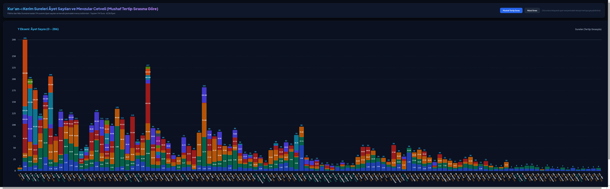
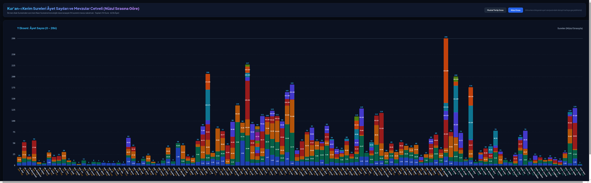
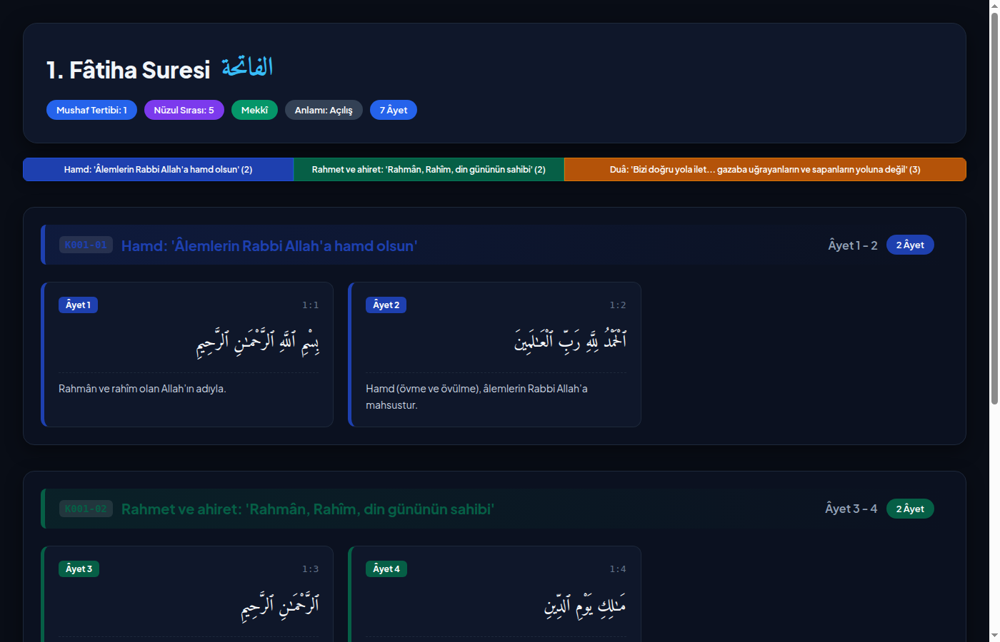
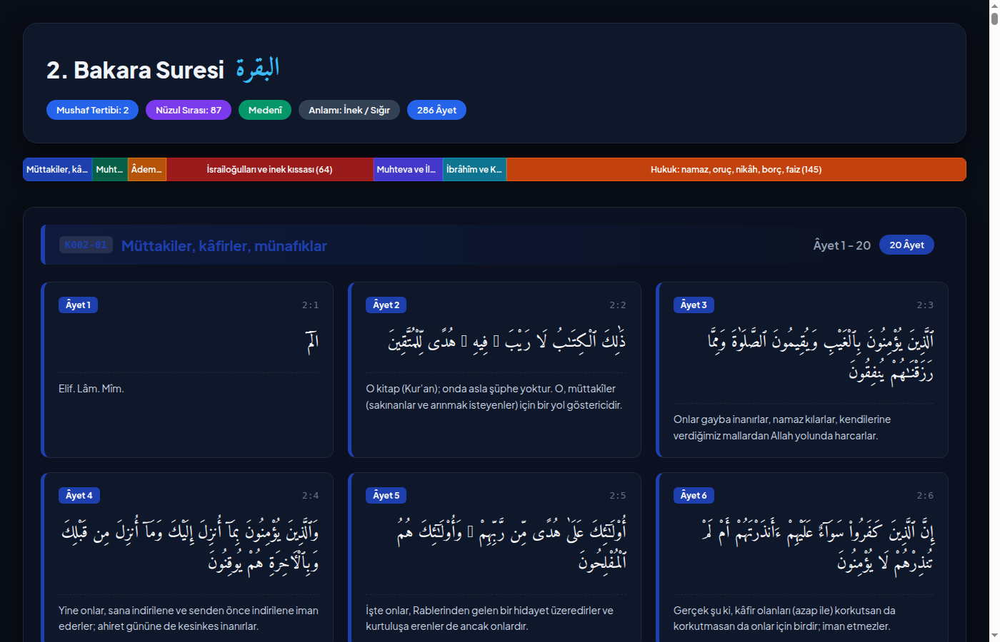
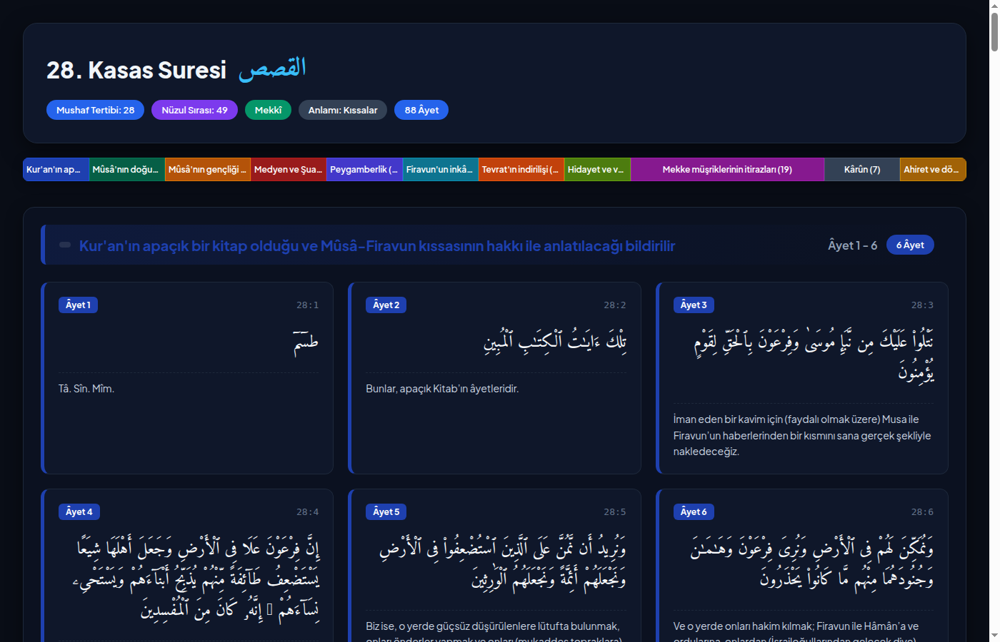
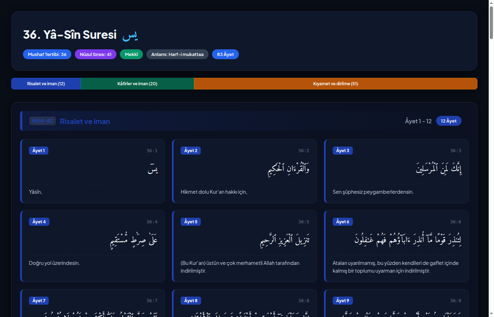
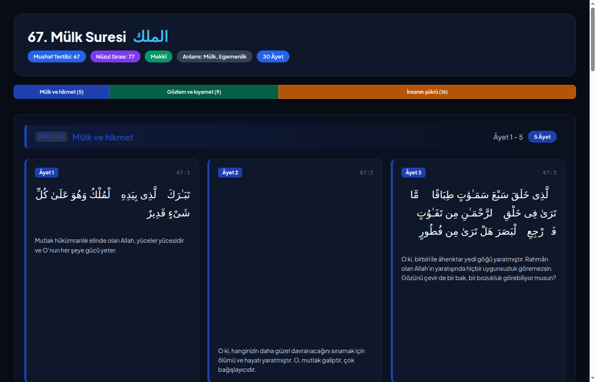
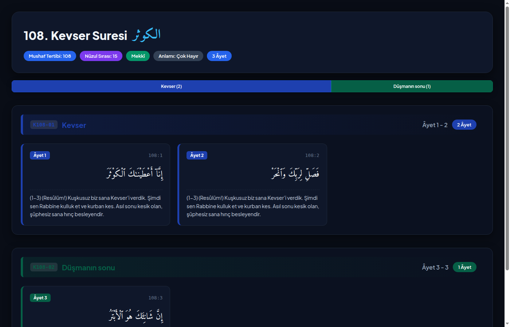
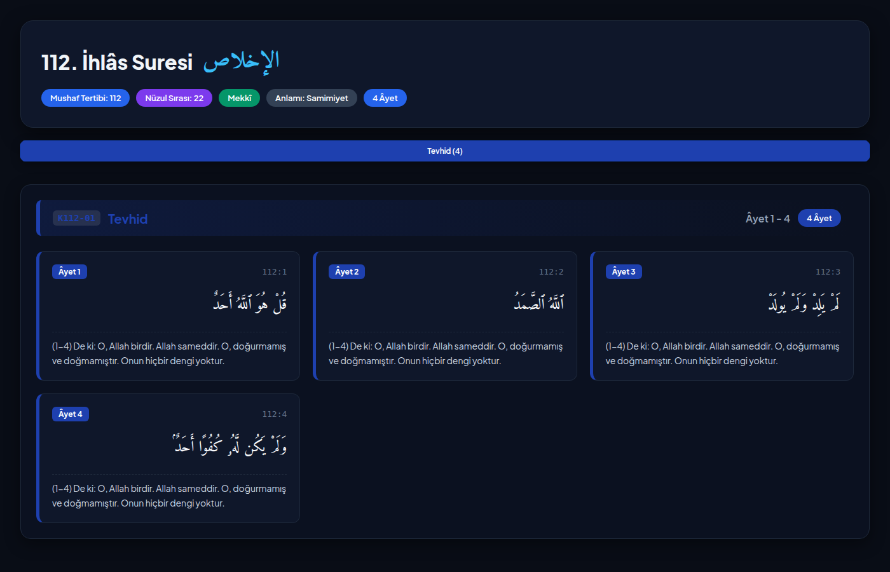
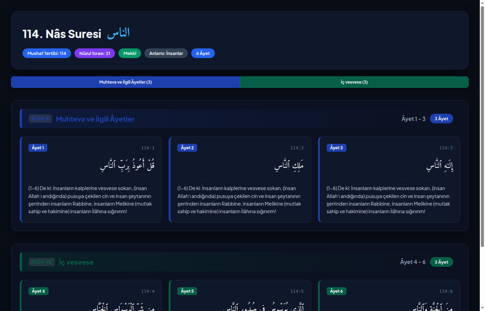

Ayet Sayıları, Nüzul ve Tertip Cetveli ile Kısımlar Haritası
Bütün Kur'ân (6236 âyet) sûre bölümlemesindeki mevzu başlıklarının üst kümelere göre dağılımı. Dilimlerde âyet sayısı ve nispet; açıklamada mevzu adı yazılıdır.
Her hücre bir âyettir; koyu olan, konu dizininde daha çok anılmış âyettir. Üzerine gelin: âyet numarası ve konuları görünür. Kaynak: 00_FIHRIST.md konu dizini (14055 âyet-konu girişi, 5171 farklı âyet).
Açık gri: hiçbir konuda anılmamış âyet. Koyu mavi: en çok konuda anılan âyetler (en fazla 25 konu).
Her renkli bölge bir konu. Konular, embedding benzerliğine göre yerleşir: yakın konular yakında durur. Âyetler konularının renkleriyle gösterilir; birden çok konuda geçen âyetin renkleri karışır. Üzerine gelin: konu adı.
Her sûrenin mevzu bölümleri: âyet aralığı, mevzu adı ve âyet sayısı. Sûreler sırayla; her sûre bir blok.
Bu bölüm, sözlükteki kelimelerin nasıl yapıldığını ve neden kök altında toplandığını açıklar. Sözlük, Kur'ân metninde sırayla karşılaşılan farklı kelimeleri içerir; her biri için kök, kelime türü, fiil kalıbı (bab) ve zaman bilgisi yazılmıştır. Tablolarda kısaltma ya da numara kullanılmaz; her kavram tek bir Türkçe karşılıkla gösterilir.
| Tür (Türkçe) | Arapça | Örnek | Açıklama |
|---|---|---|---|
| İsim | İsm | الْكِتَاب (el-kitâb) | Zaman bildirmeyen, bir şeyin adı veya sıfatı |
| Fiil | Fi'l | كَتَبَ (kataba) | Bir iş veya oluş, zaman bildirir |
| Harf | Harf | فِي (fî) | Tek başına anlamı olmayan, bağlayıcı veya edatlar |
Sözlükte kök sütunu: Morfoloji verisi her kelimenin kökünü verir. Kök etiketi olmayan kelimeler (kısa edatlar, zamirler, bazı özel isimler) sözlükte kök boş bırakılarak "—" ile işaretlenmiştir.
Üç harfli fiil (mücerred) kalıbına harf eklenerek türetilen on kalıp vardır. Sözlükteki "Bab" sütunu bu kalıpları kendi adıyla gösterir.
| Kalıp (vezin) | Mazi biçimi (Arapça) | Kullanım / temel anlam | Örnek |
|---|---|---|---|
| fe'ale | فَعَلَ | Asıl, düz (mücerred); asıl anlam | كَتَبَ (kataba: yazdı) |
| fe''ale | فَعَّلَ | Yoğunluk, tekrar, sayı, bazen geçişlilik | عَلَّمَ (allame: öğretti) |
| fâale | فَاعَلَ | Karşılıklılık, birine karşı yapmak | قَاتَلَ (kâtele: savaştı) |
| af'ale | أَفْعَلَ | Geçişlilik, oluşturmak | أَنْزَلَ (enzele: indirdi) |
| tefe''ale | تَفَعَّلَ | Etkilenme: fe''ale kalıbının etkisine girmek | تَعَلَّمَ (te'allame: öğrendi) |
| tefâale | تَفَاعَلَ | Birlikte ve karşılıklı yapmak | تَقَاتَلَ (tekâtele: birbirleriyle savaştı) |
| infe'ale | اِنْفَعَلَ | Etkilenme, uğrama | اِنْكَسَرَ (inkesere: kırıldı) |
| ifte'ale | اِفْتَعَلَ | Kendi için yapmak, bir şeyi kendine almak | اِكْتَسَبَ (iktesebe: kazandı) |
| if'alle | اِفْعَلَّ | Renk ve kusur bildirir | اِحْمَرَّ (ihmerre: kızardı) |
| istef'ale | اِسْتَفْعَلَ | Talep, bir şeyi istemek veya saymak | اِسْتَغْفَرَ (istağfere: bağışlanma diledi) |
Sözlükte "Bab" sütunu boş olan kelimeler, üç harfli fiil kalıbı taşımayan isim veya harflerdir.
İştikak, aynı kökten yeni kelimelerin kalıplarla türetilmesidir. Kökteki anlam çekirdeği sabit kalır; kalıp, öznenin, zamanın veya yerin anlamını belirler.
| Türetme | Kalıp | Anlamı | Örnek (k-t-b) |
|---|---|---|---|
| Mastar | fi'âl, fa'l, fu'ûl | İşin adı | كِتَاب (kitâb: yazı / kitap) |
| İsm-i fail | fâ'il | İşi yapan | كَاتِب (kâtib: yazan) |
| İsm-i mef'ul | mef'ûl | İşe uğrayan | مَكْتُوب (maktûb: yazılmış) |
| Sıfat-ı müşebbehe | fa'îl, fa'ûl, fa'l | Kalıcı nitelik | كَرِيم (kerîm: cömert) |
| Mübalağa | fa''âl, fa'ûl | Çokluk ve derinlik | عَلَّام (allâm: çok bilen) |
| İsm-i mekân | mef'al, mef'ile | İşin yapıldığı yer | مَكْتَب (maktab: yazı yeri / okul) |
| İsm-i zaman | mef'al | İşin zamanı | مَوْعِد (mev'id: buluşma zamanı) |
| İsm-i alet | mif'al, mif'ale | İşin aracı | مِكْتَب (miktab) |
| İsm-i tafdil | af'al | Üstünlük | أَكْثَر (ekser: daha çok) |
Neden kök altında toplanır? Kök, anlamın özüdür; kalıp, bu özü yönlendirir. "ك ت ب" kökünde yazma anlamı vardır; kitap (yazılmış şey), kâtib (yazan), maktab (yazı yeri, okul) hepsi bu çekirdekten çıkar. Bu yüzden sözlük kelimeleri tek tek değil, köklere göre gruplanarak öğrenilebilir: bir kökü öğrenmek, o kökten gelen kelimeleri birlikte öğretir.
veri_harici/eyupipler/quran-morphology.txt) alınmıştır; veri etiketleri Türkçe karşılıklarına sozluk_uret.py içinde çevrilir.veri_harici/eyupipler/word-translations-tr.json dosyasındaki mevcut Türkçe karşılıklardan gelir. Bu dosya hazır bir sözlüktür; karşılıklar tek tek doğrulanmamıştır, kök anlamları ayrıca elle gözden geçirilmelidir. Karşılığı olmayan kelimeler "—" ile işaretlidir (19 017 yüzeyden 6 846'sının karşılığı var).Mushaf tertip sırasına göre (1-114) surelerin âyet sayıları ve kendi içlerindeki mevzu/kısım taksimatı.

Kronolojik nüzul sırasına göre (Alak'tan Nasr'a) 114 surenin âyet sayıları ve mevzu blokları.

Bu fihrist bütün çalışmanın haritasıdır. Her sure, kendi dosyasında on başlıkla açıklanır; kısımlar burada numaralanır.
_SABLON.md biçiminde tutulur; soru bu fihristteki S/K kimliğiyle bağlanır.| Sıra | Tertip (Mushaf) sırası | Nüzul sırası | Arapça | Sure | Anlamı | Âyet | İniş | Dosya |
|---|---|---|---|---|---|---|---|---|
| 1 | 96 | 1 | الْعَلَقِ | Alak | Kan Pıhtısı | 19 | Mekkî | sureler/096-alak.md |
| 2 | 68 | 2 | الْقَلَمِ | Kalem | Kalem | 52 | Mekkî | sureler/068-kalem.md |
| 3 | 73 | 3 | الْمُزَّمِّلِ | Müzzemmil | Bürünen | 20 | Mekkî | sureler/073-muzzemmil.md |
| 4 | 74 | 4 | الْمُدَّثِّرِ | Müddessir | Bürünen | 56 | Mekkî | sureler/074-muddessir.md |
| 5 | 1 | 5 | الْفَاتِحَةِ | Fâtiha | Açılış | 7 | Mekkî | sureler/001-fatiha.md |
| 6 | 111 | 6 | الْمَسَدِ | Mesed | Lif / Ip | 5 | Mekkî | sureler/111-mesed.md |
| 7 | 81 | 7 | التَّكْو۪يرِ | Tekvîr | Dürülme | 29 | Mekkî | sureler/081-tekvir.md |
| 8 | 87 | 8 | الْاَعْلٰى | A'lâ | En Yüce | 19 | Mekkî | sureler/087-ala.md |
| 9 | 92 | 9 | الَّيْلِ | Leyl | Gece | 21 | Mekkî | sureler/092-leyl.md |
| 10 | 89 | 10 | الْفَجْرِ | Fecr | Şafak | 30 | Mekkî | sureler/089-fecr.md |
| 11 | 93 | 11 | الضُّحٰى | Duhâ | Kuşluk | 11 | Mekkî | sureler/093-duha.md |
| 12 | 94 | 12 | الْاِنْشِرَاحِ | İnşirâh | Açılma | 8 | Mekkî | sureler/094-insirah.md |
| 13 | 103 | 13 | الْعَصْرِ | Asr | Zaman / İkindi | 3 | Mekkî | sureler/103-asr.md |
| 14 | 100 | 14 | الْعَادِيَاتِ | Âdiyât | Koşan Atlar | 11 | Mekkî | sureler/100-adiyat.md |
| 15 | 108 | 15 | الْكَوْثَرِ | Kevser | Çok Hayır | 3 | Mekkî | sureler/108-kevser.md |
| 16 | 102 | 16 | التَّكَاثُرِ | Tekâsür | Çokluk Yarışı | 8 | Mekkî | sureler/102-tekasur.md |
| 17 | 107 | 17 | الْمَاعُونِ | Mâ'ûn | Yardım Eşyası | 7 | Mekkî | sureler/107-maun.md |
| 18 | 109 | 18 | الْكَافِرُونَ | Kâfirûn | Kâfirler | 6 | Mekkî | sureler/109-kafirun.md |
| 19 | 105 | 19 | الْف۪يلِ | Fîl | Fil | 5 | Mekkî | sureler/105-fil.md |
| 20 | 113 | 20 | الْفَلَقِ | Felak | Sabah / Yarılma | 5 | Mekkî | sureler/113-felak.md |
| 21 | 114 | 21 | النَّاسِ | Nâs | İnsanlar | 6 | Mekkî | sureler/114-nas.md |
| 22 | 112 | 22 | الْاِخْلَاصِ | İhlâs | Samimiyet | 4 | Mekkî | sureler/112-ihlas.md |
| 23 | 53 | 23 | النَّجْمِ | Necm | Yıldız | 62 | Mekkî | sureler/053-necm.md |
| 24 | 80 | 24 | عَبَسَ | Abese | Yüzünü Ekşitti | 42 | Mekkî | sureler/080-abese.md |
| 25 | 97 | 25 | الْقَدْرِ | Kadr | Kadir | 5 | Mekkî | sureler/097-kadr.md |
| 26 | 91 | 26 | الشَّمْسِ | Şems | Güneş | 15 | Mekkî | sureler/091-sems.md |
| 27 | 85 | 27 | الْبُرُوجِ | Bürûc | Burçlar | 22 | Mekkî | sureler/085-buruc.md |
| 28 | 95 | 28 | التّ۪ينِ | Tîn | İncir | 8 | Mekkî | sureler/095-tin.md |
| 29 | 106 | 29 | قُرَيْشٍ | Kureyş | Kureyş | 4 | Mekkî | sureler/106-kureys.md |
| 30 | 101 | 30 | الْقَارِعَةِ | Kâria | Çarpan | 11 | Mekkî | sureler/101-karia.md |
| 31 | 75 | 31 | الْقِيٰمَةِ | Kıyâme | Kıyamet | 40 | Mekkî | sureler/075-kiyame.md |
| 32 | 104 | 32 | الْهُمَزَةِ | Hümeze | Kötü Söz Söyleyen | 9 | Mekkî | sureler/104-humeze.md |
| 33 | 77 | 33 | الْمُرْسَلَاتِ | Mürselât | Gönderilenler | 50 | Mekkî | sureler/077-murselat.md |
| 34 | 50 | 34 | قۤ | Kâf | Harf-i mukattaa | 45 | Mekkî | sureler/050-kaf.md |
| 35 | 90 | 35 | الْبَلَدِ | Beled | Şehir | 20 | Mekkî | sureler/090-beled.md |
| 36 | 86 | 36 | الطَّارِقِ | Târık | Gece Gelen | 17 | Mekkî | sureler/086-tarik.md |
| 37 | 54 | 37 | الْقَمَرِ | Kamer | Ay | 55 | Mekkî | sureler/054-kamer.md |
| 38 | 38 | 38 | صۤ | Sâd | Harf-i mukattaa | 88 | Mekkî | sureler/038-sad.md |
| 39 | 7 | 39 | الْاَعْرَافِ | A'râf | Yüksek Yerler | 206 | Mekkî | sureler/007-araf.md |
| 40 | 72 | 40 | الْجِنِّ | Cin | Cinler | 28 | Mekkî | sureler/072-cin.md |
| 41 | 36 | 41 | يٰسۤ | Yâ-Sîn | Harf-i mukattaa | 83 | Mekkî | sureler/036-ya-sin.md |
| 42 | 25 | 42 | الْفُرْقَانِ | Furkân | Ayırıcı | 77 | Mekkî | sureler/025-furkan.md |
| 43 | 35 | 43 | فَاطِرٍ | Fâtır | Yaratıcı | 45 | Mekkî | sureler/035-fatir.md |
| 44 | 19 | 44 | مَرْيَمَ | Meryem | Meryem Hatun | 98 | Mekkî | sureler/019-meryem.md |
| 45 | 20 | 45 | طٰهٰ | Tâhâ | Harf-i mukattaa | 135 | Mekkî | sureler/020-taha.md |
| 46 | 56 | 46 | الْوَاقِعَةِ | Vâkıa | Vuku Bulacak Olay | 96 | Mekkî | sureler/056-vakia.md |
| 47 | 26 | 47 | الشُّعَرَاءِ | Şu'arâ | Şairler | 227 | Mekkî | sureler/026-suara.md |
| 48 | 27 | 48 | النَّمْلِ | Neml | Karınca | 93 | Mekkî | sureler/027-neml.md |
| 49 | 28 | 49 | الْقَصَصِ | Kasas | Kıssalar | 88 | Mekkî | sureler/028-kasas.md |
| 50 | 17 | 50 | الْاِسْرَاۤءِ | İsrâ | Gece Yürüyüşü | 111 | Mekkî | sureler/017-isra.md |
| 51 | 10 | 51 | يُونُسَ | Yûnus | Yunus Peygamber | 109 | Mekkî | sureler/010-yunus.md |
| 52 | 11 | 52 | هُودٍ | Hûd | Hûd Peygamber | 123 | Mekkî | sureler/011-hud.md |
| 53 | 12 | 53 | يُوسُفَ | Yûsuf | Yusuf Peygamber | 111 | Mekkî | sureler/012-yusuf.md |
| 54 | 15 | 54 | الْحِجْرِ | Hicr | Taşlık Vadi | 99 | Mekkî | sureler/015-hicr.md |
| 55 | 6 | 55 | الْاَنْعَامِ | En'âm | Hayvanlar, Davarlar | 165 | Mekkî | sureler/006-enam.md |
| 56 | 37 | 56 | الصَّاۤفَّاتِ | Sâffât | Saf Tutanlar | 182 | Mekkî | sureler/037-saffat.md |
| 57 | 31 | 57 | لُقْمٰانَ | Lokmân | Lokmân Hakîm | 34 | Mekkî | sureler/031-lokman.md |
| 58 | 34 | 58 | سَبَأٍ | Sebe' | Sebe' (Yemen'de bir kavim/ belde) | 54 | Mekkî | sureler/034-sebe.md |
| 59 | 39 | 59 | الزُّمَرِ | Zümer | Gruplar | 75 | Mekkî | sureler/039-zumer.md |
| 60 | 40 | 60 | الْمُؤْمِنِ | Mü'min | İman Eden / Bağışlayıcı | 85 | Mekkî | sureler/040-mumin.md |
| 61 | 41 | 61 | فُصِّلَتْ | Fussilet | Ayrıntılandırılmış | 54 | Mekkî | sureler/041-fussilet.md |
| 62 | 42 | 62 | الشُّورٰى | Şûrâ | İstişare | 53 | Mekkî | sureler/042-sura.md |
| 63 | 43 | 63 | الزُّخْرُفِ | Zuhruf | Altın Süs | 89 | Mekkî | sureler/043-zuhruf.md |
| 64 | 44 | 64 | الدُّخَانِ | Duhân | Duman | 59 | Mekkî | sureler/044-duhan.md |
| 65 | 45 | 65 | الْجَاثِيَةِ | Câsiye | Diz Çökenler | 37 | Mekkî | sureler/045-casiye.md |
| 66 | 46 | 66 | الْاَحْقَافِ | Ahkâf | Kum Tepeleri | 35 | Mekkî | sureler/046-ahkaf.md |
| 67 | 51 | 67 | الذَّارِيَاتِ | Zâriyât | Savuran Rüzgârlar | 60 | Mekkî | sureler/051-zariyat.md |
| 68 | 88 | 68 | الْغَاشِيَةِ | Gâşiye | Kaplayan | 26 | Mekkî | sureler/088-gasiye.md |
| 69 | 18 | 69 | الْكَهْفِ | Kehf | Mağara | 110 | Mekkî | sureler/018-kehf.md |
| 70 | 16 | 70 | النَّحْلِ | Nahl | Bal Arısı | 128 | Mekkî | sureler/016-nahl.md |
| 71 | 71 | 71 | نُوحٍ | Nûh | Nûh Peygamber | 28 | Mekkî | sureler/071-nuh.md |
| 72 | 14 | 72 | اِبْرٰه۪يمَ | İbrâhîm | İbrahim Peygamber | 52 | Mekkî | sureler/014-ibrahim.md |
| 73 | 21 | 73 | الْاَنْبِيَاءِ | Enbiyâ | Peygamberler | 112 | Mekkî | sureler/021-enbiya.md |
| 74 | 23 | 74 | الْمُؤْمِنُونَ | Mü'minûn | Müminler | 118 | Mekkî | sureler/023-muminun.md |
| 75 | 32 | 75 | السَّجْدَةِ | Secde | Secde | 30 | Mekkî | sureler/032-secde.md |
| 76 | 52 | 76 | الطُّورِ | Tûr | Dağ | 49 | Mekkî | sureler/052-tur.md |
| 77 | 67 | 77 | الْمُلْكِ | Mülk | Mülk, Egemenlik | 30 | Mekkî | sureler/067-mulk.md |
| 78 | 69 | 78 | الْحَاقَّةِ | Hâkka | Gerçekleşen | 52 | Mekkî | sureler/069-hakka.md |
| 79 | 70 | 79 | الْمَعَارِجِ | Meâric | Yükselme Dereceleri | 44 | Mekkî | sureler/070-mearic.md |
| 80 | 78 | 80 | النَّبَأِ | Nebe' | Büyük Haber | 40 | Mekkî | sureler/078-nebe.md |
| 81 | 79 | 81 | النَّازِعَاتِ | Nâziât | Çekenler | 46 | Mekkî | sureler/079-naziat.md |
| 82 | 82 | 82 | الْاِنْفِطَارِ | İnfitâr | Yarılma | 19 | Mekkî | sureler/082-infitar.md |
| 83 | 84 | 83 | الْاِنْشِقَاقِ | İnşikâk | Yarılma | 25 | Mekkî | sureler/084-insikak.md |
| 84 | 30 | 84 | الرُّومِ | Rûm | Rumlar (Bizans) | 60 | Mekkî | sureler/030-rum.md |
| 85 | 29 | 85 | الْعَنْكَبُوتِ | Ankebût | Örümcek | 69 | Mekkî | sureler/029-ankebut.md |
| 86 | 83 | 86 | الْمُطَفِّف۪ينَ | Mutaffifîn | Ölçüde Hile Edenler | 36 | Mekkî | sureler/083-mutaffifin.md |
| 87 | 2 | 87 | الْبَقَرَةِ | Bakara | İnek / Sığır | 286 | Medenî | sureler/002-bakara.md |
| 88 | 8 | 88 | الْاَنْفَالِ | Enfâl | Ganimetler | 75 | Medenî | sureler/008-enfal.md |
| 89 | 3 | 89 | اٰلِ عِمْرٰنَ | Âl-i İmrân | İmrân Ailesi | 200 | Medenî | sureler/003-al-i-imran.md |
| 90 | 33 | 90 | الْاَحْزَابِ | Ahzâb | Topluluklar | 73 | Medenî | sureler/033-ahzab.md |
| 91 | 60 | 91 | الْمُمْتَحِنَةِ | Mümtehine | İmtihan Edilen Kadın | 13 | Medenî | sureler/060-mumtehine.md |
| 92 | 4 | 92 | النِّسَاءِ | Nisâ | Kadınlar | 176 | Medenî | sureler/004-nisa.md |
| 93 | 99 | 93 | الزِّلْزَالِ | Zilzâl | Sarsıntı | 8 | Medenî | sureler/099-zilzal.md |
| 94 | 57 | 94 | الْحَد۪يدِ | Hadîd | Demir | 29 | Medenî | sureler/057-hadid.md |
| 95 | 47 | 95 | مُحَمَّدٍ | Muhammed | Hz. Muhammed | 38 | Medenî | sureler/047-muhammed.md |
| 96 | 13 | 96 | الرَّعْدِ | Ra'd | Gök Gürültüsü | 43 | Medenî | sureler/013-rad.md |
| 97 | 55 | 97 | الرَّحْمٰنِ | Rahmân | Rahman | 78 | Medenî | sureler/055-rahman.md |
| 98 | 76 | 98 | الْاِنْسَانِ | İnsân | İnsan | 31 | Medenî | sureler/076-insan.md |
| 99 | 65 | 99 | الطَّلَاقِ | Talâk | Boşama | 12 | Medenî | sureler/065-talak.md |
| 100 | 98 | 100 | الْبَيِّنَةِ | Beyyine | Apaçık Delil | 8 | Medenî | sureler/098-beyyine.md |
| 101 | 59 | 101 | الْحَشْرِ | Haşr | Toplama / Sürme | 24 | Medenî | sureler/059-hasr.md |
| 102 | 24 | 102 | النُّورِ | Nûr | Işık | 64 | Medenî | sureler/024-nur.md |
| 103 | 22 | 103 | الْحَجِّ | Hac | Hac İbadeti | 78 | Medenî | sureler/022-hac.md |
| 104 | 63 | 104 | الْمُنَافِقُونَ | Münâfikûn | Münafıklar | 11 | Medenî | sureler/063-munafikun.md |
| 105 | 58 | 105 | الْمُجَادَلَةِ | Mücâdele | Tartışma | 22 | Medenî | sureler/058-mucadele.md |
| 106 | 49 | 106 | الْحُجُرَاتِ | Hucurât | Odalar | 18 | Medenî | sureler/049-hucurat.md |
| 107 | 66 | 107 | التَّحْر۪يمِ | Tahrîm | Haram Kılma | 12 | Medenî | sureler/066-tahrim.md |
| 108 | 64 | 108 | التَّغَابُنِ | Teğâbun | Aldanış | 18 | Medenî | sureler/064-tegabun.md |
| 109 | 61 | 109 | الصَّفِّ | Saff | Saf | 14 | Medenî | sureler/061-saff.md |
| 110 | 62 | 110 | الْجُمُعَةِ | Cum'a | Cuma | 11 | Medenî | sureler/062-cuma.md |
| 111 | 48 | 111 | الْفَتْحِ | Fetih | Açık Zafer | 29 | Medenî | sureler/048-fetih.md |
| 112 | 5 | 112 | الْمَائِدَةِ | Mâide | Sofra | 120 | Medenî | sureler/005-maide.md |
| 113 | 9 | 113 | التَّوْبَةِ | Tevbe | Dönüş, Pişmanlık | 129 | Medenî | sureler/009-tevbe.md |
| 114 | 110 | 114 | النَّصْرِ | Nasr | Yardım | 3 | Medenî | sureler/110-nasr.md |
'(rivayet)' işaretli adlar ve hadisler kaynağından yoklanmalıdır.
Anlamı: Açılış · Âyet sayısı: 7 · İniş: Mekkî · Kimlik: S001
f-t-h (açmak). Kitabın mushaf'ta açılışı olduğu için bu ad verildi.
Fetih (48. sure, aynı kök), Fâtır (35. sure), iftitâh (başlatma).
Fetha: kapalı bir şeyi açmak, aralamak; bir işi başlatmak.
Kelime somut 'kapıyı açmak' anlamından soyut 'başlangıç' anlamına genişlemiştir. Lügat kitaplarında bu geçiş kaydedilir; tarihsel türeyiş ayrıntısı kaynaktan yoklanmalı.
Mecaz-ı zamanî: sure kitabın başında olduğu için başlangıç adıyla anıldı. Kelime kendi hakiki anlamını (açma) taşır.
Sure mushafın açılışıdır, namazın her rekâtında okunur ve bütün Kur'an'ın içindekilerini bir dua çerçevesinde özetler. Ad, bu konumu doğrudan söyler.
Ümmü'l-Kitâb gibi bir ad öz içeriği söyler, ama 'Fâtiha' tertipteki yeri söyler. Bu sure için tertip ile içerik aynı yöne işaret eder.
Ümmü'l-Kitâb (kitabın anası/özü; hadiste geçer), es-Seb'u'l-mesânî (Hicr 87. ayetindeki 'yedi tekrarlanan' ifadesine bağlanır), eş-Şifâ, el-Hamd, es-Salât (namazın rüknü). Her ad surenin başka bir yönünü anlatır: öz, tekrar, şifa, hamd, ibadet.
Sure, namazda, ruhi okumada, dua ve şifa amacıyla en çok okunan sure olduğu için her vecihten ayrı bir ad almıştır. Bu adların bir kısmı hadis rivayetine dayanır ve kaynağı ayrıca yoklanmalıdır.
'(rivayet)' işaretli adlar ve hadisler kaynağından yoklanmalıdır.

| Mevzu / Fasıl | Âyet Aralığı | Âyet Sayısı | Açıklama | |
|---|---|---|---|---|
| Hamd: 'Âlemlerin Rabbi Allah'a hamd olsun' | Âyet 1 - 2 | 2 âyet | Hamd: 'Âlemlerin Rabbi Allah'a hamd olsun' | |
| Rahmet ve ahiret: 'Rahmân, Rahîm, din gününün sahibi' | Âyet 3 - 4 | 2 âyet | Rahmet ve ahiret: 'Rahmân, Rahîm, din gününün sahibi' | |
| Duâ: 'Bizi doğru yola ilet... gazaba uğrayanların ve sapanların yoluna değil' | Âyet 5 - 7 | 3 âyet | Duâ: 'Bizi doğru yola ilet... gazaba uğrayanların ve sapanların yoluna değil' |
(Detaylı interaktif harita ve ayet pencereleri için bkz: html_grafikler/sureler/1_detay.html)
Anlamı: İnek / Sığır · Âyet sayısı: 286 · İniş: Medenî · Kimlik: S002
b-k-r (yarmak, ilk kesmek). Sure, 67-73. ayetlerdeki sarı inek kıssasından adını alır.
Bakar (sığır, cins adı), Bakr (genç deve), Bakîre (ilk doğum).
Bakara: dişi sığır, inek.
Kelimenin kökü 'yarmak/sürmek' anlamındadır; sığırın toprak sürmesiyle bağlantılandırılması lügat geleneğinde yer alır. Tarihsel türeyiş ayrıntısı yoklanmalı.
Cüz'den kül: kıssanın bir parçası (inek) bütün surenin adı oldu. Hakikat (cins adı) kullanılmıştır.
67-73. ayetlerdeki kıssa İsrailoğullarının sorgulamada aşırıya kaçmasını, emri ağırlaştırmasını ve maddi bağlılığını gösterir. Kıssa, surenin en uzun anlatısıdır.
'Buzağı' adı Bakara 51 ve 92'de geçen daha özel bir hadiseyi vurgular, ama kıssanın sonunda buzağı değil inek kesilir. 'Musa' adı yalnızca bir peygamberi anar. 'İnek' adı ise kıssanın emir-sorgu-kesim üçlüsünü tek kelimede toplar.
Fustâtü'l-Kur'ân (Kur'an'ın zirvesi) ve Zehrâvân (iki nur; Müslim'deki bir hadis Bakara ile Âl-i İmrân için kullanır). Her ikisi rivayet niteliğindedir, kaynak yoklanmalı.
Sure hem uzunluğu, hem hukuki içeriği, hem kıssası ile çok yönlüdür; bu yüzden birden çok övgü ve ad bu sureye verilmiştir.
'(rivayet)' işaretli adlar ve hadisler kaynağından yoklanmalıdır.

| Mevzu / Fasıl | Âyet Aralığı | Âyet Sayısı | Açıklama | |
|---|---|---|---|---|
| Müttakiler, kâfirler, münafıklar | Âyet 1 - 20 | 20 âyet | Müttakiler, kâfirler, münafıklar | |
| İlâhî çağrıya karşı insanların tavrı; iman edenler, münâfıklar ve kâfirler | Âyet 21 - 29 | 9 âyet | İlâhî çağrıya karşı insanların tavrı; iman edenler, münâfıklar ve kâfirler | |
| Âdem'in yaratılışı ve halifelik | Âyet 30 - 39 | 10 âyet | Âdem'in yaratılışı ve halifelik | |
| İsrailoğulları ve inek kıssası | Âyet 40 - 103 | 64 âyet | İsrailoğulları ve inek kıssası | |
| Ehl-i Kitab'ın (yahudi ve hıristiyanlar) kıskançlıkları ve dar görüşlülükleri; Hz. Süleyman (as.), Hârût ve Mârût | Âyet 104 - 123 | 20 âyet | Ehl-i Kitab'ın (yahudi ve hıristiyanlar) kıskançlıkları ve dar görüşlülükleri; Hz. Süleyman (as.), Hârût ve Mârût | |
| İbrâhîm ve Kâbe | Âyet 124 - 141 | 18 âyet | İbrâhîm ve Kâbe | |
| Hukuk: namaz, oruç, nikâh, borç, faiz | Âyet 142 - 286 | 145 âyet | Hukuk: namaz, oruç, nikâh, borç, faiz |
(Detaylı interaktif harita ve ayet pencereleri için bkz: html_grafikler/sureler/2_detay.html)
Anlamı: İmrân Ailesi · Âyet sayısı: 200 · İniş: Medenî · Kimlik: S003
e-v-l (âl: aile, ehil). İmrân ism-i alemdir; Hz. Meryem'in babasının adı olarak bilinir.
Âl (ehl, hane), İmrân (Musa ve Harun'un babası ile Meryem'in babası arasında tefsirde tartışma vardır), Meryem.
Âl: bir kimsenin soyu ve yakınları. İmrân: özel ad.
İmrân adının Arapça kökü tartışmalıdır; bazı lügatçiler 'imâret' (yapılandırma/ imar) ile ilişkilendirir, bu kesin değildir.
Ism-i alem + âl: bir hanedanın adı sure adı olmuştur (aile üzerinden kişi anma).
33-35. ayetlerde Âdem, Nûh, İbrâhîm ailesi ile İmrân ailesinin seçilmesi zikredilir. Sure, Necran Hristiyan heyetiyle tartışmayı (61. ayet mübâhele) ve İsa'nın ilahlığının reddini içerir.
'Meryem' veya 'İsa' adı tek bir kişiyi öne çıkarır. 'İmrân ailesi' ise Meryem-İsa zincirini ve Hristiyan tartışmasının aile çerçevesini birlikte verir.
Zehrâvân (Bakara ile birlikte; rivayet), 'Tayyibe' gibi bazı rivayet adları kaynaklarda geçer ama bu notta yoklanmadığı için yazılmadı.
Sure, Bakara ile birlikte 'Zehrâvân' olarak anıldığı rivayeti ile çok övülen iki sureden biridir.
'(rivayet)' işaretli adlar ve hadisler kaynağından yoklanmalıdır.
| Mevzu / Fasıl | Âyet Aralığı | Âyet Sayısı | Açıklama | |
|---|---|---|---|---|
| Muhkem-müteşâbih ve tevhid | Âyet 1 - 9 | 9 âyet | Muhkem-müteşâbih ve tevhid | |
| Önceki kitapların tasdiki, imanın kabul şartları | Âyet 10 - 32 | 23 âyet | Önceki kitapların tasdiki, imanın kabul şartları | |
| Âl-i İbrâhîm, İmrân ailesi ve Meryem | Âyet 33 - 63 | 31 âyet | Âl-i İbrâhîm, İmrân ailesi ve Meryem | |
| Mübâhele ve Necran heyeti | Âyet 64 - 64 | 1 âyet | Mübâhele ve Necran heyeti | |
| Sevdiğiniz şeylerden infak; Gerçek din İslâm; müslüman olarak ölmek | Âyet 65 - 120 | 56 âyet | Sevdiğiniz şeylerden infak; Gerçek din İslâm; müslüman olarak ölmek | |
| Uhud ve sabır | Âyet 121 - 180 | 60 âyet | Uhud ve sabır | |
| Kâfirlerin gurur ve inatları; Allah'ın vaadi haktır, Allah'a güvenmek gerekir | Âyet 181 - 189 | 9 âyet | Kâfirlerin gurur ve inatları; Allah'ın vaadi haktır, Allah'a güvenmek gerekir | |
| Sabır ve tevekkül kapanışı | Âyet 190 - 200 | 11 âyet | Sabır ve tevekkül kapanışı |
(Detaylı interaktif harita ve ayet pencereleri için bkz: html_grafikler/sureler/3_detay.html)
Anlamı: Kadınlar · Âyet sayısı: 176 · İniş: Medenî · Kimlik: S004
n-s-' tartışmalı; yaygın görüşe göre 'nisve' (kadın) kökünden. Sure yetimler, kadınlar ve miras konularıyla başlar.
İmra'a (tekil kadın), Nisvân, Nisâ-i Suğrâ (Talâk suresi için rivayet).
Nisâ: kadınlar (imra'a'nın çoğulu).
Kadın anlamına lügatte kullanım yoluyla yerleşmiştir; kökenin 'nisve' olduğu görüşü lügat geleneğinde yaygındır.
Cins adı ile konu vurgusu: sure kadın-yetim-miras hukukunu ön plana alır.
'Yetimler' adı yalnızca bir kesimi anar. 'Nisâ' ise yetimleri, kadınları, mirası ve aile yapısını bir kelimeyle kapsar.
Nisâ-i Kübrâ (uzun Nisâ): Talâk suresine 'Nisâ-i Suğrâ' denmesinin karşılığı olarak rivayet edilir.
Uzunluğu ve Talâk suresinden ayırt edilme ihtiyacı nedeniyle iki farklı Nisâ adı kullanılmıştır (rivayet).
'(rivayet)' işaretli adlar ve hadisler kaynağından yoklanmalıdır.
| Mevzu / Fasıl | Âyet Aralığı | Âyet Sayısı | Açıklama | |
|---|---|---|---|---|
| Yetim ve miras | Âyet 1 - 12 | 12 âyet | Yetim ve miras | |
| Zinânın ortadan kaldırılması gerektiği, evlenilmesi haram olan kadınlar | Âyet 13 - 18 | 6 âyet | Zinânın ortadan kaldırılması gerektiği, evlenilmesi haram olan kadınlar | |
| Nikâh ve mahrem ilişkiler | Âyet 19 - 35 | 17 âyet | Nikâh ve mahrem ilişkiler | |
| Namazın abdestli kılınması, teyemmüm, Ehl-i Kitab'ın dalâlet üzere olduğu, itaat ve diğer fazîletlerin kişiyi sâdık dostlara kavuşturması | Âyet 36 - 57 | 22 âyet | Namazın abdestli kılınması, teyemmüm, Ehl-i Kitab'ın dalâlet üzere olduğu, itaat ve diğer fazîletlerin kişiyi sâdık dostlara kavuşturması | |
| Adalet ve emanet | Âyet 58 - 59 | 2 âyet | Adalet ve emanet | |
| İhânet ve gizlilikten uzak durmak; kararlı ve imanlı olmanın teşviki | Âyet 60 - 135 | 76 âyet | İhânet ve gizlilikten uzak durmak; kararlı ve imanlı olmanın teşviki | |
| Ehl-i kitap, münafık ve cihad | Âyet 136 - 176 | 41 âyet | Ehl-i kitap, münafık ve cihad |
(Detaylı interaktif harita ve ayet pencereleri için bkz: html_grafikler/sureler/4_detay.html)
Anlamı: Sofra · Âyet sayısı: 120 · İniş: Medenî · Kimlik: S005
m-y-d (kımıldamak, hareket) tartışmalıdır; yaygın kabul 'mâde' (yiyecek ve sofra) kelimesine dayanır.
Mâde (sofra, yiyecek), Ukûd (ahitler, sure başındaki kelime).
Mâide: üzerinde yiyecek bulunan sofra; bazen yiyeceğin kendisi.
Sofra adının yiyecek anlamına da kayması, içerik ile kabın adının karışması (cüz/kül ilişkisi) ile açıklanır.
Hakikat: sofra adı, 112-115. ayetlerdeki sofra kıssasının adıdır; sure ahitle başladığı için bu ad araçsal kalır.
112-115. ayetlerde Hz. İsa'nın havarileri gökten sofra istemiş, indirilen sofra ile birlikte imtihan uyarısı yapılmıştır. Sure ahitlerle başlayıp bu kıssaya kadar uzanır.
'Ukûd' (ahitler) adı sure başını verir ama kıssayı ve nimet-imtihan boyutunu vermez. 'Mâide' her ikisini birleştirir.
El-Ukûd (ahitler), ilk ayetin kelimesi olarak anılır (tefsir geleneği).
Sure hukuk ve ahit ağırlığı taşıdığı için iki adla anılır: biri hukuk (ukûd), diğeri kıssa (mâide).
'(rivayet)' işaretli adlar ve hadisler kaynağından yoklanmalıdır.
| Mevzu / Fasıl | Âyet Aralığı | Âyet Sayısı | Açıklama | |
|---|---|---|---|---|
| Ahitler ve helal-haram | Âyet 1 - 5 | 5 âyet | Ahitler ve helal-haram | |
| Abdest, hırsızlık, kısas, zina | Âyet 6 - 50 | 45 âyet | Abdest, hırsızlık, kısas, zina | |
| Ehl-i kitap ve tevrat-incil | Âyet 51 - 82 | 32 âyet | Ehl-i kitap ve tevrat-incil | |
| Helalleri haram saymaktan, acele yeminden, şaraptan, kumardan ve batıl inançtan uzak durmak; ölenin vasiyetine şahitlik etmek | Âyet 83 - 111 | 29 âyet | Helalleri haram saymaktan, acele yeminden, şaraptan, kumardan ve batıl inançtan uzak durmak; ölenin vasiyetine şahitlik etmek | |
| Mâide kıssası | Âyet 112 - 115 | 4 âyet | Mâide kıssası | |
| Kıyamet ve İsa | Âyet 116 - 120 | 5 âyet | Kıyamet ve İsa |
(Detaylı interaktif harita ve ayet pencereleri için bkz: html_grafikler/sureler/5_detay.html)
Anlamı: Hayvanlar, Davarlar · Âyet sayısı: 165 · İniş: Mekkî · Kimlik: S006
n-'-m (nimet). Hayvanların insanlara nimet olması ile bağlantılandırılır; kök tartışmalıdır.
Ni'met, en'âm (hayvan çoğulu), Nahl (16. sure, hayvan teması).
En'âm: deve, sığır, koyun ve keçi gibi evcil hayvanlar.
Hayvanın adı 'nimet' kökünden türetilmiştir, çünkü insan için bir nimet kaynağıdır. Bu türetme tartışmalıdır.
Cins adı: müşriklerin hayvanları putlara adamasından ve helal-haram uydurmasından sözedilir (136-144).
Müşrikler hayvanları putlara adayıp 'bu kadınlara haram, erkeklere helal' diyerek sahte kurallar koyuyordu. Sure bu iki yönü (hayvan ve hüküm) tevhidle cevaplar.
'Tevhid' adı genel olurdu; 'En'âm' adı sure'nin müşrik adetlerine verdiği cevabı ve kozmik delilleri birleştirir.
Bilinen yaygın ikinci bir ad yoktur; yoklanmadan eklenmedi.
Sure'nin bir defada indiği rivayet edilir (tefsir geleneği); buna dayanarak ayrı bir ad aranmamıştır.
'(rivayet)' işaretli adlar ve hadisler kaynağından yoklanmalıdır.
| Mevzu / Fasıl | Âyet Aralığı | Âyet Sayısı | Açıklama | |
|---|---|---|---|---|
| Tevhid ve kozmik deliller | Âyet 1 - 30 | 30 âyet | Tevhid ve kozmik deliller | |
| Peygamberlik ve tebliğ | Âyet 31 - 93 | 63 âyet | Peygamberlik ve tebliğ | |
| Allah'a isyan edenlerin aldanmışlığı, sadece Allah'a güvenmek gerektiği | Âyet 94 - 135 | 42 âyet | Allah'a isyan edenlerin aldanmışlığı, sadece Allah'a güvenmek gerektiği | |
| Müşrik adetleri ve hayvanlar | Âyet 136 - 150 | 15 âyet | Müşrik adetleri ve hayvanlar | |
| Sırat-ı müstakîm ve kapanış | Âyet 151 - 165 | 15 âyet | Sırat-ı müstakîm ve kapanış |
(Detaylı interaktif harita ve ayet pencereleri için bkz: html_grafikler/sureler/6_detay.html)
Anlamı: Yüksek Yerler · Âyet sayısı: 206 · İniş: Mekkî · Kimlik: S007
'-r-f (bilmek). 'A'râf' kelimesi yüksek yer anlamına gelir; iki kök arasındaki ilişki tartışmalıdır.
'Urf (bilinen, örf), A'râf ehli.
A'râf: yüksek yer, tepe; cennet ile cehennem arasında duran yüksek sur.
Yüksek yerin uzaktan görülüp bilinmesi, 'bilmek' kökü ile bağ kurulmasına yol açmıştır. Tarihsel kayıt yoklanmalı.
Mekân adının kavrama (berzah) için kullanılması: arafta duran insanın durumu.
46-49. ayetlerde cennet ile cehennem arasında 'a'râf ehli' anlatılır. Sure Âdem-İblis imtihanı ve kavimlerin tarihi ile bu aradaki insanın dramını işler.
'Âdem' veya 'İblis' adı yalnızca kıssanın bir kişisini anar. 'A'râf' adı insanın iki kutup arasında duruşunu verir.
Bilinen yaygın ikinci bir ad yoktur.
Tek ad; sadece bilinen bir ad vardır.
'(rivayet)' işaretli adlar ve hadisler kaynağından yoklanmalıdır.
| Mevzu / Fasıl | Âyet Aralığı | Âyet Sayısı | Açıklama | |
|---|---|---|---|---|
| Vahyin insana verdiği huzur,dinde aşırılık ve kibrin kötülüğe zemin hazırlaması | Âyet 1 - 10 | 10 âyet | Vahyin insana verdiği huzur,dinde aşırılık ve kibrin kötülüğe zemin hazırlaması | |
| Âdem ve İblis | Âyet 11 - 25 | 15 âyet | Âdem ve İblis | |
| Kötülüklerin yasaklanıp iyiliklerin emredilişi, A'râf ashâbı, cennetlik ve cehennemlikler | Âyet 26 - 58 | 33 âyet | Kötülüklerin yasaklanıp iyiliklerin emredilişi, A'râf ashâbı, cennetlik ve cehennemlikler | |
| Kavimlerin tarihi: Nûh, Hûd, Sâlih, Lût, Şuayb | Âyet 59 - 93 | 35 âyet | Kavimlerin tarihi: Nûh, Hûd, Sâlih, Lût, Şuayb | |
| Nuh, Hud, Salih, Lût veŞuayb peygamberlerin açık uyarılarının kavimlerince reddedilişi | Âyet 94 - 102 | 9 âyet | Nuh, Hud, Salih, Lût veŞuayb peygamberlerin açık uyarılarının kavimlerince reddedilişi | |
| Mûsâ ve Firavun | Âyet 103 - 171 | 69 âyet | Mûsâ ve Firavun | |
| Ahitten kayıt ve kapanış | Âyet 172 - 206 | 35 âyet | Ahitten kayıt ve kapanış |
(Detaylı interaktif harita ve ayet pencereleri için bkz: html_grafikler/sureler/7_detay.html)
Anlamı: Ganimetler · Âyet sayısı: 75 · İniş: Medenî · Kimlik: S008
n-f-l (fazlalık, ihsan). 'Nafile' ile aynı kök; ganimet fazladan kazanılan mal anlamındadır.
Nâfile (fazlalık), Ganîme (ganimet), Fey' (dönüş/ganimet).
Enfâl: ganimetler (nafile çoğulu).
Fazlalık anlamından savaş malı anlamına geçiş lügatte kullanım yoluyla olmuştur.
Kinaye/kullanım: ganimet anlamı ayetin ilk konusu olduğu için ad verildi.
'Bedir' adı bir yeri anar. 'Enfâl' hem ganimet hem sabır ve melek konusunu kapsayan bir sonuç adıdır.
Bedir (rivayet olarak sure için kullanılır).
Savaşın ayrıntıları ve ganimet ihtilafı nedeniyle iki ad kullanılmıştır.
'(rivayet)' işaretli adlar ve hadisler kaynağından yoklanmalıdır.
| Mevzu / Fasıl | Âyet Aralığı | Âyet Sayısı | Açıklama | |
|---|---|---|---|---|
| Ganimet ve taksim | Âyet 1 - 10 | 10 âyet | Ganimet ve taksim | |
| Melekler ve sabır | Âyet 11 - 19 | 9 âyet | Melekler ve sabır | |
| Hâkimiyet Allah'ın oluncaya kadar mücadele edilmesi gerektiği, Bedir gazvesi ve burada Allah'ın mü'minlere yardım etmesi | Âyet 20 - 66 | 47 âyet | Hâkimiyet Allah'ın oluncaya kadar mücadele edilmesi gerektiği, Bedir gazvesi ve burada Allah'ın mü'minlere yardım etmesi | |
| Esir ve ihtiyat | Âyet 67 - 75 | 9 âyet | Esir ve ihtiyat |
(Detaylı interaktif harita ve ayet pencereleri için bkz: html_grafikler/sureler/8_detay.html)
Anlamı: Dönüş, Pişmanlık · Âyet sayısı: 129 · İniş: Medenî · Kimlik: S009
t-v-b (dönmek). Günahtan dönüş anlamı şeriatta kazanılmıştır.
Berâe (ilişkiyi kesmek, beraat), Ta'b (yorgunluk).
Tevbe: dönmek; günahtan dönüp pişmanlık duymak. Berâe: ayrılma ve sorumluluktan beri olma.
Tevbe kelimesi lügatte 'dönmek' anlamındadır; dini anlamı tefsir ve fıkıh geleneğinde yerleşmiştir.
Kinaye ve hakikat: sure hem ayrılık ilanı (berâe), hem tevbe kapısı olarak adlandırılmıştır.
Sure ilk ayetlerinde antlaşmaları bozanlara ayrılık ilan eder; sonunda Ka'b bin Mâlik ve iki arkadaşının tevbesini (118) anlatarak kapıyı açar.
'Berâe' yalnız ilanı verir; 'Tevbe' ise kapının açıldığını söyler. Sure ikisini de taşıdığı için ikisi de kullanılmıştır.
Berâe (birinci ayetin kelimesi), Fâdiha ve Müşakkaşa (rivayet; kaynağı yoklanmadı).
Sure başında Besmele bulunmadığı için rivayetler ve tefsirler farklı ad ve sebep aktarır.
'(rivayet)' işaretli adlar ve hadisler kaynağından yoklanmalıdır.
| Mevzu / Fasıl | Âyet Aralığı | Âyet Sayısı | Açıklama | |
|---|---|---|---|---|
| Berâe ve antlaşmalar | Âyet 1 - 16 | 16 âyet | Berâe ve antlaşmalar | |
| Hac, münafıklar ve cizye | Âyet 17 - 35 | 19 âyet | Hac, münafıklar ve cizye | |
| Yahudilerin Üzeyr, hıristiyanlarınisa Allah'ın oğludur demeleri; kâfirlerin Allah'ın nurunu söndüremeyeceği, mü'minlerin savaşa çağrıldığında istekli davranmaları | Âyet 36 - 37 | 2 âyet | Yahudilerin Üzeyr, hıristiyanlarınisa Allah'ın oğludur demeleri; kâfirlerin Allah'ın nurunu söndüremeyeceği, mü'minlerin savaşa çağrıldığında istekli davranmaları | |
| Tebük ve tasfiye | Âyet 38 - 96 | 59 âyet | Tebük ve tasfiye | |
| Tevbe ve üç kişinin hikâyesi | Âyet 97 - 129 | 33 âyet | Tevbe ve üç kişinin hikâyesi |
(Detaylı interaktif harita ve ayet pencereleri için bkz: html_grafikler/sureler/9_detay.html)
Anlamı: Yunus Peygamber · Âyet sayısı: 109 · İniş: Mekkî · Kimlik: S010
Ism-i alem; Arapça'da ayrı bir kökten türemiş görünmez.
Zünnûn (balık sahibi; 21 ve 68. surelerde geçer).
Özel isim; lügat anlamı yoktur.
Peygamber adı olduğu için lügat sorusu doğmaz.
Ism-i alem: sure bir peygamberin adıyla anılır.
'Kavm-i Yunus' veya 'Tevbe' adı mümkündü; ancak peygamberin adı, kavminin tevbesini de birlikte verir.
Yok.
Tek ad.
'(rivayet)' işaretli adlar ve hadisler kaynağından yoklanmalıdır.
| Mevzu / Fasıl | Âyet Aralığı | Âyet Sayısı | Açıklama | |
|---|---|---|---|---|
| Tevhid ve risalet | Âyet 1 - 37 | 37 âyet | Tevhid ve risalet | |
| Allah ile hemhal olmak; peygamberlerin vazifesi; mü'minlerin batılı reddetme mesuliyeti | Âyet 38 - 70 | 33 âyet | Allah ile hemhal olmak; peygamberlerin vazifesi; mü'minlerin batılı reddetme mesuliyeti | |
| Peygamberler ve kavimler | Âyet 71 - 98 | 28 âyet | Peygamberler ve kavimler | |
| Son hüküm | Âyet 99 - 109 | 11 âyet | Son hüküm |
(Detaylı interaktif harita ve ayet pencereleri için bkz: html_grafikler/sureler/10_detay.html)
Anlamı: Hûd Peygamber · Âyet sayısı: 123 · İniş: Mekkî · Kimlik: S011
h-w-d (dönmek, tevbe). 'Hûd' tevbe edenler anlamına gelir; 'Yahûd' ile aynı köktür.
Yahûd (Yahudi), Hâdî (dönüp hidayet eden).
Hûd: tevbe eden, dönen; peygamberin adı.
Dönüş anlamı tevbe ile bağlandı; Yahudi kelimesi de aynı kökten türer, bu bağlantı tartışmalıdır.
Ism-i alem; kökteki vasıf adın kaynağıdır.
50-60. ayetlerde Hûd'un Âd kavmine tebliği anlatılır; sürenin sonunda 'emrolunduğun gibi dosdoğru ol' (112) buyrulur.
'İstikâmet' adı yalnızca 112. ayetin emrini verir; 'Hûd' ise peygamberin kavmiyle mücadelesini ve dönüş kapısını birlikte taşır.
Rivayet: 'Şeybe' (Hûd ile ilgili hadis rivayeti; kaynak yoklanmalı).
Rivayete göre 'Hûd ve benzerleri beni ihtiyarlattı' hadisi, sürenin ağırlığı ile ilişkilendirilir (rivayet).
'(rivayet)' işaretli adlar ve hadisler kaynağından yoklanmalıdır.
| Mevzu / Fasıl | Âyet Aralığı | Âyet Sayısı | Açıklama | |
|---|---|---|---|---|
| Allah'ın çağrısının hidâyete ilettiği; Allah'ın insanlığa rahmeti ve affediciliği | Âyet 1 - 24 | 24 âyet | Allah'ın çağrısının hidâyete ilettiği; Allah'ın insanlığa rahmeti ve affediciliği | |
| Nûh ve Hûd kavimleri | Âyet 25 - 60 | 36 âyet | Nûh ve Hûd kavimleri | |
| Semûd, Lût, Şuayb | Âyet 61 - 95 | 35 âyet | Semûd, Lût, Şuayb | |
| Firavun'un kibri yüzünden helâki; istikâmet üzere olunma emri; peygamber kıssalarının sekînet ve ibret vesilesi oluşu | Âyet 96 - 111 | 16 âyet | Firavun'un kibri yüzünden helâki; istikâmet üzere olunma emri; peygamber kıssalarının sekînet ve ibret vesilesi oluşu | |
| İstikâmet emri | Âyet 112 - 123 | 12 âyet | İstikâmet emri |
(Detaylı interaktif harita ve ayet pencereleri için bkz: html_grafikler/sureler/11_detay.html)
Anlamı: Yusuf Peygamber · Âyet sayısı: 111 · İniş: Mekkî · Kimlik: S012
Ism-i alem.
Yok.
Özel isim.
Peygamber adı olduğu için lügat sorusu doğmaz.
Ism-i alem.
Sure tek bir kıssayı baştan sona anlatır: rüya, kardeşler, kuyu, köle, iftira, zindan, iktidar.
'Ahsenü'l-kasas' adı kıssanın bütünlüğünü verir, ama kişinin adı kıssanın omurgasını söyler.
Ahsenü'l-kasas (3. ayetten; tefsir geleneği).
Kıssanın güzelliği ile anılması, 3. ayetin lafzına dayanır.
'(rivayet)' işaretli adlar ve hadisler kaynağından yoklanmalıdır.
| Mevzu / Fasıl | Âyet Aralığı | Âyet Sayısı | Açıklama | |
|---|---|---|---|---|
| Rüya ve kardeşler | Âyet 1 - 20 | 20 âyet | Rüya ve kardeşler | |
| Mısır ve iftira | Âyet 21 - 53 | 33 âyet | Mısır ve iftira | |
| Tanışma ve aile | Âyet 54 - 101 | 48 âyet | Tanışma ve aile | |
| Yusuf'un (as.) öz kardeşi ve babası YAKUB (AS.) İLE BULUŞMASI, ALLAH'IN UZUN VADELİ PLANININ TAHAKKUKU, KARDEŞLERİNİN KUSURLARINI İTİRAFI, BAĞIŞLAYICI VE HOŞGÖRÜLÜ OLMAK GEREKTİĞİ | Âyet 102 - 111 | 10 âyet | Yusuf'un (as.) öz kardeşi ve babası YAKUB (AS.) İLE BULUŞMASI, ALLAH'IN UZUN VADELİ PLANININ TAHAKKUKU, KARDEŞLERİNİN KUSURLARINI İTİRAFI, BAĞIŞLAYICI VE HOŞGÖRÜLÜ OLMAK GEREKTİĞİ |
(Detaylı interaktif harita ve ayet pencereleri için bkz: html_grafikler/sureler/12_detay.html)
Anlamı: Gök Gürültüsü · Âyet sayısı: 43 · İniş: Medenî · Kimlik: S013
r-'-d (titremek, gök gürültüsü).
Berk (şimşek), Sahâb (bulut).
Ra'd: gök gürültüsü.
Gürleme sesinden türemiş bir kelime; bulut ve yağmur ile lügatte bağlanır.
Kevnî nesne adı: 13. ayette gök gürültüsü Allah'ı tesbih eder.
'Berk' yalnız korkuyu anlatır; 'Ra'd' hem korku hem tesbih taşır.
Yok.
Tek ad.
'(rivayet)' işaretli adlar ve hadisler kaynağından yoklanmalıdır.
| Mevzu / Fasıl | Âyet Aralığı | Âyet Sayısı | Açıklama | |
|---|---|---|---|---|
| Kozmik zıtlıklar | Âyet 1 - 4 | 4 âyet | Kozmik zıtlıklar | |
| Tabiatın Allah'ın ihtişamını kabul ve ilanı; yıldırım ve gök gürültüsünün Allah'ın güç ve merhametine delâleti | Âyet 5 - 16 | 12 âyet | Tabiatın Allah'ın ihtişamını kabul ve ilanı; yıldırım ve gök gürültüsünün Allah'ın güç ve merhametine delâleti | |
| Hak-bâtıl misali | Âyet 17 - 17 | 1 âyet | Hak-bâtıl misali | |
| İnanç ile basîret arasındaki ilişki; kalplerin huzura ermesinin yolunun Allah'ı anmak olduğu. Allah'ın vaadinden dönmeyeceği | Âyet 18 - 27 | 10 âyet | İnanç ile basîret arasındaki ilişki; kalplerin huzura ermesinin yolunun Allah'ı anmak olduğu. Allah'ın vaadinden dönmeyeceği | |
| Kalplerin zikri | Âyet 28 - 28 | 1 âyet | Kalplerin zikri | |
| İlâhî hakikatin yayılması ve inançsızların hile ve tuzaklarının bunu aslâ önleyemeyeceği | Âyet 29 - 43 | 15 âyet | İlâhî hakikatin yayılması ve inançsızların hile ve tuzaklarının bunu aslâ önleyemeyeceği |
(Detaylı interaktif harita ve ayet pencereleri için bkz: html_grafikler/sureler/13_detay.html)
Anlamı: İbrahim Peygamber · Âyet sayısı: 52 · İniş: Mekkî · Kimlik: S014
Ism-i alem.
Yok.
Özel isim.
Peygamber adı.
Ism-i alem.
24-27. ayetlerde temiz ağaç misali (tevhid kökü), 35-41. ayetlerde İbrahim'in duası anlatılır.
'Tevhid ağacı' adı misali verir; 'İbrahim' adı hem misali hem duayı birleştirir.
Yok.
Tek ad.
'(rivayet)' işaretli adlar ve hadisler kaynağından yoklanmalıdır.
| Mevzu / Fasıl | Âyet Aralığı | Âyet Sayısı | Açıklama | |
|---|---|---|---|---|
| Kur'an'ın nur getirmesi | Âyet 1 - 5 | 5 âyet | Kur'an'ın nur getirmesi | |
| Vahyin aydınlık vasıtası oluşu; peygamberlerin sorumluluklarını îfâ ettikleri; güzel sözün sâbit köklü ve meyveli ağaca benzetilmesi | Âyet 6 - 23 | 18 âyet | Vahyin aydınlık vasıtası oluşu; peygamberlerin sorumluluklarını îfâ ettikleri; güzel sözün sâbit köklü ve meyveli ağaca benzetilmesi | |
| Tevhid ağacı | Âyet 24 - 27 | 4 âyet | Tevhid ağacı | |
| Kötülerin engellemelerine karşı mü'minlerin dikkatli olması gerektiği; İbrahim'in (as.) duası; Allah'ın insanlara mühlet verdiği | Âyet 28 - 34 | 7 âyet | Kötülerin engellemelerine karşı mü'minlerin dikkatli olması gerektiği; İbrahim'in (as.) duası; Allah'ın insanlara mühlet verdiği | |
| İbrahim'in duası | Âyet 35 - 41 | 7 âyet | İbrahim'in duası | |
| Kötülerin engellemelerine karşı mü'minlerin dikkatli olması gerektiği; İbrahim'in (as.) duası; Allah'ın insanlara mühlet verdiği | Âyet 42 - 52 | 11 âyet | Kötülerin engellemelerine karşı mü'minlerin dikkatli olması gerektiği; İbrahim'in (as.) duası; Allah'ın insanlara mühlet verdiği |
(Detaylı interaktif harita ve ayet pencereleri için bkz: html_grafikler/sureler/14_detay.html)
Anlamı: Taşlık Vadi · Âyet sayısı: 99 · İniş: Mekkî · Kimlik: S015
h-c-r (engellemek, sınır). 'Hicr' Semûd kavminin yaşadığı vadinin adıdır.
Hacr (taş), Hicr (sığınak).
Hicr: engel, sınır; Semûd'un vadisi.
Vadi adından türeyen bir yer adıdır.
Mekân adı: vadi.
80-84. ayetlerde Hicr ashabı anlatılır; 9. ayette Kur'an'ın korunma garantisi verilir.
'Kur'an'ın korunması' adı Hicr'in kayalarının yerine geçmez; 'Hicr' ise hem helakı hem korunmayı taşır.
Yok.
'(rivayet)' işaretli adlar ve hadisler kaynağından yoklanmalıdır.
| Mevzu / Fasıl | Âyet Aralığı | Âyet Sayısı | Açıklama | |
|---|---|---|---|---|
| Kur'an'ın korunması | Âyet 1 - 9 | 9 âyet | Kur'an'ın korunması | |
| Kur'an'ın korunmuşluğu; burçların şeytanlardan korunmuş olması; tabiat olaylarının Allah tarafından sevk ve idare edildiği | Âyet 10 - 25 | 16 âyet | Kur'an'ın korunmuşluğu; burçların şeytanlardan korunmuş olması; tabiat olaylarının Allah tarafından sevk ve idare edildiği | |
| Şeytan ve kıyas | Âyet 26 - 44 | 19 âyet | Şeytan ve kıyas | |
| Hicr ashabı ve İbrahim'in misafirleri | Âyet 45 - 84 | 40 âyet | Hicr ashabı ve İbrahim'in misafirleri | |
| Allah'ın kullarına hediyesi Kur'an; kâfirlerden çekinmemek; kullukta sebat etmek | Âyet 85 - 99 | 15 âyet | Allah'ın kullarına hediyesi Kur'an; kâfirlerden çekinmemek; kullukta sebat etmek |
(Detaylı interaktif harita ve ayet pencereleri için bkz: html_grafikler/sureler/15_detay.html)
Anlamı: Bal Arısı · Âyet sayısı: 128 · İniş: Mekkî · Kimlik: S016
n-h-l (bal arısı).
Nihle (hediye, bağış).
Nahl: bal arısı.
Arı ile kelime arasında kullanım ilişkisi vardır; tam kökü tartışmalıdır.
Hayvan adı ile tabiat delili: 68-69. ayetlerde arıya vahiy.
68-69. ayetlerde arıya vahyedilmesi, tabiatın en beklenmedik vahiy örneğidir. Sure nimetleri sayar ve şükre çağırır.
'Ni'am' (nimetler) adı çok geneldir; 'Nahl' en çarpıcı örneği taşır.
En-Ni'âm (nimetler; rivayet).
İki ad, sürenin nimet ve arı teması ile ilişkilidir.
'(rivayet)' işaretli adlar ve hadisler kaynağından yoklanmalıdır.
| Mevzu / Fasıl | Âyet Aralığı | Âyet Sayısı | Açıklama | |
|---|---|---|---|---|
| Nimetler sayımı | Âyet 1 - 20 | 20 âyet | Nimetler sayımı | |
| Kötülerin tuzaklarının ters yüz olacağı; inanmayanlara cezanın ummadıkları yerden gelişi | Âyet 21 - 67 | 47 âyet | Kötülerin tuzaklarının ters yüz olacağı; inanmayanlara cezanın ummadıkları yerden gelişi | |
| Arının vahyi | Âyet 68 - 69 | 2 âyet | Arının vahyi | |
| Maddî mânevî bütün nimetleri veren Allah'tır; Allah'ın bal arısına vahyetmesi | Âyet 70 - 89 | 20 âyet | Maddî mânevî bütün nimetleri veren Allah'tır; Allah'ın bal arısına vahyetmesi | |
| Adalet ve sabır | Âyet 90 - 128 | 39 âyet | Adalet ve sabır |
(Detaylı interaktif harita ve ayet pencereleri için bkz: html_grafikler/sureler/16_detay.html)
Anlamı: Gece Yürüyüşü · Âyet sayısı: 111 · İniş: Mekkî · Kimlik: S017
s-r-y (gece yürümek). 1. ayetteki 'esrâ' kelimesinden.
Esrâ (gece yürüdü), Sirâ (gece yolculuğu).
İsrâ: geceleyin götürmek, gece yürüyüşü.
Gece yürüme anlamı, ayetin lafzıyla sureye ad olmuştur.
Hadisenin adı: ayet lafzı doğrudan kullanılmıştır.
'Miraç' adı yalnızca yükselişi verir; 'İsrâ' yolculuğu ve İsrailoğulları'na geçişi birlikte taşır.
Benî İsrâîl (4. ayetten; yaygın ad).
İki ad sürenin iki yönünü verir: yolculuk ve tarih.
'(rivayet)' işaretli adlar ve hadisler kaynağından yoklanmalıdır.
| Mevzu / Fasıl | Âyet Aralığı | Âyet Sayısı | Açıklama | |
|---|---|---|---|---|
| İsrailoğulları'na uyarı | Âyet 1 - 8 | 8 âyet | İsrailoğulları'na uyarı | |
| İsrâ hadisesi; İsrâiloğulları'nın fesatçılıkları; insana sorumluluk yüklenmesi | Âyet 9 - 21 | 13 âyet | İsrâ hadisesi; İsrâiloğulları'nın fesatçılıkları; insana sorumluluk yüklenmesi | |
| Ahlakî on iki madde | Âyet 22 - 39 | 18 âyet | Ahlakî on iki madde | |
| Mahlûkâtın Allah'ın azametini ilan etmesi; vahyin hakikati; yeniden dirilmenin hak oluşu | Âyet 40 - 77 | 38 âyet | Mahlûkâtın Allah'ın azametini ilan etmesi; vahyin hakikati; yeniden dirilmenin hak oluşu | |
| Kur'an ve ahiret | Âyet 78 - 111 | 34 âyet | Kur'an ve ahiret |
(Detaylı interaktif harita ve ayet pencereleri için bkz: html_grafikler/sureler/17_detay.html)
Anlamı: Mağara · Âyet sayısı: 110 · İniş: Mekkî · Kimlik: S018
k-h-f (mağara).
Kahf (mağara), Rakîm (tartışmalı, kaynak yoklanmalı).
Kehf: büyük mağara.
Mağara anlamı doğrudan kelimeden gelir.
Mekân adı: Ashab-ı Kehf kıssası.
9-26. ayetlerde Ashab-ı Kehf fitneden kaçıp mağaraya sığınır. Sure dört fitne tipini (din, mal, ilim, iktidar) anlatır.
'Zülkarneyn' veya 'Mûsâ-Hızır' adı yalnız bir kısmı verir; 'Kehf' ilk kıssayı ve kurtuluş fikrini birlikte taşır.
Bilinen yaygın ikinci bir ad yoktur.
Tek ad.
'(rivayet)' işaretli adlar ve hadisler kaynağından yoklanmalıdır.
| Mevzu / Fasıl | Âyet Aralığı | Âyet Sayısı | Açıklama | |
|---|---|---|---|---|
| Ashâb-ı Kehf kıssası ve ibret alınacak yönleri; vahyin kötülüğü engelleyip; ebedî mutluluğa yönlendirmesi | Âyet 1 - 8 | 8 âyet | Ashâb-ı Kehf kıssası ve ibret alınacak yönleri; vahyin kötülüğü engelleyip; ebedî mutluluğa yönlendirmesi | |
| Ashab-ı Kehf | Âyet 9 - 26 | 18 âyet | Ashab-ı Kehf | |
| Allah'ı anmaksızın geleceğe yönelik kesin ifade kullanmamak; dünya malıyla kibirlenme | Âyet 27 - 31 | 5 âyet | Allah'ı anmaksızın geleceğe yönelik kesin ifade kullanmamak; dünya malıyla kibirlenme | |
| Mal fitnesi | Âyet 32 - 44 | 13 âyet | Mal fitnesi | |
| Salih amelin önemi; gururun kötülüğü; batılın yok olacağı | Âyet 45 - 59 | 15 âyet | Salih amelin önemi; gururun kötülüğü; batılın yok olacağı | |
| Mûsâ-Hızır | Âyet 60 - 82 | 23 âyet | Mûsâ-Hızır | |
| Zülkarneyn | Âyet 83 - 101 | 19 âyet | Zülkarneyn | |
| Zülkarneyn'nin (as.) hayatındanöğütler; gücün Allah'ın yolunda kullanılmasının gerekliliği; ebedî cennetlikler | Âyet 102 - 110 | 9 âyet | Zülkarneyn'nin (as.) hayatındanöğütler; gücün Allah'ın yolunda kullanılmasının gerekliliği; ebedî cennetlikler |
(Detaylı interaktif harita ve ayet pencereleri için bkz: html_grafikler/sureler/18_detay.html)
Anlamı: Meryem Hatun · Âyet sayısı: 98 · İniş: Mekkî · Kimlik: S019
Ism-i alem.
Yok.
Özel isim.
Kadın peygamber annesi olduğu için adı kullanılmıştır.
Ism-i alem.
16-35. ayetlerde Meryem'in kıssası, Zekeriyyâ'nın duası ve İsa'nın doğumu anlatılır.
'Zekeriyyâ' veya 'Yahyâ' adı tek bir peygamberi öne çıkarır; 'Meryem' iki kıssayı kucaklayan kadın figürdür.
Yok.
Tek ad.
'(rivayet)' işaretli adlar ve hadisler kaynağından yoklanmalıdır.
| Mevzu / Fasıl | Âyet Aralığı | Âyet Sayısı | Açıklama | |
|---|---|---|---|---|
| Zekeriya ve Yahya (as.) hakkında bilgiler, İsa'nın (as.) müjdelenmesi | Âyet 1 - 1 | 1 âyet | Zekeriya ve Yahya (as.) hakkında bilgiler, İsa'nın (as.) müjdelenmesi | |
| Zekeriyyâ'nın duası | Âyet 2 - 15 | 14 âyet | Zekeriyyâ'nın duası | |
| Meryem ve İsa | Âyet 16 - 40 | 25 âyet | Meryem ve İsa | |
| Peygamberler | Âyet 41 - 65 | 25 âyet | Peygamberler | |
| Âhiretin hak olduğu; Allah'ı tesbîh ETMENİN ÖNEMİ | Âyet 66 - 98 | 33 âyet | Âhiretin hak olduğu; Allah'ı tesbîh ETMENİN ÖNEMİ |
(Detaylı interaktif harita ve ayet pencereleri için bkz: html_grafikler/sureler/19_detay.html)
Anlamı: Harf-i mukattaa · Âyet sayısı: 135 · İniş: Mekkî · Kimlik: S020
Harf-i mukattaa (kökü tartışmalı).
Yok.
Anlamı kesin değildir; tefsirlerde 'Ey insan' veya Hz. Peygamber'e hitap gibi ihtimaller yazılmıştır.
Harf-i mukattaaların anlamı kesin bilinmez; bu sebeple tefsirlerde farklı yorumlar vardır.
Harf-i mukattaa adı: sure ilk iki harfle anılmıştır.
1-2. ayetlerde Kur'an'ın zorluk için değil, öğüt için indirildiği bildirilir.
'Mûsâ' adı kıssayı verir; 'Tâhâ' ise Hz. Peygamber'e hitabın açılışını taşır.
Yok.
Tek ad.
'(rivayet)' işaretli adlar ve hadisler kaynağından yoklanmalıdır.
| Mevzu / Fasıl | Âyet Aralığı | Âyet Sayısı | Açıklama | |
|---|---|---|---|---|
| Vahyin ağırlığı | Âyet 1 - 8 | 8 âyet | Vahyin ağırlığı | |
| Mûsâ kıssası | Âyet 9 - 98 | 90 âyet | Mûsâ kıssası | |
| Ahiret | Âyet 99 - 135 | 37 âyet | Ahiret |
(Detaylı interaktif harita ve ayet pencereleri için bkz: html_grafikler/sureler/20_detay.html)
Anlamı: Peygamberler · Âyet sayısı: 112 · İniş: Mekkî · Kimlik: S021
n-b-e (haber vermek).
Nebî (peygamber), Nebe' (haber).
Enbiyâ: peygamberler (haber verenler).
Nebî kelimesinin kökü haber vermek anlamındadır; lügatte hemzeli ve hemzesiz okunuşları tartışılır.
Cins adı: peygamberler topluluğu.
48-91. ayetlerde peygamberler silsilesi ve tevhid mesajı anlatılır.
'Tevhid' adı genel olurdu; 'Enbiyâ' silsileyi verir.
Yok.
Tek ad.
'(rivayet)' işaretli adlar ve hadisler kaynağından yoklanmalıdır.
| Mevzu / Fasıl | Âyet Aralığı | Âyet Sayısı | Açıklama | |
|---|---|---|---|---|
| Haber ve kıyamet | Âyet 1 - 10 | 10 âyet | Haber ve kıyamet | |
| Hesap gününün kesinliği, Allah'ı birliği ve tesbih edilmesi gerektiği | Âyet 11 - 47 | 37 âyet | Hesap gününün kesinliği, Allah'ı birliği ve tesbih edilmesi gerektiği | |
| Peygamberler | Âyet 48 - 91 | 44 âyet | Peygamberler | |
| Kıyamet ve son | Âyet 92 - 112 | 21 âyet | Kıyamet ve son |
(Detaylı interaktif harita ve ayet pencereleri için bkz: html_grafikler/sureler/21_detay.html)
Anlamı: Hac İbadeti · Âyet sayısı: 78 · İniş: Medenî · Kimlik: S022
h-c-c (kasd etmek).
Hacc (hac), Hâcc (hacı).
Hacc: bir yere kasd ile gitmek.
Lügatte kasd anlamından, şeriatta belirli ibadet anlamına genişlemiştir.
Hakikat: ibadetin adı.
'Kurban' adı yalnızca bir rüknü verir; 'Hac' bütün ibadet dizisini kapsar.
Yok.
Tek ad.
'(rivayet)' işaretli adlar ve hadisler kaynağından yoklanmalıdır.
| Mevzu / Fasıl | Âyet Aralığı | Âyet Sayısı | Açıklama | |
|---|---|---|---|---|
| Kıyamet sarsıntısı | Âyet 1 - 2 | 2 âyet | Kıyamet sarsıntısı | |
| Kıyâmet ahvâli, âhirette yeniden diriliş, Allah'ın emirlerine itaatin zarureti | Âyet 3 - 24 | 22 âyet | Kıyâmet ahvâli, âhirette yeniden diriliş, Allah'ın emirlerine itaatin zarureti | |
| Hac ve kurban | Âyet 25 - 37 | 13 âyet | Hac ve kurban | |
| Kâbe'nin temiz tutulması;haccın ve kurban kesmenin önemi; yurtlarından sürülen mü'minlere savaş izni verilmesi | Âyet 38 - 38 | 1 âyet | Kâbe'nin temiz tutulması;haccın ve kurban kesmenin önemi; yurtlarından sürülen mü'minlere savaş izni verilmesi | |
| Cihad ve namaz | Âyet 39 - 78 | 40 âyet | Cihad ve namaz |
(Detaylı interaktif harita ve ayet pencereleri için bkz: html_grafikler/sureler/22_detay.html)
Anlamı: Müminler · Âyet sayısı: 118 · İniş: Mekkî · Kimlik: S023
'-m-n (inanmak, güven).
İman, emin.
Mü'min: inanan, güven veren.
Emn (güven) kökünden; iman ile güven aynı kökten türer.
Vasıf: ad, mümine verilen vasıftır.
'Felâh' (kurtuluş) adı netice verir; 'Mü'minûn' hem vasıf hem kimlik verir.
Yok.
Tek ad.
'(rivayet)' işaretli adlar ve hadisler kaynağından yoklanmalıdır.
| Mevzu / Fasıl | Âyet Aralığı | Âyet Sayısı | Açıklama | |
|---|---|---|---|---|
| Mümin vasıfları | Âyet 1 - 11 | 11 âyet | Mümin vasıfları | |
| İnsanın yaratılışı | Âyet 12 - 22 | 11 âyet | İnsanın yaratılışı | |
| Nûh ve Mûsâ | Âyet 23 - 50 | 28 âyet | Nûh ve Mûsâ | |
| Hakikatte insanlar bir tek ümmettirler, fakat gâfil insanlar değişik gruplara böldüler | Âyet 51 - 118 | 68 âyet | Hakikatte insanlar bir tek ümmettirler, fakat gâfil insanlar değişik gruplara böldüler |
(Detaylı interaktif harita ve ayet pencereleri için bkz: html_grafikler/sureler/23_detay.html)
Anlamı: Işık · Âyet sayısı: 64 · İniş: Medenî · Kimlik: S024
n-v-r (ışık).
Nûr, Münîr (aydınlatan).
Nûr: ışık.
Işık anlamı doğrudan kelimeden gelir.
Hakikat: sure adı ayetin lafzından.
'Zina' veya 'Tesettür' adı tek bir hukuku verir; 'Nûr' ayeti ile bütün sureyi aydınlatır.
Yok.
Tek ad.
'(rivayet)' işaretli adlar ve hadisler kaynağından yoklanmalıdır.
| Mevzu / Fasıl | Âyet Aralığı | Âyet Sayısı | Açıklama | |
|---|---|---|---|---|
| Zina ve iftira | Âyet 1 - 26 | 26 âyet | Zina ve iftira | |
| Evlere girme ve tesettür | Âyet 27 - 34 | 8 âyet | Evlere girme ve tesettür | |
| Nûr ayeti | Âyet 35 - 40 | 6 âyet | Nûr ayeti | |
| Allah'ın kudreti ve yüceliği, vahyin karanlığı aydınlığa çevirmesi | Âyet 41 - 57 | 17 âyet | Allah'ın kudreti ve yüceliği, vahyin karanlığı aydınlığa çevirmesi | |
| Aile edebi | Âyet 58 - 61 | 4 âyet | Aile edebi | |
| Büyüklerin odasına girme âdâbı; mahremiyet; evlere girerken selâm vermek | Âyet 62 - 64 | 3 âyet | Büyüklerin odasına girme âdâbı; mahremiyet; evlere girerken selâm vermek |
(Detaylı interaktif harita ve ayet pencereleri için bkz: html_grafikler/sureler/24_detay.html)
Anlamı: Ayırıcı · Âyet sayısı: 77 · İniş: Mekkî · Kimlik: S025
f-r-k (ayırmak).
Fark, ferk.
Furkân: ayırıcı; hak ile bâtılı ayıran.
Ayırma anlamından, Kur'an'ın ayırıcı vasfına mecaz olarak geçmiştir.
Mecaz: Kur'an'a ayırıcı vasıf verilmiştir.
'Zikir' veya 'Kur'an' adı genel; 'Furkân' ayırıcılık vasfını öne çıkarır.
Yok.
Tek ad.
'(rivayet)' işaretli adlar ve hadisler kaynağından yoklanmalıdır.
| Mevzu / Fasıl | Âyet Aralığı | Âyet Sayısı | Açıklama | |
|---|---|---|---|---|
| Furkân | Âyet 1 - 20 | 20 âyet | Furkân | |
| Müşriklerin itirazları | Âyet 21 - 34 | 14 âyet | Müşriklerin itirazları | |
| Kâinatın Allah'ın birliğine ve ilâhî kanunlarına işareti | Âyet 35 - 62 | 28 âyet | Kâinatın Allah'ın birliğine ve ilâhî kanunlarına işareti | |
| Kullar ve ibadet | Âyet 63 - 77 | 15 âyet | Kullar ve ibadet |
(Detaylı interaktif harita ve ayet pencereleri için bkz: html_grafikler/sureler/25_detay.html)
Anlamı: Şairler · Âyet sayısı: 227 · İniş: Mekkî · Kimlik: S026
ş-'-r (bilmek; şiir). Şiir kelimesi de bu kökten gelir.
Şâir, şi'r.
Şâir: şiir söyleyen; Şu'arâ: şairler.
Şiir kelimesinin kökü 'bilmek' anlamındadır; lügatte bu kökten 'şiir' kullanımı yerleşmiştir.
Cins adı: müşriklerin Kur'an'a yakıştırdığı bir itham.
224-227. ayetlerde şairlere uymayan bir kitap anlatılır. Sure peygamberlerin kıssalarını bu itham çerçevesinde verir.
Kıssalar tek tek anılabilirdi; 'Şu'arâ' adı bütün silsileyi itham çerçevesinde verir.
Yok.
Tek ad.
'(rivayet)' işaretli adlar ve hadisler kaynağından yoklanmalıdır.
Bu dosya hafızadan yazılmıştır. Kaynak kontrolü yapılmamıştır; kaynağa bakılması istenirse ayrıca işaretlenecektir.
Sure, "Kur'an şair sözü değildir" iddiasını bir delille ispatlamayı hedefler. Gaye iki parçalıdır:
- Nefy: Kur'an'ın şairlerin sözü olduğu itirazını reddetmek (221-227).
- İsbat: Bu reddi, peygamber kıssalarının tekrarlı ve sonuç odaklı anlatımıyla desteklemek (10-191).
Şuarâ'daki altı peygamber kıssası delil işlevi görür, çünkü:
1. Ortak iskelet: Aynı çağrı, aynı itiraz ("sen de bizim gibi bir beşersin"), aynı inkâr ve aynı sonuç altı kez tekrarlanır. Bu, tek bir mesajın tarih boyunca tekrarlandığını gösteren bir sayımdır.
2. Ücret istememe: Her peygamber "Bu tebliğe karşılık sizden ücret istemiyorum" der. Şair tarifinde ise şairin sözü, vadilerde dağılan ve ücretle konuşan bir tip olarak çizilir. Burada bir zıtlık kurulur, ama metin bunu açıkça bağlamaz; okuyucu bağlar.
3. Sonun ters çevrilmesi: "Yalancı" damgası vurulan elçiler, sonunda haklı çıkar. Yani iddia reddedildi, ama sonuç onları doğruladı.
4. Kısaltma: Diğer surelerdeki (A'râf, Hûd, Nûh) ayrıntılı kıssaların aksine burada ayrıntı yoktur. Gaye hikâye anlatmak değil, tekrarla ispat yapmaktır.
Sure, bir hakikatin reddedildiği her tarih boyunca tekrar eden düzeni gösterir ve bu tekrarla gelen sonucu (helak ve zafer) bir delil olarak sunar. "Şair sözü" iddiası, bu tarih örüntüsünün karşısında bir itiraz olarak kalır.
| Mevzu / Fasıl | Âyet Aralığı | Âyet Sayısı | Açıklama | |
|---|---|---|---|---|
| Kitabın apaçık ve tek gerçek olduğu bildirilir | Âyet 1 - 9 | 9 âyet | Kitabın apaçık ve tek gerçek olduğu bildirilir. Mekke'de inkârın sebebi ayet bağlantısıdır: "Yüz çevirdikleri şeylerin haberleri gelecek." | |
| Mûsâ | Âyet 10 - 68 | 59 âyet | Firavun'un ve ileri gelenlerin itirazı. Mûsâ'nın mesajı açık, mucizesi görünür. Gaye: sihirbazlar bile iman eder; bu, mucizenin ve davetin hakikatine şahitliktir. | |
| İbrâhîm, ve diğer kıssa çerçeveleri | Âyet 69 - 104 | 36 âyet | İbrâhîm'in putlara karşı tavrı; sonra tekrar eden "inne fî zâlike le-âyeh" kalıbı. | |
| Nûh, Hûd, Sâlih, Lût, Eyke, Şuayb | Âyet 105 - 191 | 87 âyet | Altı kıssa aynı iskelet üzerinden anlatılır: kardeş/kavim, "Allah'tan korkmaz mısınız, ben size emin bir elçiyim", "ücret istemiyorum", inkâr, helak. Her kıssa aynı refrainle biter (8-9. ayetlerin tekrarı). | |
| Kur'an'ın Rabbül-âlemîn'den indirildiği; Ruhu'l-Emîn'in indirdiği; Arapça açık bir dille indiği | Âyet 192 - 199 | 8 âyet | Kur'an'ın Rabbül-âlemîn'den indirildiği; Ruhu'l-Emîn'in indirdiği; Arapça açık bir dille indiği. | |
| İnkârın kalbe işlemesi ve azabın habersiz gelmesi | Âyet 200 - 209 | 10 âyet | İnkârın kalbe işlemesi ve azabın habersiz gelmesi. | |
| Kur'an'ı şeytanların indirmediği; şeytanların yalancı günahkâra indiği | Âyet 210 - 223 | 14 âyet | Kur'an'ı şeytanların indirmediği; şeytanların yalancı günahkâra indiği. | |
| Şairlerin tarifi: sapıklar onlara uyar, her vadide şaşkın dolaşırlar, yapmadıklarını söylerler | Âyet 224 - 227 | 4 âyet | Şairlerin tarifi: sapıklar onlara uyar, her vadide şaşkın dolaşırlar, yapmadıklarını söylerler. İstisna: iman edip salih amel işleyenler. |
(Detaylı interaktif harita ve ayet pencereleri için bkz: html_grafikler/sureler/26_detay.html)
Anlamı: Karınca · Âyet sayısı: 93 · İniş: Mekkî · Kimlik: S027
n-m-l (karınca).
Nemle (karınca).
Neml: karınca.
—
Hayvan adı: 18-19. ayetlerdeki karınca kıssası.
18-19. ayetlerde karınca Süleyman'ın ordusunu uyarır. Sure Süleyman, karınca ve hüdhüd kıssasını içerir.
'Süleyman' adı kişiyi verir; 'Neml' küçük canlı ile büyük devleti aynı kadrajda verir.
Yok.
Tek ad.
'(rivayet)' işaretli adlar ve hadisler kaynağından yoklanmalıdır.
Bu dosya hafızadan yazılmıştır. Kaynak kontrolü yapılmamıştır.
Sure, iktidarın tevhidle nasıl birleşebileceğini gösterir. Süleyman, insanlar, cinler ve kuşlar üzerinde hükmeden bir hükümdar olarak anlatılır; ama her nimetin sahibi Allah'tır ve Süleyman bunu açıkça ikrar eder.
Şu'arâ 27. surenin bir önceki suresidir ve aynı kıssaları (Mûsâ, Süleyman dışında) başka bir ağırlıkla anlatır. Şu'arâ'da iddia "şair sözü" tartışmasıdır; Neml'de iddia iktidarın tevhidle nasıl durduğudur.
Sure, en güçlü iktidarın bile her canlıyı, her haberi ve her nimetin sahibini hatırlamasını ister. Karınca, hüdhüd ve Belkıs, iktidarın tevhidle birleştiğinde nasıl bir düzen kurulduğunu gösteren üç örnektir.
| Mevzu / Fasıl | Âyet Aralığı | Âyet Sayısı | Açıklama | |
|---|---|---|---|---|
| Kur'an'ın apaçık bir kitap ve müminlere hidayet olduğu bildirilir | Âyet 1 - 6 | 6 âyet | Kur'an'ın apaçık bir kitap ve müminlere hidayet olduğu bildirilir. Gaye: vahyin meşruiyetini baştan kurmak. | |
| Mûsâ | Âyet 7 - 14 | 8 âyet | Mûsâ'nın ateş görmesi, asâsının yılana dönmesi, elinin nurlanması. Gaye: Firavun'un ve kavminin zulmü karşısında mucizenin hakikatini göstermek. Ayet 14: inkâr ve zulümle, kalpleri kesin bilgiye rağmen reddetmek. | |
| Süleyman | Âyet 15 - 44 | 30 âyet | Süleyman'ın ilim ve iktidarı; karınca vadisinde karıncanın uyarısı (18-19); hüdhüdün Sebe' haberi (20-26); Belkıs'a mektup ve teslimiyet (29-44). Gaye: iktidar ve ilim sahibi bir hükümdarın tevhide teslimiyetini göstermek. | |
| Sâlih, Lût | Âyet 45 - 58 | 14 âyet | Semûd'un ikiye bölünmüş kavmi ve Lût kavminin sonu. Gaye: iktidar sahiplerinin ve kavimlerin inkârının akıbeti. | |
| Kâinat delilleri, yerden canlı çıkarılması, gaybın yalnız Allah'a ait olması, kıyametin dehşeti | Âyet 59 - 93 | 35 âyet | Kâinat delilleri, yerden canlı çıkarılması, gaybın yalnız Allah'a ait olması, kıyametin dehşeti. Gaye: iktidarın nihayetinin Allah'ın mülkünde olduğunu kapatmak. |
(Detaylı interaktif harita ve ayet pencereleri için bkz: html_grafikler/sureler/27_detay.html)
Anlamı: Kıssalar · Âyet sayısı: 88 · İniş: Mekkî · Kimlik: S028
k-s-s (izlemek, anlatmak).
Kussa, kâss (izleyen).
Kasas: iz sürmek; anlatı.
İz sürmek anlamından kıssa (anlatı) anlamına geçmiştir.
Mecaz: anlatı adı.
'Mûsâ' adı yalnız kişiyi verir; 'Kasas' anlatının hikmetini verir.
Yok.
Tek ad.
'(rivayet)' işaretli adlar ve hadisler kaynağından yoklanmalıdır.
Bu dosya hafızadan yazılmıştır. Kaynak kontrolü yapılmamıştır.
Sure, Mûsâ kıssasını baştan sona anlatarak zulüm altında ezilenlerin kurtuluşunu ve ilahi takdirin nasıl işlediğini gösterir. Kıssa, Firavun'un zulmüyle başlar ve Mûsâ'nın Medyen'den dönüp peygamberlikle görevlendirilmesiyle, sonra Firavun'un ve Kârûn'un helakıyla kapanır. Gaye: "Biz istedik ki, yeryüzünde zayıf görülenlere lütfedelim" (5-6) ilkesini somut bir tarihle göstermek.
Şu'arâ'daki Mûsâ kıssası Firavun'un sihirbazlarla karşılaşması üzerine kurulur. Kasas'taki Mûsâ kıssası ise doğumu, kaçışı ve Medyen'i anlatır. İki sure aynı peygamberin farklı evrelerini verir; Şu'arâ ispat için, Kasas kurtuluş ve sabır için.
Sure, zulmün planlarının kendi içinde nasıl bozulduğunu ve ezilenin sabır ve tövbeyle nasıl kurtulduğunu gösterir. Mûsâ'nın hayatı, bir kıssa olarak değil, ilahi takdirin zalimin üzerinden nasıl işlediğinin ölçüsü olarak sunulur.

| Mevzu / Fasıl | Âyet Aralığı | Âyet Sayısı | Açıklama | |
|---|---|---|---|---|
| Kur'an'ın apaçık bir kitap olduğu ve Mûsâ-Firavun kıssasının hakkı ile anlatılacağı bildirilir | Âyet 1 - 6 | 6 âyet | Kur'an'ın apaçık bir kitap olduğu ve Mûsâ-Firavun kıssasının hakkı ile anlatılacağı bildirilir. Gaye: vahyin kıssayı yalan değil hak olarak anlattığını koymak. | |
| Mûsâ'nın doğumu | Âyet 7 - 13 | 7 âyet | Firavun'un İsrailoğullarının erkek çocuklarını öldürmesi; annenin Mûsâ'yı sandığa koyup nehre bırakması; Firavun'un evinde büyümesi; annesine geri dönmesi. Gaye: ilahi vaadin (ayet 7) düşmanın planını altüst etmesi. | |
| Mûsâ'nın gençliği ve kaçışı | Âyet 14 - 21 | 8 âyet | Mûsâ'nın bir adamı öldürmesi; "Bu şeytanın işidir" ve tövbesi; Firavun'un adamlarının onu araması; Medyen'e kaçışı. Gaye: istemeden işlenen bir hatanın tövbe ile telafi edilmesi. | |
| Medyen ve Şuayb'ın kızları | Âyet 22 - 28 | 7 âyet | Mûsâ, firari ve yalnız bir hâlde Medyen'e varır. Kuyu başında sebeplerin kendisine kapalı olduğu bir anda, "Rabbim, bana indireceğin her hayra muhtacım" diye Allah'a yönelir (24). Bu yönelişin karşılığı, kızlardan birinin onu babasına çağırmasıdır. Gaye: sebepler tükendiğinde mutlak tevekkülün nasıl bir kapı açtığını göstermek. | |
| Peygamberlik | Âyet 29 - 35 | 7 âyet | Mûsâ'nın ailesiyle dönerken Tur'da ateşi görmesi; asânın yılana dönmesi, elinin nurlanması; Harun'un yardımcı kılınması. Gaye: peygamberliğin ilk mucizeleri. | |
| Firavun'un inkârı | Âyet 36 - 42 | 7 âyet | Firavun'un "Ben sizin en yüce ilahınızım" demesi; Hâmân'a yüksek bir kule yaptırma emri; yakalanıp suya gark edilmesi. Gaye: zalimin kendi sonunu hazırlaması. | |
| Tevrat'ın indirilişi | Âyet 43 - 50 | 8 âyet | Helak edilen nesillerden sonra Mûsâ'ya kitap verilmesi. Gaye: vahyin bir önceki kavimlerin helakının ardından gelmesi. | |
| Hidayet ve vahiy | Âyet 51 - 56 | 6 âyet | "Sen sevdiğini hidayete erdiremezsin." Gaye: hidayetin yalnız Allah'ın dilemesiyle olduğunu göstermek. | |
| Mekke müşriklerinin itirazları | Âyet 57 - 75 | 19 âyet | "Seninle birlikte hidayete gelirsek yurdumuzdan atılırız" itirazına cevap; kendi önceki helak edilen şehirlerinin hatırlatılması. Gaye: korkunun hidayete engel olmaması. | |
| Kârûn | Âyet 76 - 82 | 7 âyet | Kârûn'un servetine güvenmesi, "Bu bana bilgim sayesinde verildi" demesi; yerin onu yutması. Gaye: serveti ilahi lütuftan ayırıp kendi malı sanmanın sonu. | |
| Ahiret ve dönüş | Âyet 83 - 88 | 6 âyet | Ahirette yer kazanmak isteyenlerin müjdesi; Kur'an'ı farz kılanın seni dönüş yerine döndüreceği (85). Gaye: sürenin sonunda ahiret ve Peygamber'in dönüşünün müjdesi. |
(Detaylı interaktif harita ve ayet pencereleri için bkz: html_grafikler/sureler/28_detay.html)
Anlamı: Örümcek · Âyet sayısı: 69 · İniş: Mekkî · Kimlik: S029
'-n-k-b (örümcek).
Yok.
Ankebût: örümcek.
—
Hayvan adı: 41. ayette örümcek evi misali.
'İmtihan' genel olurdu; 'Ankebût' örnekle bâtılın zayıflığını gösterir.
Yok.
Tek ad.
'(rivayet)' işaretli adlar ve hadisler kaynağından yoklanmalıdır.
| Mevzu / Fasıl | Âyet Aralığı | Âyet Sayısı | Açıklama | |
|---|---|---|---|---|
| İmtihan | Âyet 1 - 13 | 13 âyet | İmtihan | |
| Peygamberler | Âyet 14 - 40 | 27 âyet | Peygamberler | |
| Örümcek misali | Âyet 41 - 45 | 5 âyet | Örümcek misali | |
| Kur'an okuyup namaz kılmanın kötülükleri engellemesi, ölümün hak olduğu | Âyet 46 - 69 | 24 âyet | Kur'an okuyup namaz kılmanın kötülükleri engellemesi, ölümün hak olduğu |
(Detaylı interaktif harita ve ayet pencereleri için bkz: html_grafikler/sureler/29_detay.html)
Anlamı: Rumlar (Bizans) · Âyet sayısı: 60 · İniş: Mekkî · Kimlik: S030
r-v-m (Rum, Bizans).
Rûmî.
Rûm: Bizans / Doğu Roma.
Ism-i kavim; Bizans'ın Arapça adı.
Ism-i kavim.
2-4. ayetlerde Rumların mağlubiyeti ve zaferi haberi verilir.
'Gâlib' adı genel; 'Rûm' tarihi bir olayı verir.
Yok.
Tek ad.
'(rivayet)' işaretli adlar ve hadisler kaynağından yoklanmalıdır.
| Mevzu / Fasıl | Âyet Aralığı | Âyet Sayısı | Açıklama | |
|---|---|---|---|---|
| Bizans'ın mağlubiyeti ve zaferi | Âyet 1 - 7 | 7 âyet | Bizans'ın mağlubiyeti ve zaferi | |
| Rumlar'ın İranlılar'ı yakın zamanda yeneceği; Hakkıbatıldan ancak Allah'ın ayıracağı | Âyet 8 - 16 | 9 âyet | Rumlar'ın İranlılar'ı yakın zamanda yeneceği; Hakkıbatıldan ancak Allah'ın ayıracağı | |
| Kâinat ve fıtrat | Âyet 17 - 27 | 11 âyet | Kâinat ve fıtrat | |
| Allah'ın âyetlerinin O'nun birliğine, iyilik, kudret ve merhametine işaret ettiği; insanların nankörlüğü; rızkı verenin Allah olduğu | Âyet 28 - 49 | 22 âyet | Allah'ın âyetlerinin O'nun birliğine, iyilik, kudret ve merhametine işaret ettiği; insanların nankörlüğü; rızkı verenin Allah olduğu | |
| Ahiret ve dirilme | Âyet 50 - 60 | 11 âyet | Ahiret ve dirilme |
(Detaylı interaktif harita ve ayet pencereleri için bkz: html_grafikler/sureler/30_detay.html)
Anlamı: Lokmân Hakîm · Âyet sayısı: 34 · İniş: Mekkî · Kimlik: S031
Ism-i alem (kökü tartışmalı).
Hikmet (hikmet sahibi).
Özel isim.
Kişi adı olduğu için lügat sorusu doğmaz.
Ism-i alem.
12-19. ayetlerde Lokmân'ın oğluna öğütleri anlatılır; sure aile terbiyesi ve hikmeti işler.
'Hikmet' adı genel olurdu; 'Lokmân' öğütleri bir baba-oğul çerçevesinde taşır.
Yok.
Tek ad.
'(rivayet)' işaretli adlar ve hadisler kaynağından yoklanmalıdır.
| Mevzu / Fasıl | Âyet Aralığı | Âyet Sayısı | Açıklama | |
|---|---|---|---|---|
| Kur'an'ın hidayeti | Âyet 1 - 9 | 9 âyet | Kur'an'ın hidayeti | |
| Vahyin bir hidâyet ve rahmet olduğu; hikmetin kaynağı; Lokman'ın (as.) nasihatleri | Âyet 10 - 11 | 2 âyet | Vahyin bir hidâyet ve rahmet olduğu; hikmetin kaynağı; Lokman'ın (as.) nasihatleri | |
| Lokmân'ın öğütleri | Âyet 12 - 19 | 8 âyet | Lokmân'ın öğütleri | |
| Allah'ın kudretinin sonsuzluğu, gaybı sadece Allah'ın bileceği | Âyet 20 - 26 | 7 âyet | Allah'ın kudretinin sonsuzluğu, gaybı sadece Allah'ın bileceği | |
| Kıyamet ve ilim | Âyet 27 - 34 | 8 âyet | Kıyamet ve ilim |
(Detaylı interaktif harita ve ayet pencereleri için bkz: html_grafikler/sureler/31_detay.html)
Anlamı: Secde · Âyet sayısı: 30 · İniş: Mekkî · Kimlik: S032
s-c-d (secde etmek).
Sücûd (secdeler).
Secde: başı yere koyarak eğilme; kulluk.
Eğilme anlamından ibadet anlamına geçmiştir.
Hakikat: ibadet hareketinin adı.
'Tenzîl' adı kitabın indiriliş vurgusunu verir; 'Secde' ise kalbin uyanışını.
Tenzîl (sürenin başındaki kelime; tefsir geleneğinde kullanılır).
İki ad, başlangıç ve son ayetin vurgusuna göre.
'(rivayet)' işaretli adlar ve hadisler kaynağından yoklanmalıdır.
| Mevzu / Fasıl | Âyet Aralığı | Âyet Sayısı | Açıklama | |
|---|---|---|---|---|
| Kitabın indirilişi | Âyet 1 - 3 | 3 âyet | Kitabın indirilişi | |
| Yaratılış ve insan | Âyet 4 - 14 | 11 âyet | Yaratılış ve insan | |
| Secde ve kıyamet | Âyet 15 - 30 | 16 âyet | Secde ve kıyamet |
(Detaylı interaktif harita ve ayet pencereleri için bkz: html_grafikler/sureler/32_detay.html)
Anlamı: Topluluklar · Âyet sayısı: 73 · İniş: Medenî · Kimlik: S033
h-z-b (topluluk, grup).
Hizb (grup), Ahzâb (topluluklar).
Hizb: topluluk; Ahzâb: çoğul.
Topluluk anlamından, düşmanın bir araya gelmesi anlamına kullanılmıştır.
Cins adı: 20. ayette düşman toplulukları.
Hendek savaşında Medine'ye toplanan düşman toplulukları (9-27) anlatılır; sure iç cephe ve aile edebini de işler.
'Hendek' adı bir savaş aracını anar; 'Ahzâb' ise toplulukların birleşmesini verir.
Yok.
Tek ad.
'(rivayet)' işaretli adlar ve hadisler kaynağından yoklanmalıdır.
| Mevzu / Fasıl | Âyet Aralığı | Âyet Sayısı | Açıklama | |
|---|---|---|---|---|
| Kâfir ve münâfıklara itaatedilmeyeceği; zıhar ve hükmü,evlatlıklarla ilişkiler; mü'minler ve peygamber ailesi | Âyet 1 - 8 | 8 âyet | Kâfir ve münâfıklara itaatedilmeyeceği; zıhar ve hükmü,evlatlıklarla ilişkiler; mü'minler ve peygamber ailesi | |
| Hendek ve topluluklar | Âyet 9 - 27 | 19 âyet | Hendek ve topluluklar | |
| Peygamber'in eşleri ve edep | Âyet 28 - 35 | 8 âyet | Peygamber'in eşleri ve edep | |
| Zeyd ve evlilik hukuku | Âyet 36 - 40 | 5 âyet | Zeyd ve evlilik hukuku | |
| Peygamber'e ve onun eşlerine karşı edepli olmak; Mü'min kadınlara tesettür emri | Âyet 41 - 73 | 33 âyet | Peygamber'e ve onun eşlerine karşı edepli olmak; Mü'min kadınlara tesettür emri |
(Detaylı interaktif harita ve ayet pencereleri için bkz: html_grafikler/sureler/33_detay.html)
Anlamı: Sebe' (Yemen'de bir kavim/ belde) · Âyet sayısı: 54 · İniş: Mekkî · Kimlik: S034
Ism-i kavim/belde.
Yok.
Özel ad.
Kavim adı.
Ism-i kavim/belde.
15-19. ayetlerde Sebe' kavminin bolluk içinde nankörlüğü ve helakı anlatılır.
'Süleyman' adı başka bir sureye (Neml) de ait; 'Sebe'' adı kavmin nimet imtihanını verir.
Yok.
Tek ad.
'(rivayet)' işaretli adlar ve hadisler kaynağından yoklanmalıdır.
| Mevzu / Fasıl | Âyet Aralığı | Âyet Sayısı | Açıklama | |
|---|---|---|---|---|
| Allah'ın merhamet ve kudretinin sonsuzluğu; Davud, Süleyman (as.) ve Sebe şehri | Âyet 1 - 9 | 9 âyet | Allah'ın merhamet ve kudretinin sonsuzluğu; Davud, Süleyman (as.) ve Sebe şehri | |
| Davud ve Süleyman | Âyet 10 - 14 | 5 âyet | Davud ve Süleyman | |
| Sebe' kavmi ve nimet | Âyet 15 - 21 | 7 âyet | Sebe' kavmi ve nimet | |
| Tevhid ve kıyamet | Âyet 22 - 54 | 33 âyet | Tevhid ve kıyamet |
(Detaylı interaktif harita ve ayet pencereleri için bkz: html_grafikler/sureler/34_detay.html)
Anlamı: Yaratıcı · Âyet sayısı: 45 · İniş: Mekkî · Kimlik: S035
f-t-r (yaratmak, yarmak).
Fetr (yarılma), Fâtıra (yaratılış).
Fâtır: yaratan, yararak var eden.
Yarma anlamından yaratma anlamına genişlemiştir.
Sıfat ismi: Allah'ın yaratıcılık vasfı.
'Melâike' adı yalnız melekleri verir; 'Fâtır' yaratılış sıfatını verir.
Melâike (melekler; rivayet ve tefsir geleneğinde).
İki ad, yaratılış ve melek teması ile ilişkilidir.
'(rivayet)' işaretli adlar ve hadisler kaynağından yoklanmalıdır.
| Mevzu / Fasıl | Âyet Aralığı | Âyet Sayısı | Açıklama | |
|---|---|---|---|---|
| Yaratıcının nimetleri | Âyet 1 - 3 | 3 âyet | Yaratıcının nimetleri | |
| Allah'ın kudretinin sonsuzluğu; herkesin kendi günahından sorumlu olduğu | Âyet 4 - 4 | 1 âyet | Allah'ın kudretinin sonsuzluğu; herkesin kendi günahından sorumlu olduğu | |
| İnsanın imtihanı | Âyet 5 - 14 | 10 âyet | İnsanın imtihanı | |
| Hikmet ve ilahi ilim | Âyet 15 - 45 | 31 âyet | Hikmet ve ilahi ilim |
(Detaylı interaktif harita ve ayet pencereleri için bkz: html_grafikler/sureler/35_detay.html)
Anlamı: Harf-i mukattaa · Âyet sayısı: 83 · İniş: Mekkî · Kimlik: S036
Harf-i mukattaa (kökü tartışmalı).
Yok.
Anlamı kesin değildir.
Tefsirde farklı yorumlar vardır.
Harf-i mukattaa adı.
1-12. ayetlerde risalet ve iman, sonra kıyamet ve dirilme anlatılır.
Başka ad, sürenin bu iki harfle başlayışını bozardı; harf adı sure kimliğidir.
Kalbü'l-Kur'ân (rivayet; sıhhati tartışmalıdır, kaynak yoklanmalı).
Rivayetler arasında farklı övgüler geçer; sıhhati ayrıca araştırılmalıdır.
'(rivayet)' işaretli adlar ve hadisler kaynağından yoklanmalıdır.

| Mevzu / Fasıl | Âyet Aralığı | Âyet Sayısı | Açıklama | |
|---|---|---|---|---|
| Risalet ve iman | Âyet 1 - 12 | 12 âyet | Risalet ve iman | |
| Kâfirler ve iman | Âyet 13 - 32 | 20 âyet | Kâfirler ve iman | |
| Kıyamet ve dirilme | Âyet 33 - 83 | 51 âyet | Kıyamet ve dirilme |
(Detaylı interaktif harita ve ayet pencereleri için bkz: html_grafikler/sureler/36_detay.html)
Anlamı: Saf Tutanlar · Âyet sayısı: 182 · İniş: Mekkî · Kimlik: S037
s-f-f (saf tutmak).
Saff (saf).
Sâffât: saf halinde duranlar.
Saf tutma anlamından melekler için kullanılır.
Sıfat-ı cemi: melekler.
'Nûh' veya 'İbrahim' adı tek kıssayı verir; 'Sâffât' tevhid ve melek saflarını birleştirir.
Yok.
Tek ad.
'(rivayet)' işaretli adlar ve hadisler kaynağından yoklanmalıdır.
| Mevzu / Fasıl | Âyet Aralığı | Âyet Sayısı | Açıklama | |
|---|---|---|---|---|
| Tevhid ve melekler | Âyet 1 - 10 | 10 âyet | Tevhid ve melekler | |
| Mele-i A'lâ; şeytanların yıldız ve ateşle yakılması; iyi ile kötü tercihinin kullara bırakıldığı | Âyet 11 - 74 | 64 âyet | Mele-i A'lâ; şeytanların yıldız ve ateşle yakılması; iyi ile kötü tercihinin kullara bırakıldığı | |
| Nûh, İbrahim, Mûsâ, Harun, İlyas, Lût, Yûnus | Âyet 75 - 148 | 74 âyet | Nûh, İbrahim, Mûsâ, Harun, İlyas, Lût, Yûnus | |
| Allah'ın tekliği, oğlu ve kızı olmaktan münezzehliği; meleklerin ve sâlihlerin kulluğu | Âyet 149 - 149 | 1 âyet | Allah'ın tekliği, oğlu ve kızı olmaktan münezzehliği; meleklerin ve sâlihlerin kulluğu | |
| Ahiret ve tenzih | Âyet 150 - 182 | 33 âyet | Ahiret ve tenzih |
(Detaylı interaktif harita ve ayet pencereleri için bkz: html_grafikler/sureler/37_detay.html)
Anlamı: Harf-i mukattaa · Âyet sayısı: 88 · İniş: Mekkî · Kimlik: S038
Harf-i mukattaa.
Yok.
Anlamı kesin değildir.
Tefsirde farklı yorumlar vardır.
Harf adı.
17-44. ayetlerde Davud, Süleyman ve Eyyub kıssaları anlatılır.
'Davud' adı tek peygamber; 'Sâd' ise sürenin açılış harfidir.
Yok.
Tek ad.
'(rivayet)' işaretli adlar ve hadisler kaynağından yoklanmalıdır.
| Mevzu / Fasıl | Âyet Aralığı | Âyet Sayısı | Açıklama | |
|---|---|---|---|---|
| Kureyş'in inkârı | Âyet 1 - 11 | 11 âyet | Kureyş'in inkârı | |
| İnkârcıların gururları; Kureyş'in inkârcılığı; Nuh (as.), Âd, Semûd ve Eyke halkının inkârcılığı | Âyet 12 - 16 | 5 âyet | İnkârcıların gururları; Kureyş'in inkârcılığı; Nuh (as.), Âd, Semûd ve Eyke halkının inkârcılığı | |
| Davud, Süleyman, Eyyub | Âyet 17 - 44 | 28 âyet | Davud, Süleyman, Eyyub | |
| Eyyüb'ün (as.) sabrı; cennet ve cehennemin hak olduğu | Âyet 45 - 70 | 26 âyet | Eyyüb'ün (as.) sabrı; cennet ve cehennemin hak olduğu | |
| Şeytan ve ahiret | Âyet 71 - 88 | 18 âyet | Şeytan ve ahiret |
(Detaylı interaktif harita ve ayet pencereleri için bkz: html_grafikler/sureler/38_detay.html)
Anlamı: Gruplar · Âyet sayısı: 75 · İniş: Mekkî · Kimlik: S039
z-m-r (topluluk, grup).
Zümre (grup).
Zümer: gruplar (zümre çoğulu).
Topluluk anlamından gelir.
Cins adı: 71-73. ayetlerde cennet ve cehenneme gruplar halinde gidiş.
Ahiret sahnesinde insanların gruplar halinde gidişi anlatılır; sure ihlâsı ve tevhidi işler.
'İhlâs' adı tek vasıf; 'Zümer' gruplara ayrılmayı verir.
Yok.
Tek ad.
'(rivayet)' işaretli adlar ve hadisler kaynağından yoklanmalıdır.
| Mevzu / Fasıl | Âyet Aralığı | Âyet Sayısı | Açıklama | |
|---|---|---|---|---|
| Tevhid ve ihlâs | Âyet 1 - 9 | 9 âyet | Tevhid ve ihlâs | |
| Kâfirler ve müminler | Âyet 10 - 20 | 11 âyet | Kâfirler ve müminler | |
| Hakîkati inkâr edip yalanlayanla rın durumu; ölüm, şefaat, kazancın Allah'ın ihsânı olduğu | Âyet 21 - 70 | 50 âyet | Hakîkati inkâr edip yalanlayanla rın durumu; ölüm, şefaat, kazancın Allah'ın ihsânı olduğu | |
| Ahirette gruplar | Âyet 71 - 75 | 5 âyet | Ahirette gruplar |
(Detaylı interaktif harita ve ayet pencereleri için bkz: html_grafikler/sureler/39_detay.html)
Anlamı: İman Eden / Bağışlayıcı · Âyet sayısı: 85 · İniş: Mekkî · Kimlik: S040
'-m-n (inanmak); g-f-r (bağışlamak).
Gâfir (bağışlayan), Gâfiru'z-zenb.
Mü'min: inanan; Gâfir: bağışlayan.
Her iki kelime vasıf olarak Allah'ın ve müminin sıfatlarıdır.
Vasıf adı: 3. ayetteki Gâfir ve 28. ayetteki Firavun'un mümin adamı.
'Gâfir' adı bağışlamayı verir; 'Mü'min' ise Firavun ailesinden bir imanı verir.
Gâfir (bağışlayıcı).
İki ad, sürenin iki yüzünü verir: bağışlama ve iman.
'(rivayet)' işaretli adlar ve hadisler kaynağından yoklanmalıdır.
| Mevzu / Fasıl | Âyet Aralığı | Âyet Sayısı | Açıklama | |
|---|---|---|---|---|
| Kur'an'ın indirilişi ve Allah'ın sıfatları | Âyet 1 - 9 | 9 âyet | Kur'an'ın indirilişi ve Allah'ın sıfatları | |
| Allah'ın tevbeleri kabul ediciliği; meleklerin inananlara duası; hesap gününün adâleti | Âyet 10 - 22 | 13 âyet | Allah'ın tevbeleri kabul ediciliği; meleklerin inananlara duası; hesap gününün adâleti | |
| Firavun ve mümin adam | Âyet 23 - 46 | 24 âyet | Firavun ve mümin adam | |
| Allah'ın peygamberlerine yardımı; Allah'ın âyetleri hakkında tartışanların âkıbeti | Âyet 47 - 57 | 11 âyet | Allah'ın peygamberlerine yardımı; Allah'ın âyetleri hakkında tartışanların âkıbeti | |
| Kıyamet ve tevbe | Âyet 58 - 85 | 28 âyet | Kıyamet ve tevbe |
(Detaylı interaktif harita ve ayet pencereleri için bkz: html_grafikler/sureler/40_detay.html)
Anlamı: Ayrıntılandırılmış · Âyet sayısı: 54 · İniş: Mekkî · Kimlik: S041
f-s-l (ayırmak, ayrıntılandırmak).
Tafsîl (ayrıntı).
Fussilet: ayrıntılı kılınmış.
Ayrıntılandırma anlamından.
Mecaz: Kur'an'ın vasfı.
'Hâ-Mîm' adı harf-i mukattaayı verir; 'Fussilet' ise Kur'an'ın vasfını.
Hâ-Mîm es-Secde (rivayet ve tefsir geleneği).
İki ad, harf adı ve vasıf adı.
'(rivayet)' işaretli adlar ve hadisler kaynağından yoklanmalıdır.
| Mevzu / Fasıl | Âyet Aralığı | Âyet Sayısı | Açıklama | |
|---|---|---|---|---|
| Kur'an'ın ayrıntısı | Âyet 1 - 8 | 8 âyet | Kur'an'ın ayrıntısı | |
| Kâfirlerin itirazları | Âyet 9 - 36 | 28 âyet | Kâfirlerin itirazları | |
| Ahiret ve ilahi delil | Âyet 37 - 54 | 18 âyet | Ahiret ve ilahi delil |
(Detaylı interaktif harita ve ayet pencereleri için bkz: html_grafikler/sureler/41_detay.html)
Anlamı: İstişare · Âyet sayısı: 53 · İniş: Mekkî · Kimlik: S042
ş-v-r (danışmak).
Meşveret (danışma).
Şûrâ: danışma.
Danışma anlamından kavramsallaşmıştır.
Kavram adı: 38. ayetteki 'işleri aralarında danışarak yürütürler'.
'Tevhid' adı genel; 'Şûrâ' toplumsal düzeni verir.
Yok.
Tek ad.
'(rivayet)' işaretli adlar ve hadisler kaynağından yoklanmalıdır.
| Mevzu / Fasıl | Âyet Aralığı | Âyet Sayısı | Açıklama | |
|---|---|---|---|---|
| Tevhid ve vahiy | Âyet 1 - 13 | 13 âyet | Tevhid ve vahiy | |
| Temelde bütün dinlerin birliği; dünya ve âhireti seçme hakkının kullara verildiği | Âyet 14 - 35 | 22 âyet | Temelde bütün dinlerin birliği; dünya ve âhireti seçme hakkının kullara verildiği | |
| Müminlerin vasıfları ve şûrâ | Âyet 36 - 43 | 8 âyet | Müminlerin vasıfları ve şûrâ | |
| Musîbetlerin sebebi; sâlih kulluk; İSTİŞARENİN ÖNEMİ; KUR'AN'IN HİDÂYET VE RAHMET OLUŞU | Âyet 44 - 50 | 7 âyet | Musîbetlerin sebebi; sâlih kulluk; İSTİŞARENİN ÖNEMİ; KUR'AN'IN HİDÂYET VE RAHMET OLUŞU | |
| Adalet ve hidayet | Âyet 51 - 53 | 3 âyet | Adalet ve hidayet |
(Detaylı interaktif harita ve ayet pencereleri için bkz: html_grafikler/sureler/42_detay.html)
Anlamı: Altın Süs · Âyet sayısı: 89 · İniş: Mekkî · Kimlik: S043
z-h-r (süs, altın).
Zehreh (parlak).
Zuhruf: altın süs.
Altın süs anlamından, dünya süsü anlamına geçmiştir.
Kinaye: dünyanın süsü.
'Dünya' adı genel; 'Zuhruf' süsü ve aldanışı verir.
Yok.
Tek ad.
'(rivayet)' işaretli adlar ve hadisler kaynağından yoklanmalıdır.
| Mevzu / Fasıl | Âyet Aralığı | Âyet Sayısı | Açıklama | |
|---|---|---|---|---|
| Kur'an'ın Arapçalığı | Âyet 1 - 4 | 4 âyet | Kur'an'ın Arapçalığı | |
| Kur'an'ın dili; insanlarabahşedilen nimetler; hakikate tâbi olunması | Âyet 5 - 45 | 41 âyet | Kur'an'ın dili; insanlarabahşedilen nimetler; hakikate tâbi olunması | |
| Firavun ve dünya süsü | Âyet 46 - 56 | 11 âyet | Firavun ve dünya süsü | |
| İsa ve cennet | Âyet 57 - 73 | 17 âyet | İsa ve cennet | |
| Teslîsin batıl olduğu; Allah'ın birliği; hakka uyanlar cennetlik diğerleri cehennemliktir | Âyet 74 - 89 | 16 âyet | Teslîsin batıl olduğu; Allah'ın birliği; hakka uyanlar cennetlik diğerleri cehennemliktir |
(Detaylı interaktif harita ve ayet pencereleri için bkz: html_grafikler/sureler/43_detay.html)
Anlamı: Duman · Âyet sayısı: 59 · İniş: Mekkî · Kimlik: S044
d-h-n (duman).
Dühn (yağ).
Duhân: duman.
Duman anlamından.
Kevnî nesne: 10. ayetteki duman.
'Kadir gecesi' adı yalnızca bir gecenin hikmetini verir; 'Duhân' ise sahneyi verir.
Yok.
Tek ad.
'(rivayet)' işaretli adlar ve hadisler kaynağından yoklanmalıdır.
| Mevzu / Fasıl | Âyet Aralığı | Âyet Sayısı | Açıklama | |
|---|---|---|---|---|
| Kur'an gecesi | Âyet 1 - 8 | 8 âyet | Kur'an gecesi | |
| Kur'an'ın mübârek bir gecede indirildiği; kibirlenenlerin sonu; mal ve mülkün faydasızlığı | Âyet 9 - 16 | 8 âyet | Kur'an'ın mübârek bir gecede indirildiği; kibirlenenlerin sonu; mal ve mülkün faydasızlığı | |
| Firavun ve kavmi | Âyet 17 - 33 | 17 âyet | Firavun ve kavmi | |
| Kureyş'in inkârcı tutumu; hesap günü iyi ve kötülerin ayrılacağı | Âyet 34 - 39 | 6 âyet | Kureyş'in inkârcı tutumu; hesap günü iyi ve kötülerin ayrılacağı | |
| Kıyamet ve cennet | Âyet 40 - 57 | 18 âyet | Kıyamet ve cennet | |
| Kureyş'in inkârcı tutumu; hesap günü iyi ve kötülerin ayrılacağı | Âyet 58 - 59 | 2 âyet | Kureyş'in inkârcı tutumu; hesap günü iyi ve kötülerin ayrılacağı |
(Detaylı interaktif harita ve ayet pencereleri için bkz: html_grafikler/sureler/44_detay.html)
Anlamı: Diz Çökenler · Âyet sayısı: 37 · İniş: Mekkî · Kimlik: S045
c-s-v (diz çökmek).
Cüsüv (diz çökme).
Câsiye: diz çöken.
Diz çökme anlamından hesap anı için kullanılır.
Hal/vasıf: 28. ayette her ümmetin diz çöktüğü.
'Kıyamet' adı genel; 'Câsiye' hesap anının görüntüsünü verir.
Yok.
Tek ad.
'(rivayet)' işaretli adlar ve hadisler kaynağından yoklanmalıdır.
| Mevzu / Fasıl | Âyet Aralığı | Âyet Sayısı | Açıklama | |
|---|---|---|---|---|
| Delil ve kâinat | Âyet 1 - 6 | 6 âyet | Delil ve kâinat | |
| Allah'ın işaretlerine uyulmasının zarûreti; hevâya uyma; kıyâmetin hak olduğu | Âyet 7 - 15 | 9 âyet | Allah'ın işaretlerine uyulmasının zarûreti; hevâya uyma; kıyâmetin hak olduğu | |
| İsrailoğulları | Âyet 16 - 18 | 3 âyet | İsrailoğulları | |
| Allah'ın işaretlerine uyulmasının zarûreti; hevâya uyma; kıyâmetin hak olduğu | Âyet 19 - 26 | 8 âyet | Allah'ın işaretlerine uyulmasının zarûreti; hevâya uyma; kıyâmetin hak olduğu | |
| Kıyamet ve diz çökme | Âyet 27 - 37 | 11 âyet | Kıyamet ve diz çökme |
(Detaylı interaktif harita ve ayet pencereleri için bkz: html_grafikler/sureler/45_detay.html)
Anlamı: Kum Tepeleri · Âyet sayısı: 35 · İniş: Mekkî · Kimlik: S046
h-k-f (kum tepesi).
Hukf (kum tepesi).
Ahkâf: kum tepeleri.
Kum tepesi anlamından, Âd kavminin yaşadığı bölge.
Mekân adı: Âd'in yerleşim bölgesi.
'Âd' adı kavmi verir; 'Ahkâf' ise yerleşim alanını.
Yok.
Tek ad.
'(rivayet)' işaretli adlar ve hadisler kaynağından yoklanmalıdır.
| Mevzu / Fasıl | Âyet Aralığı | Âyet Sayısı | Açıklama | |
|---|---|---|---|---|
| Tevhid ve delil | Âyet 1 - 6 | 6 âyet | Tevhid ve delil | |
| Yaratılışın gâyesi; inkârcıların inadı; anne ve babaya iyilik edilmesi | Âyet 7 - 20 | 14 âyet | Yaratılışın gâyesi; inkârcıların inadı; anne ve babaya iyilik edilmesi | |
| Âd kavmi | Âyet 21 - 26 | 6 âyet | Âd kavmi | |
| Geçmiş kavimlerin helâkinin İBRET VESİLESİ OLDUĞU; CİNLERİN MÜSLÜMAN OLMALARI | Âyet 27 - 28 | 2 âyet | Geçmiş kavimlerin helâkinin İBRET VESİLESİ OLDUĞU; CİNLERİN MÜSLÜMAN OLMALARI | |
| Cinlerin Kur'an dinlemesi | Âyet 29 - 32 | 4 âyet | Cinlerin Kur'an dinlemesi | |
| Geçmiş kavimlerin helâkinin İBRET VESİLESİ OLDUĞU; CİNLERİN MÜSLÜMAN OLMALARI | Âyet 33 - 35 | 3 âyet | Geçmiş kavimlerin helâkinin İBRET VESİLESİ OLDUĞU; CİNLERİN MÜSLÜMAN OLMALARI |
(Detaylı interaktif harita ve ayet pencereleri için bkz: html_grafikler/sureler/46_detay.html)
Anlamı: Hz. Muhammed · Âyet sayısı: 38 · İniş: Medenî · Kimlik: S047
Ism-i alem (h-m-d: övülen).
Ahmed (aynı kök).
Muhammed: çok övülmüş.
Övgü kökünden; Peygamber adı.
Ism-i alem.
Sure peygamberin adını taşır; 4-9. ayetlerde savaş ve düşmanla mücadele anlatılır.
'Kıtâl' adı savaşı verir; 'Muhammed' ise peygamberin kimliğini.
El-Kıtâl (rivayet; sure'nin savaşla ilişkisi).
İki ad, peygamber ve savaş.
'(rivayet)' işaretli adlar ve hadisler kaynağından yoklanmalıdır.
| Mevzu / Fasıl | Âyet Aralığı | Âyet Sayısı | Açıklama | |
|---|---|---|---|---|
| Küfrün ve imanın sonu | Âyet 1 - 3 | 3 âyet | Küfrün ve imanın sonu | |
| Savaş ve esir | Âyet 4 - 9 | 6 âyet | Savaş ve esir | |
| İnkârcıların amellerinin boş olduğu; Allah'ın dînine yardım; mü'minler için af dilemek | Âyet 10 - 19 | 10 âyet | İnkârcıların amellerinin boş olduğu; Allah'ın dînine yardım; mü'minler için af dilemek | |
| Münafıklar ve infak | Âyet 20 - 38 | 19 âyet | Münafıklar ve infak |
(Detaylı interaktif harita ve ayet pencereleri için bkz: html_grafikler/sureler/47_detay.html)
Anlamı: Açık Zafer · Âyet sayısı: 29 · İniş: Medenî · Kimlik: S048
f-t-h (açmak, zafer).
Fâtiha.
Fetih: açmak, zafer.
Açma anlamından zafer anlamına geçmiştir.
Hakikat: 1. ayetteki 'apaçık fetih'.
'Hudeybiye' adı yer adı; 'Fetih' ise sonucun zaferini verir.
Yok.
Tek ad.
'(rivayet)' işaretli adlar ve hadisler kaynağından yoklanmalıdır.
| Mevzu / Fasıl | Âyet Aralığı | Âyet Sayısı | Açıklama | |
|---|---|---|---|---|
| Hudeybiye ve fetih | Âyet 1 - 10 | 10 âyet | Hudeybiye ve fetih | |
| Savaştan kaçmanın cezası; ganimetlerin dağıtımı; savaşa katılmama gerekçeleri | Âyet 11 - 17 | 7 âyet | Savaştan kaçmanın cezası; ganimetlerin dağıtımı; savaşa katılmama gerekçeleri | |
| Müminlerin sükûneti | Âyet 18 - 26 | 9 âyet | Müminlerin sükûneti | |
| Hudeybiye'de bey'at; fetih müjdesi; sâdık rüyâ; mü'minlerin vasıfları | Âyet 27 - 28 | 2 âyet | Hudeybiye'de bey'at; fetih müjdesi; sâdık rüyâ; mü'minlerin vasıfları | |
| Sahabe'nin vasfı | Âyet 29 - 29 | 1 âyet | Sahabe'nin vasfı |
(Detaylı interaktif harita ve ayet pencereleri için bkz: html_grafikler/sureler/48_detay.html)
Anlamı: Odalar · Âyet sayısı: 18 · İniş: Medenî · Kimlik: S049
h-c-r (oda, hücre).
Hucre.
Hucurât: odalar.
Oda anlamı.
Mekân adı: Peygamber'in odaları (4. ayet).
'Adab' adı genel; 'Hucurât' hem mekânı hem edebi verir.
Yok.
Tek ad.
'(rivayet)' işaretli adlar ve hadisler kaynağından yoklanmalıdır.
| Mevzu / Fasıl | Âyet Aralığı | Âyet Sayısı | Açıklama | |
|---|---|---|---|---|
| Peygamber'e adab | Âyet 1 - 5 | 5 âyet | Peygamber'e adab | |
| Haber doğrulama ve gıybet | Âyet 6 - 12 | 7 âyet | Haber doğrulama ve gıybet | |
| İnsanların eşitliği | Âyet 13 - 13 | 1 âyet | İnsanların eşitliği | |
| Alay ve gıybetin yasaklığı; takvânın önemi; başa kakmanın yerilmesi; İslâm'ın üstünlüğü | Âyet 14 - 18 | 5 âyet | Alay ve gıybetin yasaklığı; takvânın önemi; başa kakmanın yerilmesi; İslâm'ın üstünlüğü |
(Detaylı interaktif harita ve ayet pencereleri için bkz: html_grafikler/sureler/49_detay.html)
Anlamı: Harf-i mukattaa · Âyet sayısı: 45 · İniş: Mekkî · Kimlik: S050
Harf-i mukattaa.
Yok.
Anlamı kesin değildir.
Tefsirde farklı yorumlar.
Harf adı.
1-15. ayetlerde diriliş inkârı anlatılır; sure kıyameti ve yaratılışı işler.
Harf adı sürenin kimliğidir.
Yok.
Tek ad.
'(rivayet)' işaretli adlar ve hadisler kaynağından yoklanmalıdır.
| Mevzu / Fasıl | Âyet Aralığı | Âyet Sayısı | Açıklama | |
|---|---|---|---|---|
| Diriliş inkârı | Âyet 1 - 5 | 5 âyet | Diriliş inkârı | |
| İnsanın yaratılışı | Âyet 6 - 15 | 10 âyet | İnsanın yaratılışı | |
| Kıyamet ve cehennem | Âyet 16 - 45 | 30 âyet | Kıyamet ve cehennem |
(Detaylı interaktif harita ve ayet pencereleri için bkz: html_grafikler/sureler/50_detay.html)
Anlamı: Savuran Rüzgârlar · Âyet sayısı: 60 · İniş: Mekkî · Kimlik: S051
z-r-v (savurmak).
Zarv.
Zâriyât: savuran rüzgârlar.
Savurma anlamı.
Kevnî nesne: 1. ayet.
1-6. ayetler rüzgârlar üzerine yemin eder; sure kıyameti ve insanın yaratılışını işler.
'Rüzgâr' adı genel; 'Zâriyât' savurma fiilini verir.
Yok.
Tek ad.
'(rivayet)' işaretli adlar ve hadisler kaynağından yoklanmalıdır.
| Mevzu / Fasıl | Âyet Aralığı | Âyet Sayısı | Açıklama | |
|---|---|---|---|---|
| Rüzgârlar üzerine yemin | Âyet 1 - 6 | 6 âyet | Rüzgârlar üzerine yemin | |
| Allah'ın çeşitli yaratıkları ve nimetleri; Allah'ın vaadinin hak olduğu | Âyet 7 - 23 | 17 âyet | Allah'ın çeşitli yaratıkları ve nimetleri; Allah'ın vaadinin hak olduğu | |
| Kıssalar | Âyet 24 - 46 | 23 âyet | Kıssalar | |
| Geçmiş nesillerin uyarılmış oldu ğu; öğüt vermenin önemi; mü'min cinler | Âyet 47 - 55 | 9 âyet | Geçmiş nesillerin uyarılmış oldu ğu; öğüt vermenin önemi; mü'min cinler | |
| Cin ve insan yaratılışı | Âyet 56 - 56 | 1 âyet | Cin ve insan yaratılışı | |
| Geçmiş nesillerin uyarılmış oldu ğu; öğüt vermenin önemi; mü'min cinler | Âyet 57 - 60 | 4 âyet | Geçmiş nesillerin uyarılmış oldu ğu; öğüt vermenin önemi; mü'min cinler |
(Detaylı interaktif harita ve ayet pencereleri için bkz: html_grafikler/sureler/51_detay.html)
Anlamı: Dağ · Âyet sayısı: 49 · İniş: Mekkî · Kimlik: S052
Ism-i mekân (Tur dağı).
Yok.
Tûr: dağ.
Dağ adı.
Mekân adı.
'Cennet' adı tek bir hali verir; 'Tûr' ise yemin ve Musa ile bağlantıyı.
Yok.
Tek ad.
'(rivayet)' işaretli adlar ve hadisler kaynağından yoklanmalıdır.
| Mevzu / Fasıl | Âyet Aralığı | Âyet Sayısı | Açıklama | |
|---|---|---|---|---|
| Tur'a yemin ve ahiret | Âyet 1 - 16 | 16 âyet | Tur'a yemin ve ahiret | |
| Azâbın hak olduğu; yalancıların cehennemlik, muttakîlerin cennetlik olduğu; Hz. Peygamber'e kâhinlik ve şairlik iftiraları | Âyet 17 - 28 | 12 âyet | Azâbın hak olduğu; yalancıların cehennemlik, muttakîlerin cennetlik olduğu; Hz. Peygamber'e kâhinlik ve şairlik iftiraları | |
| Peygambere iftira | Âyet 29 - 34 | 6 âyet | Peygambere iftira | |
| Kıyamet | Âyet 35 - 49 | 15 âyet | Kıyamet |
(Detaylı interaktif harita ve ayet pencereleri için bkz: html_grafikler/sureler/52_detay.html)
Anlamı: Yıldız · Âyet sayısı: 62 · İniş: Mekkî · Kimlik: S053
n-c-m (yıldız).
Necm (yıldız), Necme (yıldızın doğuşu).
Necm: yıldız.
Yıldız anlamı.
Kevnî nesne: 1. ayetteki yıldıza yemin.
1-18. ayetlerde vahiy ve Mi'raç anlatılır; sure yıldıza yemin ile başlar.
'Vahiy' adı genel; 'Necm' yemin ve yıldızla sürenin açılışını verir.
Yok.
Tek ad.
'(rivayet)' işaretli adlar ve hadisler kaynağından yoklanmalıdır.
| Mevzu / Fasıl | Âyet Aralığı | Âyet Sayısı | Açıklama | |
|---|---|---|---|---|
| Vahiy | Âyet 1 - 18 | 18 âyet | Vahiy | |
| Lat, Uzza, Menat | Âyet 19 - 23 | 5 âyet | Lat, Uzza, Menat | |
| Hz. Peygamber'in vahyin kontrolünde olduğu; Cebrail'i (as.) iki defa görmesi; Sidre-i Müntehâ; Kureyş putlarının değersizliği; meleklere Allah'ın kızları diyenlerin hâli | Âyet 24 - 37 | 14 âyet | Hz. Peygamber'in vahyin kontrolünde olduğu; Cebrail'i (as.) iki defa görmesi; Sidre-i Müntehâ; Kureyş putlarının değersizliği; meleklere Allah'ın kızları diyenlerin hâli | |
| İnsanın sorumluluğu | Âyet 38 - 42 | 5 âyet | İnsanın sorumluluğu | |
| Kişiye ancak çalışmasının karşılığının verileceği; Allah'ın kudreti; kulluğun önemi | Âyet 43 - 62 | 20 âyet | Kişiye ancak çalışmasının karşılığının verileceği; Allah'ın kudreti; kulluğun önemi |
(Detaylı interaktif harita ve ayet pencereleri için bkz: html_grafikler/sureler/53_detay.html)
Anlamı: Ay · Âyet sayısı: 55 · İniş: Mekkî · Kimlik: S054
k-m-r (ay).
Kamerî.
Kamer: ay.
Ay anlamı.
Kevnî nesne: 1. ayetteki 'ay yarıldı'.
'Saat' adı kıyameti verir; 'Kamer' ise mucizeyi verir.
Yok.
Tek ad.
'(rivayet)' işaretli adlar ve hadisler kaynağından yoklanmalıdır.
| Mevzu / Fasıl | Âyet Aralığı | Âyet Sayısı | Açıklama | |
|---|---|---|---|---|
| Ayın yarılması | Âyet 1 - 8 | 8 âyet | Ayın yarılması | |
| Nûh, Âd, Semûd, Lût, Firavun | Âyet 9 - 42 | 34 âyet | Nûh, Âd, Semûd, Lût, Firavun | |
| Kıyâmetin yakın olduğu; ayın yarılması mûcizesi; inkârcıların mûcizeleri yalanlaması; geçmiş ümmetlerin helâk sebepleri | Âyet 43 - 48 | 6 âyet | Kıyâmetin yakın olduğu; ayın yarılması mûcizesi; inkârcıların mûcizeleri yalanlaması; geçmiş ümmetlerin helâk sebepleri | |
| Kader ve yaratılış | Âyet 49 - 55 | 7 âyet | Kader ve yaratılış |
(Detaylı interaktif harita ve ayet pencereleri için bkz: html_grafikler/sureler/54_detay.html)
Anlamı: Rahman · Âyet sayısı: 78 · İniş: Medenî · Kimlik: S055
r-h-m (merhamet).
Rahîm, rahme.
Rahmân: çok merhametli.
Merhamet kökünden.
Ism-i sıfat: Allah'ın ismi.
'Nimet' adı genel; 'Rahmân' nimetin kaynağını verir.
Arûsü'l-Kur'ân (rivayet; sıhhati tartışmalı).
Tek ad; rivayet dışında ek ad yoktur.
'(rivayet)' işaretli adlar ve hadisler kaynağından yoklanmalıdır.
| Mevzu / Fasıl | Âyet Aralığı | Âyet Sayısı | Açıklama | |
|---|---|---|---|---|
| Kur'an ve insan | Âyet 1 - 4 | 4 âyet | Kur'an ve insan | |
| Nimetler | Âyet 5 - 30 | 26 âyet | Nimetler | |
| İnsanlara verilen maddî ve mânevî nimetler; kulların nankörlüğü; Allah'ın kudreti; cinler | Âyet 31 - 32 | 2 âyet | İnsanlara verilen maddî ve mânevî nimetler; kulların nankörlüğü; Allah'ın kudreti; cinler | |
| Cin ve insan | Âyet 33 - 40 | 8 âyet | Cin ve insan | |
| Kıyâmetin dehşeti; göklerin yarılması; suçluların cezâsı; muttakîlere verilen nimetler | Âyet 41 - 45 | 5 âyet | Kıyâmetin dehşeti; göklerin yarılması; suçluların cezâsı; muttakîlere verilen nimetler | |
| Cennet | Âyet 46 - 78 | 33 âyet | Cennet |
(Detaylı interaktif harita ve ayet pencereleri için bkz: html_grafikler/sureler/55_detay.html)
Anlamı: Vuku Bulacak Olay · Âyet sayısı: 96 · İniş: Mekkî · Kimlik: S056
v-k-' (vuku bulmak).
Vakî' (olay).
Vâkıa: vuku bulan olay (kıyamet).
Vuku anlamından, kıyamet olayına.
Hakikat: kıyametin adı.
'Kıyamet' adı genel; 'Vâkıa' olayın kesinliğini verir.
Yok.
Tek ad.
'(rivayet)' işaretli adlar ve hadisler kaynağından yoklanmalıdır.
| Mevzu / Fasıl | Âyet Aralığı | Âyet Sayısı | Açıklama | |
|---|---|---|---|---|
| Üç grup | Âyet 1 - 56 | 56 âyet | Üç grup | |
| Ahiret | Âyet 57 - 74 | 18 âyet | Ahiret | |
| Delil | Âyet 75 - 96 | 22 âyet | Delil |
(Detaylı interaktif harita ve ayet pencereleri için bkz: html_grafikler/sureler/56_detay.html)
Anlamı: Demir · Âyet sayısı: 29 · İniş: Medenî · Kimlik: S057
h-d-d (demir).
Hadde (keskin).
Hadîd: demir.
Demir anlamı.
Maddî nesne: 25. ayette demirin indirilişi.
'İnfak' adı genel; 'Hadîd' hem demiri hem gücü verir.
Yok.
Tek ad.
'(rivayet)' işaretli adlar ve hadisler kaynağından yoklanmalıdır.
| Mevzu / Fasıl | Âyet Aralığı | Âyet Sayısı | Açıklama | |
|---|---|---|---|---|
| Tevhid ve kâinat | Âyet 1 - 6 | 6 âyet | Tevhid ve kâinat | |
| İnfak | Âyet 7 - 11 | 5 âyet | İnfak | |
| Varlıkların Allah'ı tesbihi; Allah ve Resûlü için infâk; sadaka ve borç vermek | Âyet 12 - 12 | 1 âyet | Varlıkların Allah'ı tesbihi; Allah ve Resûlü için infâk; sadaka ve borç vermek | |
| Nifak | Âyet 13 - 15 | 3 âyet | Nifak | |
| Dünya hayatının geçiciliği; adâletin önemi; demirin önemi; İlâhî dâvete icâbet; inançlıların az olduğu | Âyet 16 - 24 | 9 âyet | Dünya hayatının geçiciliği; adâletin önemi; demirin önemi; İlâhî dâvete icâbet; inançlıların az olduğu | |
| Demir ve kitap | Âyet 25 - 25 | 1 âyet | Demir ve kitap | |
| Dünya hayatının geçiciliği; adâletin önemi; demirin önemi; İlâhî dâvete icâbet; inançlıların az olduğu | Âyet 26 - 29 | 4 âyet | Dünya hayatının geçiciliği; adâletin önemi; demirin önemi; İlâhî dâvete icâbet; inançlıların az olduğu |
(Detaylı interaktif harita ve ayet pencereleri için bkz: html_grafikler/sureler/57_detay.html)
Anlamı: Tartışma · Âyet sayısı: 22 · İniş: Medenî · Kimlik: S058
c-d-l (tartışmak).
Cidal.
Mücâdele: tartışma.
Tartışma anlamı.
Hadise adı: 1. ayet.
'Zıhar' adı hukukî konuyu verir; 'Mücâdele' tartışmayı ve sorunun kaynağını verir.
Yok.
Tek ad.
'(rivayet)' işaretli adlar ve hadisler kaynağından yoklanmalıdır.
| Mevzu / Fasıl | Âyet Aralığı | Âyet Sayısı | Açıklama | |
|---|---|---|---|---|
| Zıhar | Âyet 1 - 4 | 4 âyet | Zıhar | |
| Allah'ın her yakarışı işitmesi; zıhar; Resûlullah ile ve insanlarla gizli konuşma âdâbı; mecliste oturma âdâbı; Allah ve Resûlü'nün düşmanlarını dost edinmenin yanlışlığı | Âyet 5 - 6 | 2 âyet | Allah'ın her yakarışı işitmesi; zıhar; Resûlullah ile ve insanlarla gizli konuşma âdâbı; mecliste oturma âdâbı; Allah ve Resûlü'nün düşmanlarını dost edinmenin yanlışlığı | |
| Gizli görüşme | Âyet 7 - 10 | 4 âyet | Gizli görüşme | |
| Allah'ın her yakarışı işitmesi; zıhar; Resûlullah ile ve insanlarla gizli konuşma âdâbı; mecliste oturma âdâbı; Allah ve Resûlü'nün düşmanlarını dost edinmenin yanlışlığı | Âyet 11 - 13 | 3 âyet | Allah'ın her yakarışı işitmesi; zıhar; Resûlullah ile ve insanlarla gizli konuşma âdâbı; mecliste oturma âdâbı; Allah ve Resûlü'nün düşmanlarını dost edinmenin yanlışlığı | |
| Münafıklar ve hizb | Âyet 14 - 22 | 9 âyet | Münafıklar ve hizb |
(Detaylı interaktif harita ve ayet pencereleri için bkz: html_grafikler/sureler/58_detay.html)
Anlamı: Toplama / Sürme · Âyet sayısı: 24 · İniş: Medenî · Kimlik: S059
h-ş-r (toplamak).
Hışr.
Haşr: toplama.
Toplama anlamı.
Hakikat: 2. ayetteki haşr.
'Benî Nadîr' adı kabileyi verir; 'Haşr' ise olayın sonucunu.
Benî Nadîr (rivayet).
İki ad: kabile ve sonuç.
'(rivayet)' işaretli adlar ve hadisler kaynağından yoklanmalıdır.
| Mevzu / Fasıl | Âyet Aralığı | Âyet Sayısı | Açıklama | |
|---|---|---|---|---|
| Yahudilerin Medine'den sürülme sebepleri; ganimetlerin paylaşımı | Âyet 1 - 1 | 1 âyet | Yahudilerin Medine'den sürülme sebepleri; ganimetlerin paylaşımı | |
| Benî Nadîr | Âyet 2 - 5 | 4 âyet | Benî Nadîr | |
| Ganimet ve muhacirler | Âyet 6 - 10 | 5 âyet | Ganimet ve muhacirler | |
| Münâfıkların ve yahudilerin yalancılıkları ve cehennemlik oldukları; hayırseverlik, takvâ, Allah'ı anma; insanın sorumluluğunun ağırlığı; Allah'ın güzel isimleri | Âyet 11 - 21 | 11 âyet | Münâfıkların ve yahudilerin yalancılıkları ve cehennemlik oldukları; hayırseverlik, takvâ, Allah'ı anma; insanın sorumluluğunun ağırlığı; Allah'ın güzel isimleri | |
| Esma-i Hüsnâ | Âyet 22 - 24 | 3 âyet | Esma-i Hüsnâ |
(Detaylı interaktif harita ve ayet pencereleri için bkz: html_grafikler/sureler/59_detay.html)
Anlamı: İmtihan Edilen Kadın · Âyet sayısı: 13 · İniş: Medenî · Kimlik: S060
m-h-n (imtihan).
İmtihan.
Mümtehine: imtihan edilen.
İmtihan anlamı.
Vasıf: 10. ayette kadınların imtihanı.
'Dostluk' adı genel; 'Mümtehine' kadınların imtihanını verir.
Yok.
Tek ad.
'(rivayet)' işaretli adlar ve hadisler kaynağından yoklanmalıdır.
| Mevzu / Fasıl | Âyet Aralığı | Âyet Sayısı | Açıklama | |
|---|---|---|---|---|
| Dostluk ve muhalefet | Âyet 1 - 9 | 9 âyet | Dostluk ve muhalefet | |
| Kadınların biatı | Âyet 10 - 12 | 3 âyet | Kadınların biatı | |
| İslâm düşmanlarını dost edinmemek; barış hâlindeki inançsızlarla iyi geçinmek; adaletli olmak; hicret eden mü'minlerin korunması; kadınların Hz. Peygamber'e (sas.) bey'ati | Âyet 13 - 13 | 1 âyet | İslâm düşmanlarını dost edinmemek; barış hâlindeki inançsızlarla iyi geçinmek; adaletli olmak; hicret eden mü'minlerin korunması; kadınların Hz. Peygamber'e (sas.) bey'ati |
(Detaylı interaktif harita ve ayet pencereleri için bkz: html_grafikler/sureler/60_detay.html)
Anlamı: Saf · Âyet sayısı: 14 · İniş: Medenî · Kimlik: S061
s-f-f (saf tutmak).
Sâffât.
Saff: saf.
Dizilmiş sıra anlamı.
Hakikat: 4. ayetteki saf.
'Cihad' adı genel; 'Saff' safın birlik ve sadakatini verir.
Yok.
Tek ad.
'(rivayet)' işaretli adlar ve hadisler kaynağından yoklanmalıdır.
| Mevzu / Fasıl | Âyet Aralığı | Âyet Sayısı | Açıklama | |
|---|---|---|---|---|
| Söz ve davranış birlikteliği; inananlar arasında dayanışma; Hz. Peygamber'in (sas.) müjdelendiği; kâfirler istemese de Allah'ın nûrunu tamamlayacağı | Âyet 1 - 1 | 1 âyet | Söz ve davranış birlikteliği; inananlar arasında dayanışma; Hz. Peygamber'in (sas.) müjdelendiği; kâfirler istemese de Allah'ın nûrunu tamamlayacağı | |
| Amel ve söz sadakati | Âyet 2 - 4 | 3 âyet | Amel ve söz sadakati | |
| Mûsâ ve İsa | Âyet 5 - 6 | 2 âyet | Mûsâ ve İsa | |
| Söz ve davranış birlikteliği; inananlar arasında dayanışma; Hz. Peygamber'in (sas.) müjdelendiği; kâfirler istemese de Allah'ın nûrunu tamamlayacağı | Âyet 7 - 12 | 6 âyet | Söz ve davranış birlikteliği; inananlar arasında dayanışma; Hz. Peygamber'in (sas.) müjdelendiği; kâfirler istemese de Allah'ın nûrunu tamamlayacağı | |
| Yardım ve fetih | Âyet 13 - 14 | 2 âyet | Yardım ve fetih |
(Detaylı interaktif harita ve ayet pencereleri için bkz: html_grafikler/sureler/61_detay.html)
Anlamı: Cuma · Âyet sayısı: 11 · İniş: Medenî · Kimlik: S062
c-m-' (toplanmak).
Cem', ictima.
Cum'a: toplanma günü.
Toplanma anlamından gün adına.
Zaman adı: 9. ayet.
'Peygamber' adı genel; 'Cum'a' toplanma ibadetini verir.
Yok.
Tek ad.
'(rivayet)' işaretli adlar ve hadisler kaynağından yoklanmalıdır.
| Mevzu / Fasıl | Âyet Aralığı | Âyet Sayısı | Açıklama | |
|---|---|---|---|---|
| Hz. Peygamber'in (sas.) evrensel misyonu; Tevrat'ı bilip de uygulamayanın hâli | Âyet 1 - 1 | 1 âyet | Hz. Peygamber'in (sas.) evrensel misyonu; Tevrat'ı bilip de uygulamayanın hâli | |
| Peygamberin gönderilişi | Âyet 2 - 2 | 1 âyet | Peygamberin gönderilişi | |
| Hz. Peygamber'in (sas.) evrensel misyonu; Tevrat'ı bilip de uygulamayanın hâli | Âyet 3 - 4 | 2 âyet | Hz. Peygamber'in (sas.) evrensel misyonu; Tevrat'ı bilip de uygulamayanın hâli | |
| Yahudiler ve tevrat | Âyet 5 - 8 | 4 âyet | Yahudiler ve tevrat | |
| Cuma | Âyet 9 - 11 | 3 âyet | Cuma |
(Detaylı interaktif harita ve ayet pencereleri için bkz: html_grafikler/sureler/62_detay.html)
Anlamı: Münafıklar · Âyet sayısı: 11 · İniş: Medenî · Kimlik: S063
n-f-k (tünel, gizlenme).
Nifak.
Münâfık: içi ile dışı ayrı olan.
Nifak kökünden.
Vasıf: 1. ayet.
'Nifak' adı genel; 'Münâfikûn' kişileri verir.
Yok.
Tek ad.
'(rivayet)' işaretli adlar ve hadisler kaynağından yoklanmalıdır.
| Mevzu / Fasıl | Âyet Aralığı | Âyet Sayısı | Açıklama | |
|---|---|---|---|---|
| Münafıkların sözleri | Âyet 1 - 8 | 8 âyet | Münafıkların sözleri | |
| Allah'ı zikir | Âyet 9 - 11 | 3 âyet | Allah'ı zikir |
(Detaylı interaktif harita ve ayet pencereleri için bkz: html_grafikler/sureler/63_detay.html)
Anlamı: Aldanış · Âyet sayısı: 18 · İniş: Medenî · Kimlik: S064
g-b-n (aldanmak, kaybetmek).
Gabn.
Teğâbun: aldanma.
Aldanma anlamı.
Hakikat: 9. ayet.
'Mal' adı genel; 'Teğâbun' aldanış sonucunu verir.
Yok.
Tek ad.
'(rivayet)' işaretli adlar ve hadisler kaynağından yoklanmalıdır.
| Mevzu / Fasıl | Âyet Aralığı | Âyet Sayısı | Açıklama | |
|---|---|---|---|---|
| Tevhid ve yaratılış | Âyet 1 - 4 | 4 âyet | Tevhid ve yaratılış | |
| Aldanış ve kıyamet | Âyet 5 - 10 | 6 âyet | Aldanış ve kıyamet | |
| Bütün yaratıkların Allah'ı zikri; inananların cennete, inanmayanların cehenneme gideceği; musîbetin kaynağı; İslâm düşmanı aile efrâdının durumu; mal ve evlâdın fitne oluşu; infâk | Âyet 11 - 13 | 3 âyet | Bütün yaratıkların Allah'ı zikri; inananların cennete, inanmayanların cehenneme gideceği; musîbetin kaynağı; İslâm düşmanı aile efrâdının durumu; mal ve evlâdın fitne oluşu; infâk | |
| Aile ve mal imtihanı | Âyet 14 - 15 | 2 âyet | Aile ve mal imtihanı | |
| Bütün yaratıkların Allah'ı zikri; inananların cennete, inanmayanların cehenneme gideceği; musîbetin kaynağı; İslâm düşmanı aile efrâdının durumu; mal ve evlâdın fitne oluşu; infâk | Âyet 16 - 18 | 3 âyet | Bütün yaratıkların Allah'ı zikri; inananların cennete, inanmayanların cehenneme gideceği; musîbetin kaynağı; İslâm düşmanı aile efrâdının durumu; mal ve evlâdın fitne oluşu; infâk |
(Detaylı interaktif harita ve ayet pencereleri için bkz: html_grafikler/sureler/64_detay.html)
Anlamı: Boşama · Âyet sayısı: 12 · İniş: Medenî · Kimlik: S065
t-l-k (boşamak).
Talâk, tallâk.
Talâk: boşama.
Serbest bırakma anlamından.
Hakikat: boşama hukuku.
'Nisâ-i Suğrâ' adı rivayetle; 'Talâk' ise konuyu verir.
Nisâ-i Suğrâ (rivayet).
Nisâ'dan ayrılmak için iki ad vardır (rivayet).
'(rivayet)' işaretli adlar ve hadisler kaynağından yoklanmalıdır.
| Mevzu / Fasıl | Âyet Aralığı | Âyet Sayısı | Açıklama | |
|---|---|---|---|---|
| Boşama ve iddet | Âyet 1 - 7 | 7 âyet | Boşama ve iddet | |
| Boşanmanın şartları; iddet, şâhitler, nafaka; geçmiş ümmetlerden ibret alınması | Âyet 8 - 12 | 5 âyet | Boşanmanın şartları; iddet, şâhitler, nafaka; geçmiş ümmetlerden ibret alınması |
(Detaylı interaktif harita ve ayet pencereleri için bkz: html_grafikler/sureler/65_detay.html)
Anlamı: Haram Kılma · Âyet sayısı: 12 · İniş: Medenî · Kimlik: S066
h-r-m (haram kılmak).
Harâm.
Tahrîm: haram kılma.
Haram kılma anlamı.
Hakikat: 1. ayet.
'Tevbe' adı genel; 'Tahrîm' hadiseyi verir.
Yok.
Tek ad.
'(rivayet)' işaretli adlar ve hadisler kaynağından yoklanmalıdır.
| Mevzu / Fasıl | Âyet Aralığı | Âyet Sayısı | Açıklama | |
|---|---|---|---|---|
| Haram kılma ve tevbe | Âyet 1 - 5 | 5 âyet | Haram kılma ve tevbe | |
| Helali haram, haramı helal KILMANIN YANLIŞLIĞI;AİLE MAHREMİYETİNİN ÖNEMİ; AİLEİÇİ DÎNÎ SORUMLULUK; TEVBENİN ÖNEMİ; İNANÇSIZLARLA MÜCÂDELE ŞEKLİ | Âyet 6 - 9 | 4 âyet | Helali haram, haramı helal KILMANIN YANLIŞLIĞI;AİLE MAHREMİYETİNİN ÖNEMİ; AİLEİÇİ DÎNÎ SORUMLULUK; TEVBENİN ÖNEMİ; İNANÇSIZLARLA MÜCÂDELE ŞEKLİ | |
| Kadınların örneği | Âyet 10 - 12 | 3 âyet | Kadınların örneği |
(Detaylı interaktif harita ve ayet pencereleri için bkz: html_grafikler/sureler/66_detay.html)
Anlamı: Mülk, Egemenlik · Âyet sayısı: 30 · İniş: Mekkî · Kimlik: S067
m-l-k (sahip olmak, egemenlik).
Mâlik, melek.
Mülk: egemenlik.
Egemenlik anlamı.
Hakikat: 1. ayet.
'Mülk' egemenliği verir; 'Tebâreke' yalnız ilk kelimedir.
Tebârake (ilk kelime, rivayet); Mânia (rivayet).
Rivayetlerde ilk kelimeye göre adlandırma vardır.
'(rivayet)' işaretli adlar ve hadisler kaynağından yoklanmalıdır.

| Mevzu / Fasıl | Âyet Aralığı | Âyet Sayısı | Açıklama | |
|---|---|---|---|---|
| Mülk ve hikmet | Âyet 1 - 5 | 5 âyet | Mülk ve hikmet | |
| Gözlem ve kıyamet | Âyet 6 - 14 | 9 âyet | Gözlem ve kıyamet | |
| İnsanın şükrü | Âyet 15 - 30 | 16 âyet | İnsanın şükrü |
(Detaylı interaktif harita ve ayet pencereleri için bkz: html_grafikler/sureler/67_detay.html)
Anlamı: Kalem · Âyet sayısı: 52 · İniş: Mekkî · Kimlik: S068
k-l-m (yazmak).
Kitâbet.
Kalem: yazı aleti.
Yazma anlamı.
Alet adı: 1. ayet 'nûn vel-kalem'.
'Nûn' harf adı; 'Kalem' ise yazı ile vahyi verir.
Nûn (rivayet ve harf adı).
Harf adı ile alet adı arasında seçim.
'(rivayet)' işaretli adlar ve hadisler kaynağından yoklanmalıdır.
| Mevzu / Fasıl | Âyet Aralığı | Âyet Sayısı | Açıklama | |
|---|---|---|---|---|
| Peygamberin ahlakı | Âyet 1 - 7 | 7 âyet | Peygamberin ahlakı | |
| Güzel ahlâkın övülmesi; kötü ahlâklılara itaat edilmeyeceği; gururluluğun kötü sonu | Âyet 8 - 16 | 9 âyet | Güzel ahlâkın övülmesi; kötü ahlâklılara itaat edilmeyeceği; gururluluğun kötü sonu | |
| Bahçe sahipleri | Âyet 17 - 33 | 17 âyet | Bahçe sahipleri | |
| Kıyamet | Âyet 34 - 52 | 19 âyet | Kıyamet |
(Detaylı interaktif harita ve ayet pencereleri için bkz: html_grafikler/sureler/68_detay.html)
Anlamı: Gerçekleşen · Âyet sayısı: 52 · İniş: Mekkî · Kimlik: S069
h-k-k (gerçeklik).
Hak.
Hâkka: gerçekleşen.
Gerçeklik anlamı.
Vasıf: kıyametin adı.
1-3. ayetler kıyametin gerçekliğini anlatır.
'Kıyamet' genel; 'Hâkka' gerçekliği verir.
Yok.
Tek ad.
'(rivayet)' işaretli adlar ve hadisler kaynağından yoklanmalıdır.
| Mevzu / Fasıl | Âyet Aralığı | Âyet Sayısı | Açıklama | |
|---|---|---|---|---|
| Kıyametin gerçekliği | Âyet 1 - 18 | 18 âyet | Kıyametin gerçekliği | |
| Semûd, Âd ve Firavun kavimlerinin helâki; sûr, kıyâmet ve hesap; sağ ve sol ehli; Kur'an'ın Allah kelâmı olduğu | Âyet 19 - 24 | 6 âyet | Semûd, Âd ve Firavun kavimlerinin helâki; sûr, kıyâmet ve hesap; sağ ve sol ehli; Kur'an'ın Allah kelâmı olduğu | |
| Kâfirler | Âyet 25 - 37 | 13 âyet | Kâfirler | |
| Kur'an | Âyet 38 - 52 | 15 âyet | Kur'an |
(Detaylı interaktif harita ve ayet pencereleri için bkz: html_grafikler/sureler/69_detay.html)
Anlamı: Yükselme Dereceleri · Âyet sayısı: 44 · İniş: Mekkî · Kimlik: S070
'-r-c (yükselmek).
Mi'râc.
Meâric: yükselme basamakları.
Yükselme anlamı.
Hakikat: 3. ayet.
'Mi'râc' adı yükselişi verir ama 'Meâric' basamakları verir.
Yok.
Tek ad.
'(rivayet)' işaretli adlar ve hadisler kaynağından yoklanmalıdır.
| Mevzu / Fasıl | Âyet Aralığı | Âyet Sayısı | Açıklama | |
|---|---|---|---|---|
| Kıyamet | Âyet 1 - 18 | 18 âyet | Kıyamet | |
| İnsanın karakteri | Âyet 19 - 35 | 17 âyet | İnsanın karakteri | |
| Tevbe ve kapanış | Âyet 36 - 44 | 9 âyet | Tevbe ve kapanış |
(Detaylı interaktif harita ve ayet pencereleri için bkz: html_grafikler/sureler/70_detay.html)
Anlamı: Nûh Peygamber · Âyet sayısı: 28 · İniş: Mekkî · Kimlik: S071
Ism-i alem.
Yok.
Özel isim.
Peygamber adı.
Ism-i alem.
Sure Nûh'un tebliğini ve kavminin reddini anlatır.
'Tufan' adı sonucu verir; 'Nûh' ise peygamberin tebliğini.
Yok.
Tek ad.
'(rivayet)' işaretli adlar ve hadisler kaynağından yoklanmalıdır.
| Mevzu / Fasıl | Âyet Aralığı | Âyet Sayısı | Açıklama | |
|---|---|---|---|---|
| Tebliğ | Âyet 1 - 20 | 20 âyet | Tebliğ | |
| Kavmin reddi ve dua | Âyet 21 - 28 | 8 âyet | Kavmin reddi ve dua |
(Detaylı interaktif harita ve ayet pencereleri için bkz: html_grafikler/sureler/71_detay.html)
Anlamı: Cinler · Âyet sayısı: 28 · İniş: Mekkî · Kimlik: S072
c-n-n (gizlenmek).
Cennet (bahçe; aynı kökten).
Cin: gizli varlık.
Gizli olma anlamından.
Cins adı: 1. ayet.
'Kur'an dinleme' adı olayı verir; 'Cin' ise varlığı.
Yok.
Tek ad.
'(rivayet)' işaretli adlar ve hadisler kaynağından yoklanmalıdır.
| Mevzu / Fasıl | Âyet Aralığı | Âyet Sayısı | Açıklama | |
|---|---|---|---|---|
| Cinlerin Kur'an dinlemesi | Âyet 1 - 15 | 15 âyet | Cinlerin Kur'an dinlemesi | |
| Cinlerin Kur'an'ı dinlemeleri ve imanı; âhiretin hak olduğu | Âyet 16 - 20 | 5 âyet | Cinlerin Kur'an'ı dinlemeleri ve imanı; âhiretin hak olduğu | |
| Kâfirler ve ahiret | Âyet 21 - 28 | 8 âyet | Kâfirler ve ahiret |
(Detaylı interaktif harita ve ayet pencereleri için bkz: html_grafikler/sureler/72_detay.html)
Anlamı: Bürünen · Âyet sayısı: 20 · İniş: Mekkî · Kimlik: S073
z-m-l (bürünmek).
Müddessir.
Müzzemmil: bürünen.
Bürünme anlamı.
Vasıf: 1. ayet hitabı.
'Müddessir' de bürünme ile ilgilidir; 'Müzzemmil' ilk hitabı verir.
Yok.
Tek ad.
'(rivayet)' işaretli adlar ve hadisler kaynağından yoklanmalıdır.
| Mevzu / Fasıl | Âyet Aralığı | Âyet Sayısı | Açıklama | |
|---|---|---|---|---|
| Gece ibadeti | Âyet 1 - 9 | 9 âyet | Gece ibadeti | |
| Vahyin ağırlığı | Âyet 10 - 14 | 5 âyet | Vahyin ağırlığı | |
| Tavsiye | Âyet 15 - 19 | 5 âyet | Tavsiye | |
| Gece namazının ve yavaşçaKur'an okumanın önemi; eziyetlere sabır; zalimlerin cezalandırılacağı; namaz, zekât ve borç vermek | Âyet 20 - 20 | 1 âyet | Gece namazının ve yavaşçaKur'an okumanın önemi; eziyetlere sabır; zalimlerin cezalandırılacağı; namaz, zekât ve borç vermek |
(Detaylı interaktif harita ve ayet pencereleri için bkz: html_grafikler/sureler/73_detay.html)
Anlamı: Bürünen · Âyet sayısı: 56 · İniş: Mekkî · Kimlik: S074
d-s-r (bürünmek).
Müzzemmil.
Müddessir: bürünen.
Bürünme anlamı.
Vasıf: 1. ayet hitabı.
'Tebliğ' adı genel; 'Müddessir' hitabı verir.
Yok.
Tek ad.
'(rivayet)' işaretli adlar ve hadisler kaynağından yoklanmalıdır.
| Mevzu / Fasıl | Âyet Aralığı | Âyet Sayısı | Açıklama | |
|---|---|---|---|---|
| Tebliğ emri | Âyet 1 - 7 | 7 âyet | Tebliğ emri | |
| Konusu kaynakta belirtilmemiş | Âyet 8 - 10 | 3 âyet | Konusu kaynakta belirtilmemiş | |
| Velid bin Muğîre | Âyet 11 - 26 | 16 âyet | Velid bin Muğîre | |
| Cehennem | Âyet 27 - 56 | 30 âyet | Cehennem |
(Detaylı interaktif harita ve ayet pencereleri için bkz: html_grafikler/sureler/74_detay.html)
Anlamı: Kıyamet · Âyet sayısı: 40 · İniş: Mekkî · Kimlik: S075
k-v-m (kalkmak).
Kıyam.
Kıyâme: kalkma, diriliş.
Kalkma anlamı.
Hakikat.
'Hâkka' gibi adlar sadece gerçeklik verir; 'Kıyâme' kalkışı verir.
Yok.
Tek ad.
'(rivayet)' işaretli adlar ve hadisler kaynağından yoklanmalıdır.
| Mevzu / Fasıl | Âyet Aralığı | Âyet Sayısı | Açıklama | |
|---|---|---|---|---|
| Kıyamet inkârı | Âyet 1 - 15 | 15 âyet | Kıyamet inkârı | |
| İnsan | Âyet 16 - 25 | 10 âyet | İnsan | |
| Ahiret | Âyet 26 - 40 | 15 âyet | Ahiret |
(Detaylı interaktif harita ve ayet pencereleri için bkz: html_grafikler/sureler/75_detay.html)
Anlamı: İnsan · Âyet sayısı: 31 · İniş: Medenî · Kimlik: S076
ins (insan).
Dehr (zaman).
İnsan: insan.
İnsan anlamı.
Cins adı.
'Dehr' adı zamanı verir; 'İnsân' ise insanı.
Dehr (ilk ayetteki kelime; tefsir geleneğinde).
İki ad: zaman ve insan.
'(rivayet)' işaretli adlar ve hadisler kaynağından yoklanmalıdır.
| Mevzu / Fasıl | Âyet Aralığı | Âyet Sayısı | Açıklama | |
|---|---|---|---|---|
| İnsanın yaratılışı | Âyet 1 - 3 | 3 âyet | İnsanın yaratılışı | |
| İnsanın yaratılış safhaları; kader; kâfirlerin göreceği azaplar; iyilerin tadacağı nimetler | Âyet 4 - 4 | 1 âyet | İnsanın yaratılış safhaları; kader; kâfirlerin göreceği azaplar; iyilerin tadacağı nimetler | |
| Ebrar'ın ödülü | Âyet 5 - 22 | 18 âyet | Ebrar'ın ödülü | |
| Sabır | Âyet 23 - 26 | 4 âyet | Sabır | |
| İnsanın yaratılış safhaları; kader; kâfirlerin göreceği azaplar; iyilerin tadacağı nimetler | Âyet 27 - 31 | 5 âyet | İnsanın yaratılış safhaları; kader; kâfirlerin göreceği azaplar; iyilerin tadacağı nimetler |
(Detaylı interaktif harita ve ayet pencereleri için bkz: html_grafikler/sureler/76_detay.html)
Anlamı: Gönderilenler · Âyet sayısı: 50 · İniş: Mekkî · Kimlik: S077
r-s-l (göndermek).
Rasûl.
Mürselât: gönderilen rüzgârlar.
Gönderme anlamı.
Vasıf: 1. ayet.
'Kıyamet' genel; 'Mürselât' gönderilişi verir.
Yok.
Tek ad.
'(rivayet)' işaretli adlar ve hadisler kaynağından yoklanmalıdır.
| Mevzu / Fasıl | Âyet Aralığı | Âyet Sayısı | Açıklama | |
|---|---|---|---|---|
| Kıyamet tehdidi | Âyet 1 - 40 | 40 âyet | Kıyamet tehdidi | |
| Yalanlayanların cezası | Âyet 41 - 50 | 10 âyet | Yalanlayanların cezası |
(Detaylı interaktif harita ve ayet pencereleri için bkz: html_grafikler/sureler/77_detay.html)
Anlamı: Büyük Haber · Âyet sayısı: 40 · İniş: Mekkî · Kimlik: S078
n-b-e (haber).
Nebî.
Nebe': haber.
Haber anlamı.
Hakikat: 1-2. ayet.
1-2. ayetler 'büyük haber' der; sure kıyameti anlatır.
'Haber' genel; 'Nebe'' büyüklüğü verir.
Amme (ilk kelime; rivayet).
İlk kelime ile anılma.
'(rivayet)' işaretli adlar ve hadisler kaynağından yoklanmalıdır.
| Mevzu / Fasıl | Âyet Aralığı | Âyet Sayısı | Açıklama | |
|---|---|---|---|---|
| Büyük haber ve kâinat | Âyet 1 - 16 | 16 âyet | Büyük haber ve kâinat | |
| Kıyamet ve cehennem | Âyet 17 - 30 | 14 âyet | Kıyamet ve cehennem | |
| Cennet ve kâfirler | Âyet 31 - 40 | 10 âyet | Cennet ve kâfirler |
(Detaylı interaktif harita ve ayet pencereleri için bkz: html_grafikler/sureler/78_detay.html)
Anlamı: Çekenler · Âyet sayısı: 46 · İniş: Mekkî · Kimlik: S079
n-z-' (çekmek).
Nez'.
Nâziât: çekenler.
Çekme anlamı.
Vasıf: 1. ayet.
'Firavun' adı kişiyi verir; 'Nâziât' yeminle açılışı verir.
Yok.
Tek ad.
'(rivayet)' işaretli adlar ve hadisler kaynağından yoklanmalıdır.
| Mevzu / Fasıl | Âyet Aralığı | Âyet Sayısı | Açıklama | |
|---|---|---|---|---|
| Yemin ve kıyamet | Âyet 1 - 14 | 14 âyet | Yemin ve kıyamet | |
| Mûsâ ve Firavun | Âyet 15 - 26 | 12 âyet | Mûsâ ve Firavun | |
| Kıyamet ve kâinat | Âyet 27 - 46 | 20 âyet | Kıyamet ve kâinat |
(Detaylı interaktif harita ve ayet pencereleri için bkz: html_grafikler/sureler/79_detay.html)
Anlamı: Yüzünü Ekşitti · Âyet sayısı: 42 · İniş: Mekkî · Kimlik: S080
'-b-s (ekşimek).
Ebes.
Abese: yüzünü ekşitti.
Ekşitme anlamı.
Fiil: 1. ayet.
'Abdullah' adı kişiyi verir; 'Abese' ise olayın tavrını verir.
Yok.
Tek ad.
'(rivayet)' işaretli adlar ve hadisler kaynağından yoklanmalıdır.
| Mevzu / Fasıl | Âyet Aralığı | Âyet Sayısı | Açıklama | |
|---|---|---|---|---|
| Abdullah b. Ümmü Mektûm | Âyet 1 - 10 | 10 âyet | Abdullah b. Ümmü Mektûm | |
| Kur'an öğüdü | Âyet 11 - 16 | 6 âyet | Kur'an öğüdü | |
| İnsan | Âyet 17 - 32 | 16 âyet | İnsan | |
| Yoksulların vahyi kabule mütemâyilliği; insanın nankörlüğü ve bazı fıtrî özellikleri | Âyet 33 - 42 | 10 âyet | Yoksulların vahyi kabule mütemâyilliği; insanın nankörlüğü ve bazı fıtrî özellikleri |
(Detaylı interaktif harita ve ayet pencereleri için bkz: html_grafikler/sureler/80_detay.html)
Anlamı: Dürülme · Âyet sayısı: 29 · İniş: Mekkî · Kimlik: S081
k-v-r (dürmek).
Kevr.
Tekvîr: dürülme.
Dürme anlamı.
Fiil: 1. ayet.
'Kıyamet' genel; 'Tekvîr' olayın fiilini verir.
Yok.
Tek ad.
'(rivayet)' işaretli adlar ve hadisler kaynağından yoklanmalıdır.
| Mevzu / Fasıl | Âyet Aralığı | Âyet Sayısı | Açıklama | |
|---|---|---|---|---|
| Kıyamet olayları | Âyet 1 - 14 | 14 âyet | Kıyamet olayları | |
| Kur'an'ın Allah sözü, hakîkat rehberi ve öğüt olduğu | Âyet 15 - 18 | 4 âyet | Kur'an'ın Allah sözü, hakîkat rehberi ve öğüt olduğu | |
| Kur'an | Âyet 19 - 29 | 11 âyet | Kur'an |
(Detaylı interaktif harita ve ayet pencereleri için bkz: html_grafikler/sureler/81_detay.html)
Anlamı: Yarılma · Âyet sayısı: 19 · İniş: Mekkî · Kimlik: S082
f-t-r (yarılmak).
Fitr.
İnfitâr: yarılma.
Yarılma anlamı.
Fiil: 1. ayet.
'Kıyamet' genel; 'İnfitâr' göğün yarılmasını verir.
Yok.
Tek ad.
'(rivayet)' işaretli adlar ve hadisler kaynağından yoklanmalıdır.
| Mevzu / Fasıl | Âyet Aralığı | Âyet Sayısı | Açıklama | |
|---|---|---|---|---|
| Kıyamet | Âyet 1 - 5 | 5 âyet | Kıyamet | |
| İnsan | Âyet 6 - 8 | 3 âyet | İnsan | |
| Yaratıp nimet verenin Allah olduğu; kirâmen kâtibîn melekleri; hesabın hak olduğu | Âyet 9 - 9 | 1 âyet | Yaratıp nimet verenin Allah olduğu; kirâmen kâtibîn melekleri; hesabın hak olduğu | |
| Amellerin kaydı | Âyet 10 - 12 | 3 âyet | Amellerin kaydı | |
| Yaratıp nimet verenin Allah olduğu; kirâmen kâtibîn melekleri; hesabın hak olduğu | Âyet 13 - 19 | 7 âyet | Yaratıp nimet verenin Allah olduğu; kirâmen kâtibîn melekleri; hesabın hak olduğu |
(Detaylı interaktif harita ve ayet pencereleri için bkz: html_grafikler/sureler/82_detay.html)
Anlamı: Ölçüde Hile Edenler · Âyet sayısı: 36 · İniş: Mekkî · Kimlik: S083
t-f-f (eksiltmek).
Tatfîf.
Mutaffifîn: eksiltenler.
Eksiltme anlamı.
Vasıf: 1. ayet.
1-3. ayetler tartıda hile edenleri anlatır; sure ticaret ahlakını işler.
'Hile' genel; 'Mutaffifîn' hileyi ölçü sahasında verir.
Yok.
Tek ad.
'(rivayet)' işaretli adlar ve hadisler kaynağından yoklanmalıdır.
| Mevzu / Fasıl | Âyet Aralığı | Âyet Sayısı | Açıklama | |
|---|---|---|---|---|
| Tartıda hile | Âyet 1 - 6 | 6 âyet | Tartıda hile | |
| Fücur defteri | Âyet 7 - 17 | 11 âyet | Fücur defteri | |
| İhsan | Âyet 18 - 28 | 11 âyet | İhsan | |
| Ölçüde ve tartıda hîlenin yasaklığı; hesabın hak oluşu; inanan ve inanmayanların hâli | Âyet 29 - 36 | 8 âyet | Ölçüde ve tartıda hîlenin yasaklığı; hesabın hak oluşu; inanan ve inanmayanların hâli |
(Detaylı interaktif harita ve ayet pencereleri için bkz: html_grafikler/sureler/83_detay.html)
Anlamı: Yarılma · Âyet sayısı: 25 · İniş: Mekkî · Kimlik: S084
ş-k-k (yarılmak).
Şakk.
İnşikâk: yarılma.
Yarılma anlamı.
Fiil: 1. ayet.
'Kıyamet' genel; 'İnşikâk' gök yarılmasını verir.
Yok.
Tek ad.
'(rivayet)' işaretli adlar ve hadisler kaynağından yoklanmalıdır.
| Mevzu / Fasıl | Âyet Aralığı | Âyet Sayısı | Açıklama | |
|---|---|---|---|---|
| Kıyamet | Âyet 1 - 6 | 6 âyet | Kıyamet | |
| Nankörlüğün zemmi; sağ ehli ve sol ehlinin mukâyesesi; secde etmemenin sonu | Âyet 7 - 18 | 12 âyet | Nankörlüğün zemmi; sağ ehli ve sol ehlinin mukâyesesi; secde etmemenin sonu | |
| Kâfirler | Âyet 19 - 25 | 7 âyet | Kâfirler |
(Detaylı interaktif harita ve ayet pencereleri için bkz: html_grafikler/sureler/84_detay.html)
Anlamı: Burçlar · Âyet sayısı: 22 · İniş: Mekkî · Kimlik: S085
b-r-c (kale, burç).
Teberruc.
Bürûc: kaleler, burçlar.
Kale anlamı.
Kevnî nesne: 1. ayet.
'Ashâb-ı Uhdûd' adı kıssayı verir; 'Bürûc' ise yemin nesnesini.
Yok.
Tek ad.
'(rivayet)' işaretli adlar ve hadisler kaynağından yoklanmalıdır.
| Mevzu / Fasıl | Âyet Aralığı | Âyet Sayısı | Açıklama | |
|---|---|---|---|---|
| Burçlara yemin | Âyet 1 - 3 | 3 âyet | Burçlara yemin | |
| Ashâb-ı Uhdûd | Âyet 4 - 9 | 6 âyet | Ashâb-ı Uhdûd | |
| Zalimler ve Kur'an | Âyet 10 - 22 | 13 âyet | Zalimler ve Kur'an |
(Detaylı interaktif harita ve ayet pencereleri için bkz: html_grafikler/sureler/85_detay.html)
Anlamı: Gece Gelen · Âyet sayısı: 17 · İniş: Mekkî · Kimlik: S086
t-r-k (gece gelmek).
Tarka.
Târık: gece gelen.
Gece gelme anlamı.
Vasıf: 1. ayet.
'Yıldız' adı genel; 'Târık' gece gelmeyi verir.
Yok.
Tek ad.
'(rivayet)' işaretli adlar ve hadisler kaynağından yoklanmalıdır.
| Mevzu / Fasıl | Âyet Aralığı | Âyet Sayısı | Açıklama | |
|---|---|---|---|---|
| Gece gelen | Âyet 1 - 4 | 4 âyet | Gece gelen | |
| İnsan yaratılışı | Âyet 5 - 7 | 3 âyet | İnsan yaratılışı | |
| Kıyamet ve Kur'an | Âyet 8 - 17 | 10 âyet | Kıyamet ve Kur'an |
(Detaylı interaktif harita ve ayet pencereleri için bkz: html_grafikler/sureler/86_detay.html)
Anlamı: En Yüce · Âyet sayısı: 19 · İniş: Mekkî · Kimlik: S087
'-l-v (yüce olmak).
Ulüvv.
A'lâ: en yüce.
Yücelik anlamı.
Sıfat: 1. ayet.
'Tesbih' adı genel; 'A'lâ' yüceliği verir.
Yok.
Tek ad.
'(rivayet)' işaretli adlar ve hadisler kaynağından yoklanmalıdır.
| Mevzu / Fasıl | Âyet Aralığı | Âyet Sayısı | Açıklama | |
|---|---|---|---|---|
| Tesbih | Âyet 1 - 5 | 5 âyet | Tesbih | |
| Kur'an ve tebliğ | Âyet 6 - 9 | 4 âyet | Kur'an ve tebliğ | |
| Tesbih ve öğüt vermenin önemi; doğruyu tercihin insanlara bırakıldığı; hakkın devamlılığı | Âyet 10 - 13 | 4 âyet | Tesbih ve öğüt vermenin önemi; doğruyu tercihin insanlara bırakıldığı; hakkın devamlılığı | |
| Hayır ve ahiret | Âyet 14 - 19 | 6 âyet | Hayır ve ahiret |
(Detaylı interaktif harita ve ayet pencereleri için bkz: html_grafikler/sureler/87_detay.html)
Anlamı: Kaplayan · Âyet sayısı: 26 · İniş: Mekkî · Kimlik: S088
g-ş-y (kaplamak).
Gışâ.
Gâşiye: kaplayan (kıyamet).
Kaplama anlamı.
Vasıf: 1. ayet.
'Kıyamet' genel; 'Gâşiye' kaplayıcılığı verir.
Yok.
Tek ad.
'(rivayet)' işaretli adlar ve hadisler kaynağından yoklanmalıdır.
| Mevzu / Fasıl | Âyet Aralığı | Âyet Sayısı | Açıklama | |
|---|---|---|---|---|
| Kıyamet | Âyet 1 - 7 | 7 âyet | Kıyamet | |
| Nimetler | Âyet 8 - 16 | 9 âyet | Nimetler | |
| Kâinat | Âyet 17 - 20 | 4 âyet | Kâinat | |
| Kıyâmetin dehşeti; yaratılıştan dersler çıkarmak; cennetlik ve cehennemliklerin durumu | Âyet 21 - 26 | 6 âyet | Kıyâmetin dehşeti; yaratılıştan dersler çıkarmak; cennetlik ve cehennemliklerin durumu |
(Detaylı interaktif harita ve ayet pencereleri için bkz: html_grafikler/sureler/88_detay.html)
Anlamı: Şafak · Âyet sayısı: 30 · İniş: Mekkî · Kimlik: S089
f-c-r (yarmak, şafak).
Fecer.
Fecr: şafak.
Yarılma anlamından şafak.
Zaman adı: 1. ayet.
'Şafak' genel; 'Fecr' yemin nesnesini verir.
Yok.
Tek ad.
'(rivayet)' işaretli adlar ve hadisler kaynağından yoklanmalıdır.
| Mevzu / Fasıl | Âyet Aralığı | Âyet Sayısı | Açıklama | |
|---|---|---|---|---|
| Yemin | Âyet 1 - 5 | 5 âyet | Yemin | |
| Kavimlerin helakı | Âyet 6 - 14 | 9 âyet | Kavimlerin helakı | |
| İnsanın imtihanı | Âyet 15 - 30 | 16 âyet | İnsanın imtihanı |
(Detaylı interaktif harita ve ayet pencereleri için bkz: html_grafikler/sureler/89_detay.html)
Anlamı: Şehir · Âyet sayısı: 20 · İniş: Mekkî · Kimlik: S090
b-l-d (şehir).
Belde.
Beled: şehir.
Şehir anlamı.
Mekân adı: 1. ayet.
'Mekke' yer adı; 'Beled' genel bir şehri verir.
Yok.
Tek ad.
'(rivayet)' işaretli adlar ve hadisler kaynağından yoklanmalıdır.
| Mevzu / Fasıl | Âyet Aralığı | Âyet Sayısı | Açıklama | |
|---|---|---|---|---|
| Şehre yemin | Âyet 1 - 4 | 4 âyet | Şehre yemin | |
| İnsanın yaratılışı, kendisine verilen nimetlere şükrün ancak kullukla olacağı | Âyet 5 - 11 | 7 âyet | İnsanın yaratılışı, kendisine verilen nimetlere şükrün ancak kullukla olacağı | |
| Yoksulu doyurmak | Âyet 12 - 16 | 5 âyet | Yoksulu doyurmak | |
| Ashâb-ı meymene | Âyet 17 - 20 | 4 âyet | Ashâb-ı meymene |
(Detaylı interaktif harita ve ayet pencereleri için bkz: html_grafikler/sureler/90_detay.html)
Anlamı: Güneş · Âyet sayısı: 15 · İniş: Mekkî · Kimlik: S091
ş-m-s (güneş).
Şemes.
Şems: güneş.
Güneş anlamı.
Kevnî nesne: 1. ayet.
'Güneş' adı aynı; 'Şems' yemin nesnesini verir.
Yok.
Tek ad.
'(rivayet)' işaretli adlar ve hadisler kaynağından yoklanmalıdır.
| Mevzu / Fasıl | Âyet Aralığı | Âyet Sayısı | Açıklama | |
|---|---|---|---|---|
| Yemin ve nefis | Âyet 1 - 10 | 10 âyet | Yemin ve nefis | |
| Semûd | Âyet 11 - 15 | 5 âyet | Semûd |
(Detaylı interaktif harita ve ayet pencereleri için bkz: html_grafikler/sureler/91_detay.html)
Anlamı: Gece · Âyet sayısı: 21 · İniş: Mekkî · Kimlik: S092
l-y-l (gece).
Leylet.
Leyl: gece.
Gece anlamı.
Zaman adı: 1. ayet.
'Gece' genel; 'Leyl' yemin nesnesini verir.
Yok.
Tek ad.
'(rivayet)' işaretli adlar ve hadisler kaynağından yoklanmalıdır.
| Mevzu / Fasıl | Âyet Aralığı | Âyet Sayısı | Açıklama | |
|---|---|---|---|---|
| Gece ve gündüz | Âyet 1 - 4 | 4 âyet | Gece ve gündüz | |
| İnfak ve takva | Âyet 5 - 11 | 7 âyet | İnfak ve takva | |
| Salih amel ve iyilik sahibinin cennetlik, cimri, kibirli ve yalancının cehennemlik olduğu | Âyet 12 - 13 | 2 âyet | Salih amel ve iyilik sahibinin cennetlik, cimri, kibirli ve yalancının cehennemlik olduğu | |
| Ateş ve rızâ | Âyet 14 - 21 | 8 âyet | Ateş ve rızâ |
(Detaylı interaktif harita ve ayet pencereleri için bkz: html_grafikler/sureler/92_detay.html)
Anlamı: Kuşluk · Âyet sayısı: 11 · İniş: Mekkî · Kimlik: S093
d-h-v (kuşluk).
Duhâ namazı.
Duhâ: kuşluk.
Güneş yükselme vakti.
Zaman adı: 1. ayet.
'Teselli' genel; 'Duhâ' zamanı verir.
Yok.
Tek ad.
'(rivayet)' işaretli adlar ve hadisler kaynağından yoklanmalıdır.
| Mevzu / Fasıl | Âyet Aralığı | Âyet Sayısı | Açıklama | |
|---|---|---|---|---|
| Peygamberimiz'e ilâhî yardımın sürekliliği ve ona bahşedilen nimetler | Âyet 1 - 2 | 2 âyet | Peygamberimiz'e ilâhî yardımın sürekliliği ve ona bahşedilen nimetler | |
| Teselli | Âyet 3 - 8 | 6 âyet | Teselli | |
| Nimetler | Âyet 9 - 11 | 3 âyet | Nimetler |
(Detaylı interaktif harita ve ayet pencereleri için bkz: html_grafikler/sureler/93_detay.html)
Anlamı: Açılma · Âyet sayısı: 8 · İniş: Mekkî · Kimlik: S094
ş-r-h (açmak).
Şerh.
İnşirâh: göğüs açılması.
Açılma anlamı.
Fiil: 1. ayet.
'Şerh' adı aynı kök; 'İnşirâh' fiili verir.
Şerh (rivayet).
İki ad, aynı kök.
'(rivayet)' işaretli adlar ve hadisler kaynağından yoklanmalıdır.
| Mevzu / Fasıl | Âyet Aralığı | Âyet Sayısı | Açıklama | |
|---|---|---|---|---|
| Göğsün açılması | Âyet 1 - 4 | 4 âyet | Göğsün açılması | |
| Zorluk ve kolaylık | Âyet 5 - 8 | 4 âyet | Zorluk ve kolaylık |
(Detaylı interaktif harita ve ayet pencereleri için bkz: html_grafikler/sureler/94_detay.html)
Anlamı: İncir · Âyet sayısı: 8 · İniş: Mekkî · Kimlik: S095
t-y-n (incir).
Zeytin.
Tîn: incir.
İncir anlamı.
Bitki adı: 1. ayet.
'Zeytin' adı diğer yemin nesnesini verir; 'Tîn' ilk olanı.
Yok.
Tek ad.
'(rivayet)' işaretli adlar ve hadisler kaynağından yoklanmalıdır.
| Mevzu / Fasıl | Âyet Aralığı | Âyet Sayısı | Açıklama | |
|---|---|---|---|---|
| İncir ve zeytin | Âyet 1 - 3 | 3 âyet | İncir ve zeytin | |
| İnsanın yaratılışı | Âyet 4 - 6 | 3 âyet | İnsanın yaratılışı | |
| Hüküm | Âyet 7 - 8 | 2 âyet | Hüküm |
(Detaylı interaktif harita ve ayet pencereleri için bkz: html_grafikler/sureler/95_detay.html)
Anlamı: Kan Pıhtısı · Âyet sayısı: 19 · İniş: Mekkî · Kimlik: S096
'-l-k (asılmak, yapışmak).
Alaka.
Alak: kan pıhtısı.
Asılma anlamı.
Hakikat: 2. ayet.
'İkra' ilk kelime (rivayet); 'Alak' yaratılışı verir.
İkra (ilk kelime; rivayet).
İlk kelime ve yaratılış adı.
'(rivayet)' işaretli adlar ve hadisler kaynağından yoklanmalıdır.
| Mevzu / Fasıl | Âyet Aralığı | Âyet Sayısı | Açıklama | |
|---|---|---|---|---|
| İlk vahiy | Âyet 1 - 5 | 5 âyet | İlk vahiy | |
| Yaratılışın safhaları; sâlih (sevaplı) amel işlemeyenin sonu, okumanın şekli ve mâhiyeti | Âyet 6 - 8 | 3 âyet | Yaratılışın safhaları; sâlih (sevaplı) amel işlemeyenin sonu, okumanın şekli ve mâhiyeti | |
| Ebu Cehil | Âyet 9 - 19 | 11 âyet | Ebu Cehil |
(Detaylı interaktif harita ve ayet pencereleri için bkz: html_grafikler/sureler/96_detay.html)
Anlamı: Kadir · Âyet sayısı: 5 · İniş: Mekkî · Kimlik: S097
k-d-r (ölçmek, değer).
Takdir.
Kadr: değer, kader.
Ölçme anlamı.
Zaman adı: 1. ayet.
'Kur'an' adı genel; 'Kadr' gecenin değerini verir.
Yok.
Tek ad.
'(rivayet)' işaretli adlar ve hadisler kaynağından yoklanmalıdır.
| Mevzu / Fasıl | Âyet Aralığı | Âyet Sayısı | Açıklama | |
|---|---|---|---|---|
| Kadir gecesi | Âyet 1 - 5 | 5 âyet | Kadir gecesi |
(Detaylı interaktif harita ve ayet pencereleri için bkz: html_grafikler/sureler/97_detay.html)
Anlamı: Apaçık Delil · Âyet sayısı: 8 · İniş: Medenî · Kimlik: S098
b-y-n (açıklamak).
Beyân.
Beyyine: açık delil.
Açıklık anlamı.
Hakikat: 1. ayet.
'Ehl-i kitap' adı grubu verir; 'Beyyine' delili.
Lem yekün (ilk kelime; rivayet).
İlk kelime ile anılma.
'(rivayet)' işaretli adlar ve hadisler kaynağından yoklanmalıdır.
| Mevzu / Fasıl | Âyet Aralığı | Âyet Sayısı | Açıklama | |
|---|---|---|---|---|
| Ehl-i kitap ve delil | Âyet 1 - 5 | 5 âyet | Ehl-i kitap ve delil | |
| Ahiret | Âyet 6 - 8 | 3 âyet | Ahiret |
(Detaylı interaktif harita ve ayet pencereleri için bkz: html_grafikler/sureler/98_detay.html)
Anlamı: Sarsıntı · Âyet sayısı: 8 · İniş: Medenî · Kimlik: S099
z-l-z-l (sarsmak).
Zelzele.
Zilzâl: sarsıntı.
Sarsıntı anlamı.
Hakikat: 1. ayet.
'Kıyamet' genel; 'Zilzâl' sarsıntıyı verir.
İzâ zülzilet (ilk kelime; rivayet).
İlk kelime ile anılma.
'(rivayet)' işaretli adlar ve hadisler kaynağından yoklanmalıdır.
| Mevzu / Fasıl | Âyet Aralığı | Âyet Sayısı | Açıklama | |
|---|---|---|---|---|
| Sarsıntı | Âyet 1 - 5 | 5 âyet | Sarsıntı | |
| Amelin karşılığı | Âyet 6 - 8 | 3 âyet | Amelin karşılığı |
(Detaylı interaktif harita ve ayet pencereleri için bkz: html_grafikler/sureler/99_detay.html)
Anlamı: Koşan Atlar · Âyet sayısı: 11 · İniş: Mekkî · Kimlik: S100
'-d-v (koşmak).
Adv.
Âdiyât: koşan atlar.
Koşma anlamı.
Hayvan adı: 1. ayet.
'Atlar' genel; 'Âdiyât' koşmayı verir.
Yok.
Tek ad.
'(rivayet)' işaretli adlar ve hadisler kaynağından yoklanmalıdır.
| Mevzu / Fasıl | Âyet Aralığı | Âyet Sayısı | Açıklama | |
|---|---|---|---|---|
| Atlar üzerine yemin | Âyet 1 - 5 | 5 âyet | Atlar üzerine yemin | |
| İnsanın nankörlüğü | Âyet 6 - 11 | 6 âyet | İnsanın nankörlüğü |
(Detaylı interaktif harita ve ayet pencereleri için bkz: html_grafikler/sureler/100_detay.html)
Anlamı: Çarpan · Âyet sayısı: 11 · İniş: Mekkî · Kimlik: S101
k-r-' (vurmak).
Karh.
Kâria: vuran, çarpan (kıyamet).
Vurma anlamı.
Vasıf: 1. ayet.
'Kıyamet' genel; 'Kâria' çarpışı verir.
Yok.
Tek ad.
'(rivayet)' işaretli adlar ve hadisler kaynağından yoklanmalıdır.
| Mevzu / Fasıl | Âyet Aralığı | Âyet Sayısı | Açıklama | |
|---|---|---|---|---|
| Kıyamet | Âyet 1 - 5 | 5 âyet | Kıyamet | |
| Terazi | Âyet 6 - 11 | 6 âyet | Terazi |
(Detaylı interaktif harita ve ayet pencereleri için bkz: html_grafikler/sureler/101_detay.html)
Anlamı: Çokluk Yarışı · Âyet sayısı: 8 · İniş: Mekkî · Kimlik: S102
k-s-r (çoğalmak).
Kesret.
Tekâsür: çoğalma yarışı.
Çokluk anlamı.
Hakikat: 1. ayet.
'Dünya' genel; 'Tekâsür' yarışı verir.
Yok.
Tek ad.
'(rivayet)' işaretli adlar ve hadisler kaynağından yoklanmalıdır.
| Mevzu / Fasıl | Âyet Aralığı | Âyet Sayısı | Açıklama | |
|---|---|---|---|---|
| Çokluk yarışı | Âyet 1 - 4 | 4 âyet | Çokluk yarışı | |
| Kıyamet sorusu | Âyet 5 - 8 | 4 âyet | Kıyamet sorusu |
(Detaylı interaktif harita ve ayet pencereleri için bkz: html_grafikler/sureler/102_detay.html)
Anlamı: Zaman / İkindi · Âyet sayısı: 3 · İniş: Mekkî · Kimlik: S103
'-s-r (sıkmak, zaman).
İkindi.
Asr: zaman, ikindi.
Zaman anlamı.
Zaman adı: 1. ayet.
'Zaman' genel; 'Asr' zamanın yemin nesnesi olduğunu verir.
Yok.
Tek ad.
'(rivayet)' işaretli adlar ve hadisler kaynağından yoklanmalıdır.
| Mevzu / Fasıl | Âyet Aralığı | Âyet Sayısı | Açıklama | |
|---|---|---|---|---|
| Zamana yemin | Âyet 1 - 1 | 1 âyet | Zamana yemin | |
| İnsanın kaybı | Âyet 2 - 2 | 1 âyet | İnsanın kaybı | |
| Dört şart | Âyet 3 - 3 | 1 âyet | Dört şart |
(Detaylı interaktif harita ve ayet pencereleri için bkz: html_grafikler/sureler/103_detay.html)
Anlamı: Kötü Söz Söyleyen · Âyet sayısı: 9 · İniş: Mekkî · Kimlik: S104
h-m-z (ayıplamak).
Lümeze.
Hümeze: ayıplayan.
Ayıplama anlamı.
Vasıf: 1. ayet.
'Mal' genel; 'Hümeze' kötü sözü verir.
Yok.
Tek ad.
'(rivayet)' işaretli adlar ve hadisler kaynağından yoklanmalıdır.
| Mevzu / Fasıl | Âyet Aralığı | Âyet Sayısı | Açıklama | |
|---|---|---|---|---|
| Ayıplayanlar | Âyet 1 - 4 | 4 âyet | Ayıplayanlar | |
| Hutame | Âyet 5 - 9 | 5 âyet | Hutame |
(Detaylı interaktif harita ve ayet pencereleri için bkz: html_grafikler/sureler/104_detay.html)
Anlamı: Fil · Âyet sayısı: 5 · İniş: Mekkî · Kimlik: S105
f-y-l (fil).
Fîl.
Fîl: fil.
Fil anlamı.
Hayvan adı: Ebrehe'nin fili.
Ebrehe'nin filleriyle Kâbe'ye saldırısı anlatılır.
'Ebrehe' adı kişiyi verir; 'Fîl' hayvanı ve olayı verir.
Yok.
Tek ad.
'(rivayet)' işaretli adlar ve hadisler kaynağından yoklanmalıdır.
| Mevzu / Fasıl | Âyet Aralığı | Âyet Sayısı | Açıklama | |
|---|---|---|---|---|
| Ebrehe'nin ordusu | Âyet 1 - 5 | 5 âyet | Ebrehe'nin ordusu |
(Detaylı interaktif harita ve ayet pencereleri için bkz: html_grafikler/sureler/105_detay.html)
Anlamı: Kureyş · Âyet sayısı: 4 · İniş: Mekkî · Kimlik: S106
ism-i kabile.
Yok.
Kureyş: kabile adı.
Kabile adı.
Ism-i kabile.
Kureyş'in kışın ve yazın yolculuklarının ve nimetlerinin anlatılması.
'İlâf' adı tek bir kavramı verir; 'Kureyş' ise kabileyi.
İlâf (rivayet, sure'nin başlığı olarak).
İki ad: kabile ve kavram.
'(rivayet)' işaretli adlar ve hadisler kaynağından yoklanmalıdır.
| Mevzu / Fasıl | Âyet Aralığı | Âyet Sayısı | Açıklama | |
|---|---|---|---|---|
| İlaf ve nimet | Âyet 1 - 4 | 4 âyet | İlaf ve nimet |
(Detaylı interaktif harita ve ayet pencereleri için bkz: html_grafikler/sureler/106_detay.html)
Anlamı: Yardım Eşyası · Âyet sayısı: 7 · İniş: Mekkî · Kimlik: S107
m-'-n (yardım).
Me'ûn.
Mâ'ûn: yardım eşyası.
Yardım anlamı.
Hakikat: 7. ayet.
Yetimi itip yoksulu doyurmayan, namazda riyakâr olanların anlatılması.
'Yetim' genel; 'Mâ'ûn' yardım eşyasını verir.
Yok.
Tek ad.
'(rivayet)' işaretli adlar ve hadisler kaynağından yoklanmalıdır.
| Mevzu / Fasıl | Âyet Aralığı | Âyet Sayısı | Açıklama | |
|---|---|---|---|---|
| Yetim ve yoksul | Âyet 1 - 3 | 3 âyet | Yetim ve yoksul | |
| Namazda riya | Âyet 4 - 7 | 4 âyet | Namazda riya |
(Detaylı interaktif harita ve ayet pencereleri için bkz: html_grafikler/sureler/107_detay.html)
Anlamı: Çok Hayır · Âyet sayısı: 3 · İniş: Mekkî · Kimlik: S108
k-s-r (çoğalmak).
Kesret.
Kevser: çok hayır.
Çokluk anlamı.
Hakikat.
'Nimet' genel; 'Kevser' çokluğu verir.
Yok.
Tek ad.
'(rivayet)' işaretli adlar ve hadisler kaynağından yoklanmalıdır.

| Mevzu / Fasıl | Âyet Aralığı | Âyet Sayısı | Açıklama | |
|---|---|---|---|---|
| Kevser | Âyet 1 - 2 | 2 âyet | Kevser | |
| Düşmanın sonu | Âyet 3 - 3 | 1 âyet | Düşmanın sonu |
(Detaylı interaktif harita ve ayet pencereleri için bkz: html_grafikler/sureler/108_detay.html)
Anlamı: Kâfirler · Âyet sayısı: 6 · İniş: Mekkî · Kimlik: S109
k-f-r (örtmek).
Küfür.
Kâfirûn: inkâr edenler.
Örtme anlamı.
Cins adı.
Sure iman ve küfrün ayrımını bildirir.
'İman' adı tek tarafı verir; 'Kâfirûn' ayrımı verir.
Mükaşkaşa (rivayet).
Rivayete göre farklı adlar vardır.
'(rivayet)' işaretli adlar ve hadisler kaynağından yoklanmalıdır.
| Mevzu / Fasıl | Âyet Aralığı | Âyet Sayısı | Açıklama | |
|---|---|---|---|---|
| İman ve küfrün ayrımı | Âyet 1 - 6 | 6 âyet | İman ve küfrün ayrımı |
(Detaylı interaktif harita ve ayet pencereleri için bkz: html_grafikler/sureler/109_detay.html)
Anlamı: Yardım · Âyet sayısı: 3 · İniş: Medenî · Kimlik: S110
n-s-r (yardım).
Nâsır.
Nasr: yardım.
Yardım anlamı.
Hakikat: 1. ayet.
'Fetih' adı başka surede; 'Nasr' yardımı verir.
Tevdî' (rivayet; veda).
Rivayete göre veda surelerinden biri olarak anılır.
'(rivayet)' işaretli adlar ve hadisler kaynağından yoklanmalıdır.
| Mevzu / Fasıl | Âyet Aralığı | Âyet Sayısı | Açıklama | |
|---|---|---|---|---|
| Yardım ve fetih | Âyet 1 - 2 | 2 âyet | Yardım ve fetih | |
| İstiğfar | Âyet 3 - 3 | 1 âyet | İstiğfar |
(Detaylı interaktif harita ve ayet pencereleri için bkz: html_grafikler/sureler/110_detay.html)
Anlamı: Lif / Ip · Âyet sayısı: 5 · İniş: Mekkî · Kimlik: S111
m-s-d (lif).
Tebbet.
Mesed: hurma lifinden yapılmış ip.
Lif anlamı.
Cins adı: 5. ayetteki ip.
Ebu Leheb ve karısının sonu anlatılır; ip adı karısının cezasını çağrıştırır.
'Ebu Leheb' adı kişiyi verir; 'Mesed' ise cezanın aracını verir.
Tebbet (ilk kelime; rivayet).
İki ad: ilk kelime ve ceza aracı.
'(rivayet)' işaretli adlar ve hadisler kaynağından yoklanmalıdır.
| Mevzu / Fasıl | Âyet Aralığı | Âyet Sayısı | Açıklama | |
|---|---|---|---|---|
| Ebu Leheb | Âyet 1 - 3 | 3 âyet | Ebu Leheb | |
| Karısı ve ip | Âyet 4 - 5 | 2 âyet | Karısı ve ip |
(Detaylı interaktif harita ve ayet pencereleri için bkz: html_grafikler/sureler/111_detay.html)
Anlamı: Samimiyet · Âyet sayısı: 4 · İniş: Mekkî · Kimlik: S112
h-l-s (samimi olmak).
Hâlis.
İhlâs: halis kılmak.
Samimiyet anlamı.
Vasıf: tevhidin vasfı.
Sure tevhidi bütün sıfatlarıyla özetler; ihlâs adı bu özü verir.
'Tevhid' adı genel; 'İhlâs' tevhidin samimiyetini verir.
Tevhid, Necât, Esâs, Muâvvizetân-benzeri ad rivayetleri (kaynak yoklanmalı).
Hadiste Kur'an'ın üçte biri olduğu rivayet edilir; bu nedenle farklı adlarla anılmıştır.
'(rivayet)' işaretli adlar ve hadisler kaynağından yoklanmalıdır.

| Mevzu / Fasıl | Âyet Aralığı | Âyet Sayısı | Açıklama | |
|---|---|---|---|---|
| Tevhid | Âyet 1 - 4 | 4 âyet | Tevhid |
(Detaylı interaktif harita ve ayet pencereleri için bkz: html_grafikler/sureler/112_detay.html)
Anlamı: Sabah / Yarılma · Âyet sayısı: 5 · İniş: Mekkî · Kimlik: S113
f-l-q (yarmak).
Fâlık.
Felak: sabah, yarma.
Yarma anlamı.
Hakikat: 1. ayet.
Dış şerlerden sığınma; 'felak' sabahın yarılışı ile dış karanlığın dağılışını çağrıştırır.
'Sığınma' genel; 'Felak' sığınılan şeyin adını verir.
Muavvizetân (ikisi birlikte; rivayet).
İki sure beraber 'muavvizetân' olarak anılır.
'(rivayet)' işaretli adlar ve hadisler kaynağından yoklanmalıdır.
| Mevzu / Fasıl | Âyet Aralığı | Âyet Sayısı | Açıklama | |
|---|---|---|---|---|
| Dış şerler | Âyet 1 - 5 | 5 âyet | Dış şerler |
(Detaylı interaktif harita ve ayet pencereleri için bkz: html_grafikler/sureler/113_detay.html)
Anlamı: İnsanlar · Âyet sayısı: 6 · İniş: Mekkî · Kimlik: S114
n-s-s (insan).
İnsan.
Nâs: insanlar.
İnsan anlamı.
Cins adı: 1. ayet.
İç vesvese ve insan şerri için sığınma; sure ile mushaf kapanır.
'Vesvese' genel; 'Nâs' muhatabı verir.
Muavvizetân (birlikte; rivayet).
Felak ile birlikte anılır.
'(rivayet)' işaretli adlar ve hadisler kaynağından yoklanmalıdır.

| Mevzu / Fasıl | Âyet Aralığı | Âyet Sayısı | Açıklama | |
|---|---|---|---|---|
| Vesveseden sakınmak gerektiği | Âyet 1 - 3 | 3 âyet | Vesveseden sakınmak gerektiği | |
| İç vesvese | Âyet 4 - 6 | 3 âyet | İç vesvese |
(Detaylı interaktif harita ve ayet pencereleri için bkz: html_grafikler/sureler/114_detay.html)